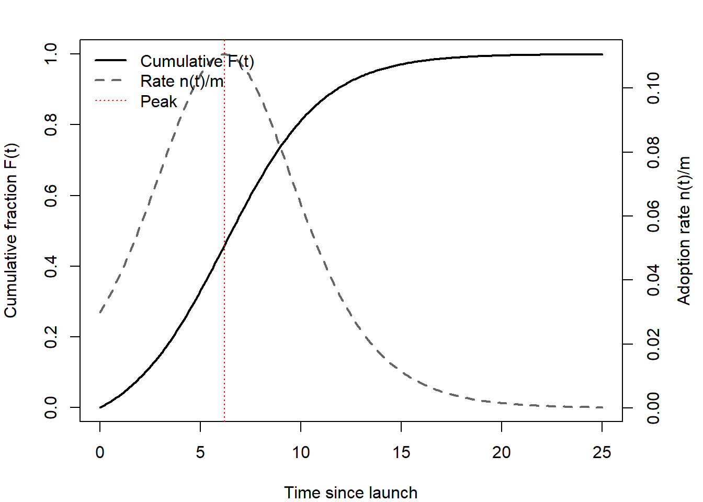
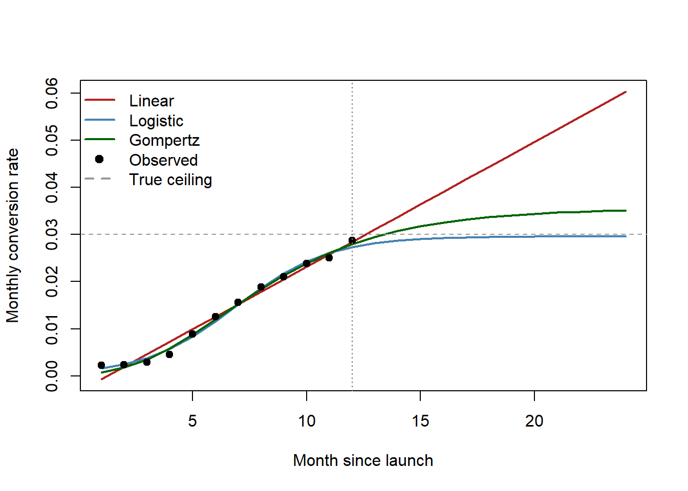
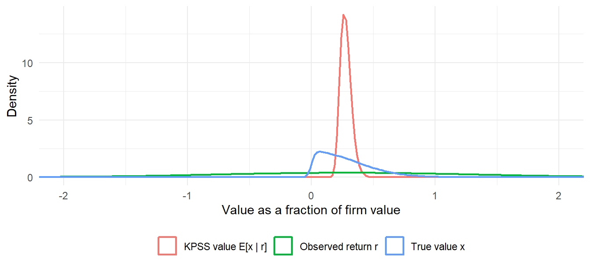

Innovation is the engine of long-run growth in marketing, and it is also one of the field’s hardest objects to measure and to manage. A new product is a bet: the firm commits resources today against an uncertain stream of future demand, and the value of that bet is realized—or destroyed—through the joint behavior of consumers (who must adopt), competitors (who respond), and capital markets (who price the firm’s prospects long before the cash arrives). This chapter treats innovation as the connective tissue between three literatures that are often read separately: the diffusion of new technologies through a population of adopters, the organizational and strategic determinants of who innovates and how much, and the financial valuation of innovation as an intangible asset.
The chapter is organized around the life of an innovation. It begins with diffusion—the canonical models of how an installed base accumulates over time—because diffusion supplies the formal backbone on which forecasting, substitution, and life-cycle tracking are built. It then turns to measurement: how researchers quantify a construct that has no natural unit, leaning heavily on the patent-citation machinery that the empirical literature has standardized. With constructs and measures in hand, it examines the new-product-development (NPD) process inside the firm—teams, capabilities, channels, co-creation, and governance—and the organizational forces (acquisitions, franchising, going public) that expand or erode a firm’s capacity to innovate. It closes with the marketing–finance linkage, where innovation is priced by investors and the construct is finally expressed in returns. Throughout, intuition leads and the formalism follows in full: a reader should leave able to specify a diffusion model, defend a patent-based innovation measure against its known biases, and reason about why markets reward some innovations seven times more than others.
By the end of the chapter the reader will be able to (i) write down and estimate the Bass diffusion model and its successive-generation extension, (ii) construct and critique patent-based innovation measures, and (iii) connect new-product activity to firm value through the event-study logic developed at length in Chapter 26.
28.1 Theoretical Foundations
Before the formal diffusion machinery, it is worth naming the theories that give that machinery its behavioral content. Four strands govern how an innovation spreads and why some spread faster than others.
Diffusion of innovations, in Rogers’s classic synthesis, describes adoption as a process unfolding through communication channels over time across adopter categories: innovators, early adopters, early majority, late majority, and laggards. The Bass model(Bass 1969) is the formal, estimable expression of exactly this idea: its coefficient of innovation \(p\) captures Rogers’s external-influence (media, advertising) channel and its coefficient of imitation \(q\) captures the internal, word-of-mouth contagion among prior adopters, as developed in Equation 28.1. Rogers supplies the sociology; Bass supplies the differential equation.
The technology acceptance model (TAM), Davis’s adaptation of the theory of reasoned action to information technology, holds that adoption intention is driven by two beliefs: perceived usefulness and perceived ease of use (Davis 1989). TAM explains adoption at the level of the individual decision that the Bass model aggregates, and it is the microfoundation most often invoked when the innovation is a digital product or platform.
Controversy: an entire journal issue on whether to retire one model
TAM is among the most-cited models in the social sciences, and information systems devoted a special issue of the Journal of the Association for Information Systems to arguing about whether it had become an obstacle. Marketing should care: TAM is routinely used here as an off-the-shelf adoption model, and the objections are not about IS specifically.
1989 — the model.Davis (1989) introduces perceived usefulness and perceived ease of use as the determinants of acceptance. It is parsimonious, easy to operationalize, and travels well, and it is applied to essentially every technology over the following two decades.
2007 — the special issue.Hirschheim (2007) introduces nine pieces running from page 203 to page 286 under the title Quo Vadis TAM. The framing paper, Benbasat and Barki (2007), argues that TAM’s very success has become the problem: a model this easy to apply crowds out theory development, generates endless small variations, and diverts attention from the design characteristics that actually determine whether a system is useful.
The issue does not agree with itself.Goodhue (2007) replies directly, eight pages later, that the diagnosis overstates the damage. Bagozzi (2007)—a marketing scholar—argues the deeper defect is conceptual, in how the model links intention to behavior, and proposes a paradigm shift rather than a repair. And the closing piece is by TAM’s own originator with co-authors, Venkatesh, Davis, and Morris (2007), asking Dead or Alive? about the research programme they built.
The transferable lesson. This is what happens when a model becomes infrastructure: the reasons for its dominance—simplicity, easy measurement, comparability across studies—are largely independent of whether it is the best available explanation, and they compound. The same dynamic is documented in this book for a service-quality instrument (Section 6.3) and a customer metric (Chapter 4). If you reach for TAM because it is standard, that is a reason to check the 2007 issue first, not a reason to skip it.
Rogers’s perceived attributes explain the rate of diffusion, that is, why the Bass \(p\) and \(q\) differ so sharply across categories. Five attributes predict adoption speed: relative advantage (the improvement over what it replaces), compatibility (fit with existing values and practices), complexity (inverse ease of understanding and use), trialability (the degree to which it can be experimented with before commitment), and observability (the visibility of its benefits to others). High relative advantage, compatibility, trialability, and observability, and low complexity, accelerate diffusion. These attributes are the behavioral content behind an otherwise atheoretical \(q/p\) ratio.
Network effects modify the diffusion logic for products whose value to each adopter rises with the size of the installed base (communication platforms, standards, marketplaces). Under direct or indirect network externalities the imitation channel is not merely informational but value-creating: each new adopter raises the relative advantage of adoption for everyone else, which steepens the S-curve, can produce tipping and winner-take-most outcomes, and connects diffusion to the platform dynamics treated elsewhere in the book.
28.2 Diffusion of Innovations
Diffusion is the process by which an innovation spreads through a population of potential adopters over time. The central empirical regularity is that cumulative adoption traces an S-curve: slow at first, accelerating as word spreads, then saturating as the pool of non-adopters is exhausted. The modeling task is to give this curve a behavioral micro-foundation so that its parameters carry meaning and can be used for forecasting.
28.2.1 The Bass Model
The workhorse is the Bass model (Bass 1969). Its premise is that the propensity to adopt at time \(t\), conditional on not having adopted yet, is a linear function of how many others have already adopted. Let \(F(t)\) be the cumulative fraction of the market that has adopted by time \(t\), and let \(h(t)\) denote the hazard—the conditional rate of first adoption among those who have not yet adopted. The Bass specification is
where \(f(t) = F'(t)\) is the adoption density. The two parameters carry distinct behavioral content. The coefficient of innovation\(p\) captures the tendency to adopt independently of social influence—external pressure from advertising, media, or intrinsic need—and governs the level of the curve at \(t=0\). The coefficient of imitation\(q\) captures adoption driven by social contagion—word of mouth, observation, network effects—and governs the acceleration once early adopters seed the population. A scale parameter \(m\), the ultimate market potential, converts the fraction \(F(t)\) into a count of adopters \(N(t) = m\,F(t)\).
The Bass model partitions adopters into innovators, who adopt under external influence captured by \(p\), and imitators, whose adoption probability rises linearly with the cumulative number of previous adopters, captured by \(q\)(Bass 1969).
Substituting \(f(t) = h(t)\bigl(1 - F(t)\bigr)\) into Equation 28.1 yields the ordinary differential equation \(f(t) = \bigl(p + qF(t)\bigr)\bigl(1 - F(t)\bigr)\), whose solution under \(F(0)=0\) is the closed form
The non-cumulative adoption rate \(n(t) = m\,f(t)\) is hump-shaped whenever \(q > p\), peaking at \(t^{\*} = \tfrac{1}{p+q}\ln(q/p)\); when \(q \le p\) adoption declines monotonically from launch and the S-curve degenerates. The interior peak is what gives durable-goods sales their characteristic rise-and-fall, and the location of that peak is the quantity managers most want to forecast.
Estimation. The original approach regresses discrete-time adoptions on the installed base. Writing \(n_t = m f(t)\) and \(N_{t-1} = m F(t-1)\), the discretized analogue of Equation 28.1 is the quadratic
which is linear in the composite parameters \(\beta_0, \beta_1, \beta_2\) and can be estimated by ordinary least squares (OLS). The structural parameters are then recovered by inversion: \(m\) solves \(\beta_2 m^2 + \beta_1 m + \beta_0 = 0\) (taking the positive root), \(p = \beta_0/m\), and \(q = -\beta_2 m\). OLS on Equation 28.3 is consistent only under strong assumptions, and three failures of identification recur in practice. First, \(N_{t-1}\) is mechanically correlated with the error \(u_t\) when adoption shocks are serially correlated, biasing the coefficients—maximum likelihood or nonlinear least squares on Equation 28.2 is preferred. Second, the parameters are weakly identified before the sales peak: without observations on both sides of \(t^{\*}\), \(m\) and \(q\) trade off and estimates are unstable, which is why early-life forecasts are notoriously fragile. Third, the basic model assumes a fixed market potential and constant\(p, q\); in reality marketing-mix variables, price declines, and successive product generations all shift these quantities, motivating the extensions below. Figure 28.1 plots the cumulative S-curve alongside the hump-shaped adoption rate it implies.
Code
set.seed(1969)p<-0.03; q<-0.38; m<-1t<-seq(0, 25, by =0.1)F_t<-(1-exp(-(p+q)*t))/(1+(q/p)*exp(-(p+q)*t))f_t<-(p+q*F_t)*(1-F_t)# adoption density n(t)/mt_peak<-log(q/p)/(p+q)op<-par(mar =c(4, 4, 2, 4))plot(t, F_t, type ="l", lwd =2, ylim =c(0, 1), xlab ="Time since launch", ylab ="Cumulative fraction F(t)")par(new =TRUE)plot(t, f_t, type ="l", lwd =2, lty =2, col ="grey40", axes =FALSE, xlab ="", ylab ="")axis(4); mtext("Adoption rate n(t)/m", side =4, line =2.5)abline(v =t_peak, col ="red", lty =3)legend("topleft", legend =c("Cumulative F(t)", "Rate n(t)/m", "Peak"), lty =c(1, 2, 3), lwd =c(2, 2, 1), col =c("black", "grey40", "red"), bty ="n")par(op)

Figure 28.1: Bass diffusion: cumulative adoption F(t) and the hump-shaped adoption rate n(t) for p = 0.03, q = 0.38, m = 1. The adoption rate peaks at the inflection point of the S-curve.
Controversy: can you estimate a Bass model before the peak?
The model above is the most successful forecasting tool marketing has produced, and the most consequential thing to know about it is a limitation established twenty-eight years after it appeared. It bears directly on the only use managers actually have for it, which is forecasting a launch that has not peaked yet.
1969 — the model.Bass (1969) publishes the two-parameter formulation in Management Science. It fits historical diffusion curves remarkably well across categories, and that fit is the basis of its adoption.
1997 — the identification problem.Van den Bulte and Lilien (1997) show that the parameter estimates are biased and, worse, systematically change as more data accumulate. Estimates of \(p\), \(q\) and the market size \(m\) obtained before the adoption peak are not merely imprecise—they drift in predictable directions as the series lengthens. The mechanism is that \(p\), \(q\) and \(m\) are jointly weakly identified from the pre-peak portion of an S-curve: many combinations trace nearly the same early path and diverge only afterwards.
1998 — an erratum follows(Marketing Science 1998), which is itself worth noticing in a chapter about diffusion: the correction is part of the public record.
2004 — the author looks back.Bass (2004) revisits the model thirty-five years on in a retrospective for Management Science, an unusual document in which the originator assesses what the model did and did not establish.
The practical consequence, stated bluntly. Excellent in-sample fit to a completed diffusion curve is close to uninformative about forecasting ability for an incomplete one, because the fit is achieved by a parameter combination that the early data cannot pin down. A Bass forecast made before the peak should be reported with the range of \((p, q, m)\) combinations consistent with the data so far, not as a point estimate. Chapter 58 develops the identification issue formally, and Section 77.8.7 places this among the field’s standing methodological disagreements.
28.2.2 Successive Generations and Substitution
Most durable categories do not diffuse once; they diffuse repeatedly as new technological generations replace old ones (mainframes to minicomputers to PCs; 3G to 4G to 5G). A model of a single generation misattributes the decline of an incumbent technology to saturation when it is in fact substitution. Chandrasekaran, Tellis, and James (2020) develop a successive-generations framework that separates two rates the basic Bass model conflates: the rate at which adopters disengage from an older technology and the rate at which they adopt the newer one. Allowing these to differ is what lets the model fit the empirically observed overlap, in which an older generation is still gaining late adopters even as the newer one accelerates—an overlap a single substitution rate cannot reproduce.
The practical payoff is life-cycle tracking. Meade and Rabelo (2004) review the forecasting toolkit for the technology-adoption life cycle and stress that model choice should follow the data regime: pre-peak data demand methods robust to the weak identification noted above, whereas post-peak data permit richer multi-generation specifications. The diffusion literature thus supplies not a single model but a ladder of models indexed by how much of the life cycle the analyst can observe. Figure 28.2 sketches how each generation carries its own adoption process while a distinct disengagement rate governs substitution.
Figure 28.2: Successive-technology diffusion. Each generation has its own adoption process; substitution is governed by a disengagement rate from the incumbent that is distinct from the adoption rate of the successor.
28.3 Growth Curves Beyond Bass: Trend Extrapolation for a New Channel
The Bass model is one member of a larger family of growth curves, and the family matters whenever the task is not to explain adoption but to project a young, saturating series forward. A new product’s cumulative sales, a technology’s installed base, and—as Kaiser and Schulze (2026) show—a new marketing channel’s conversion rate all trace an S: near-flat at launch, a steepening middle, a plateau as the addressable ceiling binds. The forecasting difficulty is that early data show only the bottom of the S, and the functional form the analyst imposes on the trend, not the data, then decides where the curve is headed. Kaiser and Schulze make the point concrete by projecting organic-LLM referral outcomes under four trend specifications and reporting that the choice “substantially impacts predictions.” Those four specifications are worth stating precisely, because they span the space of sensible answers.
The two linear forms are the null against which the curves earn their keep. A plain linear trend and its centered variant, \[
y_t = \beta_0 + \beta_1 t
\qquad\text{and}\qquad
y_t = \tilde\beta_0 + \beta_1 (t - \bar t),
\tag{28.4}\] fit the identical line—centering shifts only the intercept’s meaning (from the extrapolated value at \(t=0\) to the level at the sample midpoint) and decorrelates intercept from slope, which stabilizes the starting values the nonlinear fits below require. Their shared defect is fatal for a saturating quantity: a straight line has no ceiling. Extrapolated a year past a nascent channel’s data, a linear conversion rate marches past every plausible bound, and a share past 100%. Centering cures none of this; it is a conditioning device, not a model of saturation.
The logistic (sigmoid) curve is the symmetric saturating alternative. It is the solution of the autocatalytic law \(\dot y = \tfrac{k}{L}\,y\,(L - y)\)—growth proportional to both the level attained and the headroom remaining—giving \[
y_t = \frac{L}{1 + \exp\!\big(-k\,(t - t_0)\big)},
\tag{28.5}\] with a hard upper limit\(L\) (the ceiling, imposed a priori or estimated), growth rate \(k\), and midpoint \(t_0\) at which \(y = L/2\). Its inflection sits exactly halfway up, so a logistic rises and levels off as mirror images. The Gompertz curve relaxes that symmetry. It solves \(\dot y = c\,y\,\ln(a/y)\)—growth proportional to the log headroom—so the brake engages later and the approach to the asymptote is slower than the take-off: \[
y_t = a\,\exp\!\big(-b\,\exp(-c\,t)\big),
\tag{28.6}\] with asymptote \(a\), and inflection at \(t = (\ln b)/c\) where \(y = a/e \approx 0.368\,a\), below the logistic’s half-way point—the signature of an asymmetric S-curve(Gompertz 1825). A channel that matures fast then crawls toward its ceiling is Gompertz-shaped; one that accelerates and decelerates evenly is logistic. The data rarely say which until the plateau is in view, and that is the whole problem: before the inflection, market potential and growth rate trade off just as \(m\) and \(q\) do in the Bass model (Equation 28.2), so competing curves fit the observed rise almost equally well while disagreeing sharply about the ceiling. The honest output of an early-life projection is therefore an envelope of forms, not a single line.
Estimation is ordinary least squares for the linear forms and nonlinear least squares for the curves—the same nls machinery used for the cumulative Bass model, with the asymptote and rate given explicit starting values (or supplied by R’s self-start models SSlogis and SSgompertz). Figure 28.3 fits all four to a simulated year of a maturing channel and projects each a year beyond the data.
Code
set.seed(2024)# Twelve months of a new channel's monthly conversion rate, truly approaching a# ceiling of 3% along a logistic path, observed with noise.months<-1:12L_true<-0.030; k_true<-0.55; t0_true<-7cr_true<-L_true/(1+exp(-k_true*(months-t0_true)))cr_obs<-pmax(cr_true+rnorm(12, 0, 0.0012), 1e-4)d<-data.frame(t =months, cr =cr_obs)ctrl<-nls.control(maxiter =200, warnOnly =TRUE)# return a fit rather than abortfit_lin<-lm(cr~t, data =d)fit_cen<-lm(cr~I(t-mean(t)), data =d)# identical fit, centered trendfit_log<-nls(cr~L/(1+exp(-k*(t-t0))), start =list(L =0.03, k =0.4, t0 =7), data =d, control =ctrl)fit_gom<-nls(cr~a*exp(-b*exp(-c*t)), start =list(a =0.03, b =5, c =0.4), data =d, control =ctrl)newt<-data.frame(t =1:24)pr<-sapply(list(Linear =fit_lin, Logistic =fit_log, Gompertz =fit_gom),function(m)predict(m, newdata =newt))matplot(newt$t, pr, type ="l", lwd =2, lty =1, col =c("firebrick", "steelblue", "darkgreen"), xlab ="Month since launch", ylab ="Monthly conversion rate", ylim =range(0, pr, cr_obs))points(d$t, d$cr, pch =19)abline(v =12, lty =3, col ="grey50")abline(h =L_true, lty =2, col ="grey60")legend("topleft", bty ="n", lwd =2, col =c("firebrick", "steelblue", "darkgreen", "black", "grey60"), lty =c(1, 1, 1, NA, 2), pch =c(NA, NA, NA, 19, NA), legend =c("Linear", "Logistic", "Gompertz", "Observed", "True ceiling"))cat(sprintf("Projected CR at month 24 — linear %.3f, logistic %.3f, gompertz %.3f\n",pr[24, "Linear"], pr[24, "Logistic"], pr[24, "Gompertz"]))#> Projected CR at month 24 — linear 0.060, logistic 0.030, gompertz 0.035cat(sprintf("Centered-linear reproduces the linear fit exactly: %s\n",isTRUE(all.equal(unname(fitted(fit_lin)), unname(fitted(fit_cen))))))#> Centered-linear reproduces the linear fit exactly: TRUE

Figure 28.3: Four trend specifications fit to twelve months of a maturing channel’s monthly conversion rate (points), then projected twelve months past the end of the data (dotted vertical line); the dashed horizontal line is the true 3% ceiling. In sample the fits nearly coincide; out of sample the linear trend climbs past any plausible ceiling while the logistic and Gompertz curves saturate—at different levels, which is the weak identification of a pre-inflection series made visible.
The fits are nearly indistinguishable over the twelve observed months yet part company violently once extrapolated: the linear projection sails through the true ceiling while the two S-curves flatten toward different asymptotes. That spread is the forecast uncertainty a single fitted line hides, and it is why fitting the family—and reporting where the members agree and where they diverge—is the disciplined move for any young, saturating series.
The trend-extrapolation discipline
A saturating quantity demands a saturating model. Never linear-extrapolate a rate, a share, or a penetration figure: the linear form has no ceiling and will always, given enough horizon, predict the impossible. Fit at least one symmetric (logistic) and one asymmetric (Gompertz) curve, treat the gap between their projected asymptotes as the honest forecast interval, and distrust any point forecast made before the series has shown its inflection—the region where, exactly as in the Bass model, the ceiling and the growth rate are only weakly separated by the data.
These curves are the reduced-form cousins of the Bass model of Section 28.1. Where Bass decomposes the S into interpretable innovation and imitation rates (Equation 28.1), the logistic and Gompertz fit the shape directly, which is the pragmatic choice when only cumulative levels are observed and no adopter-level story is needed. Kaiser and Schulze (2026) turn exactly this apparatus on a marketing channel rather than a product—projecting how fast LLM referral converges toward established channels— and pair it with the overdispersed rate model of Section 69.7 to keep the inference honest on sparse data. Diffusion logic, it turns out, describes the maturation of marketing infrastructure as readily as the adoption of the products that flow through it.
28.4 Earned Media and the Local Diffusion of a Green Innovation
Bass and its descendants put the diffusion mechanism inside the consumer population: imitation is contagion among adopters. For a great many products that is only half the story, because the consumer cannot adopt until a local business decides to carry the thing. Plant-based meat is the clean case. A household’s willingness to try an Impossible burger is irrelevant in a county where no restaurant puts one on the menu, so the object to be explained is a supply-side adoption decision by thousands of small, independent merchants—each of whom faces a fixed cost of menu redesign, supplier onboarding, and staff training, and each of whom is guessing at local demand.
Xu, Guo, and Xu (2026) study exactly this margin for plant-based (“impossible”) meat over 2015–2019, and their first contribution is a measurement one. There is no registry of which restaurants and stores carry the product, so they construct a location-specific adoption metric from the merchants’ own social-media announcements—the post that says the burger is now on the menu—which turns an unobservable rollout into a county-quarter panel. The substantive question is then whether local news coverage of the product causes these merchants to adopt it.
The obstacle is that coverage is not assigned at random. Editors write about what their audience already cares about, so a county with latent enthusiasm for green food generates both more column inches and more adoption; and once a few restaurants adopt, that itself becomes local news. Coverage and adoption are jointly determined by an unobserved local taste, and reverse causality runs alongside it. The authors’ answer is to instrument coverage with quasi-random variation in county-quarter news production across topics. Local news space is a rivalrous resource: an outlet has a fixed number of slots per quarter, so a flood of unrelated newsworthy events crowds the focal topic out, while the producer’s own national news flow pushes it in. This is the news-crowd-out logic of Eisensee and Strömberg (2007), refined to the county-quarter-topic cell and resting on the local-press-supply tradition of Snyder and Strömberg (2010). The topic decomposition is what makes the exclusion restriction credible: the identifying variation comes predominantly from news about the producer’s financials—funding rounds, valuations, earnings—which is generated in corporate boardrooms and financial markets, not by editorial interest in the county’s food scene, and which has no plausible direct channel to a local restaurateur’s menu except through the coverage itself.
flowchart LR
F["Producer's national\nfinancial news flow\n(funding, valuations, earnings)"]
O["County press capacity\n(outlets, newsroom size)"]
X["Rival-topic news pressure\n(crowd-out of the news hole)"]
N["Local coverage of\nthe green product"]
A["Local merchant adoption\n(menu / shelf announcements)"]
T["Unobserved local\ntaste for green food"]
L["County ideology\n(liberal vote share)"]
F --> N
O --> N
X -- "crowds out" --> N
N --> A
T -. "confound" .-> N
T -. "confound" .-> A
A -. "reverse causality" .-> N
L -- "moderates" --> A
Figure 28.4: Identifying the effect of local news on local adoption. The unobserved local taste for green food (dashed) confounds coverage and adoption in both directions. The two news-supply shifters enter only through coverage: the producer’s national financial news flow, scaled by the county’s press capacity, and crowd-out from rival topics competing for the same finite news hole.
Three results carry beyond the setting. First, local coverage does raise adoption by restaurants and stores, and the magnitude is of the same order as what packaged-goods firms buy with television advertising—except that it is earned, which reframes public relations from a reputational function into a distribution-building one. Second, the effect is markedly stronger in liberal-leaning counties. Green-product diffusion is therefore spatially sorted by ideology and not only by the usual income and density gradients, echoing the finding that political identity conditions the appeal of environmental attributes even when the private economics are held fixed (Gromet, Kunreuther, and Larrick 2013). A national average effect is a weighted mixture over a politically partitioned map, and a rollout plan built on that average will systematically over-invest in one half of the country and under-invest in the other. Third—and this is the methodological payoff—the topic composition of news is information, not nuisance. Decomposing coverage by topic told the authors which slice of the variation was doing the identifying work, and that slice is the one whose exclusion restriction can be argued from institutional detail.
The replication below builds the confound deliberately, then removes it. A panel of counties over twenty quarters carries an unobserved green-taste shock that raises both coverage and adoption; coverage is additionally moved by two supply-side shifters that have no business in the adoption equation. Ordinary least squares with county and quarter fixed effects cannot rescue the estimate—the confound varies within county over time—while two-stage least squares on the news-supply instruments recovers the truth. The last block interacts the endogenous regressor with county ideology, using interacted instruments, to recover the political moderation.
Code
set.seed(404)library(fixest)# --- A county-quarter panel of local-business adoption ------------------------n_cty<-400; n_qtr<-20cty<-rep(seq_len(n_cty), each =n_qtr)qtr<-rep(seq_len(n_qtr), times =n_cty)N<-n_cty*n_qtr# County traits, both time-invariant: liberal vote share and local press capacity.lib<-rep(plogis(rnorm(n_cty, 0, 0.8)), each =n_qtr)outlets<-rep(exp(rnorm(n_cty, 0, 0.5)), each =n_qtr)# Two exogenous shifters of local news SUPPLY, neither of which belongs in the# adoption equation:# (1) the producer's national financial news flow (funding rounds, earnings),# which reaches a county in proportion to its press capacity;# (2) crowd-out -- unrelated topics competing for the same county-quarter news hole.fin_national<-rep(rnorm(n_qtr, 0, 1), times =n_cty)z_fin<-scale(log(outlets)*fin_national)[, 1]z_crowd<-scale(rgamma(N, shape =2, scale =1))[, 1]# The confound: unobserved local taste for green food, which moves BOTH the# editor's willingness to cover the product AND the merchant's willingness to stock it.taste<-0.6*scale(lib)[, 1]+rnorm(N, 0, 1)# Observed local coverage of the product: the endogenous regressor.news<-0.75*z_fin-0.35*z_crowd+0.50*taste+rnorm(N, 0, 0.5)# Adoption: local restaurants and stores announcing the product this quarter.beta_main<-0.25# true average effect of coveragebeta_lib<-0.60# true extra effect per unit of (demeaned) liberal sharealpha_c<-rep(rnorm(n_cty, 0, 0.7), each =n_qtr)tau_t<-rep(rnorm(n_qtr, 0, 0.4), times =n_cty)lib_c<-lib-mean(lib)adopt<-(beta_main+beta_lib*lib_c)*news+alpha_c+tau_t+0.8*taste+rnorm(N, 0, 0.8)d<-data.frame(adopt, news, lib_c, z_fin, z_crowd, cty, qtr)# --- (1) OLS with county and quarter fixed effects: still confounded ----------m_ols<-feols(adopt~news|cty+qtr, data =d)# --- (2) 2SLS: instrument coverage with the two news-supply shifters ----------m_iv<-feols(adopt~1|cty+qtr|news~z_fin+z_crowd, data =d)# --- (3) Which instrument does the identifying work? --------------------------Fstat<-function(m)fitstat(m, "wf")$wf$statf_fin<-feols(news~z_fin|cty+qtr, data =d)f_crowd<-feols(news~z_crowd|cty+qtr, data =d)# --- (4) Ideology heterogeneity: two endogenous terms, two interacted instrumentsm_het<-feols(adopt~1|cty+qtr|news+news:lib_c~z_fin+z_crowd+z_fin:lib_c+z_crowd:lib_c, data =d)cat(sprintf("True average effect of coverage : %.3f\n", beta_main))#> True average effect of coverage : 0.250cat(sprintf("OLS, county + quarter FE : %.3f\n", coef(m_ols)["news"]))#> OLS, county + quarter FE : 0.577cat(sprintf("2SLS, news-supply instruments : %.3f (SE %.3f)\n",coef(m_iv)["fit_news"], se(m_iv)["fit_news"]))#> 2SLS, news-supply instruments : 0.228 (SE 0.016)cat(sprintf("First-stage F -- producer financials : %.0f\n", Fstat(f_fin)))#> First-stage F -- producer financials : 7208cat(sprintf("First-stage F -- rival-topic crowd-out : %.0f\n", Fstat(f_crowd)))#> First-stage F -- rival-topic crowd-out : 748cat(sprintf("True ideology interaction : %.3f\n", beta_lib))#> True ideology interaction : 0.600cat(sprintf("2SLS ideology interaction : %.3f (SE %.3f)\n",coef(m_het)["fit_news:lib_c"], se(m_het)["fit_news:lib_c"]))#> 2SLS ideology interaction : 0.666 (SE 0.092)
Fixed effects absorb the level of a county’s enthusiasm and the national trajectory of the category, and they still leave the OLS coefficient at roughly twice the truth, because the taste shock that drives coverage moves quarter by quarter inside the county. Two-stage least squares on the two news-supply shifters lands on the true parameter, and the first-stage diagnostics reproduce the paper’s finding that producer-financial news carries the identification: it is by far the stronger instrument, and it is also the one whose exclusion restriction survives an institutional argument. The interacted specification then recovers the ideology moderation, which is the practical output—it converts a single national elasticity into a map.
Two cautions travel with the design. The instruments are only as good as the claim that national corporate news reaches a county solely through the local news hole; if the same funding round moves the supplier’s wholesale terms or the parent chain’s national menu policy, the exclusion restriction fails and no first-stage F will reveal it. And because the estimate is a local average treatment effect, it is identified off merchants whose adoption decision is responsive to coverage—plausibly the undecided middle, not the committed early adopters that a Bass model’s innovation parameter is meant to capture. The two frameworks are complements: Section 28.1 characterizes the shape of the curve, this design identifies what moves it.
28.5 Measuring Innovation
Innovation has no natural unit, so every empirical claim about it rests on a constructed measure, and the credibility of the claim is only as strong as the measure’s construct validity. Three families dominate. Input measures (R&D expenditure) capture effort but not outcome and are reported inconsistently across firms. Output measures based on new-product introductions—drawn from commercial databases such as product-launch analytics (Wies, Moorman, and Chandy 2023)—capture commercialized innovation but miss the upstream invention that precedes it. Patent-based measures sit between input and market outcome and have become the field’s default because patents are dated, classified, linked to assignees, and connected to one another through citations.
28.5.1 Patent Counts and Their Truncation Problems
The canonical pipeline, exemplified by Chang and Wu (2021), draws granted-patent records (historically from the NBER patent database covering U.S. Patent and Trademark Office grants) and proxies a firm’s annual innovation by two quantities: the count of patents the firm applied for in a year and ultimately had granted, and the citations those patents subsequently receive. Two measurement decisions are load-bearing. First, patents are dated by application year rather than grant year, because application date is closer to the moment of inventive activity. Second, both measures are logged to tame the heavy right tail of the patent distribution.
Two truncation biases must be corrected or the estimates are not interpretable. The application–grant lag truncates recent application years (patents applied for late in the sample have not yet been granted), so the sample is typically ended a few years before the data cutoff. The citation-accumulation lag truncates forward citations for recent patents (they have had less time to be cited), which is addressed with technology-class-by-year fixed effects that net out the systematic component of citation timing. These are not cosmetic adjustments: without them, a spurious downward trend in innovation appears at the end of every sample.
28.5.2 Backward Citations: Novelty
A patent cites prior art. The backward citations a patent makes—the patents it builds on—index how much existing knowledge it recombines, and thus inversely index its novelty.
Citing propensity is defined as the average number of backward citations excluding citations to public research per patent; it reflects a firm’s overall level of citing (Roach and Cohen 2013, 512).
Chandy et al. (2006) use the same logic at the patent level: novelty is measured by the number of backward citations a patent makes, with higher backward citations implying lower novelty, on the reasoning that an idea drawing heavily on existing patents is by construction less of a departure from what came before. Backward counts are available at application time, which makes them attractive as an ex ante measure—unlike the forward citations discussed next.
28.5.3 Forward Citations: Importance
The forward citations a patent receives—later patents that cite it—index its downstream influence, and the literature treats them as the best available proxy for the importance or quality of an invention rather than its mere volume. Tellis, Prabhu, and Chandy (2009) and Cao et al. (2023) both weight patents by forward citations on precisely this ground, and Ahuja and Morris Lampert (2001) operationalize breakthrough inventions as the top 1% of patents by citation weight within their application year. The external validity of the measure is anchored by Trajtenberg (1990), who shows that the more citations a CT-scanner patent receives, the higher its correlation with the technology’s realized improvement surplus—a rare direct link between a citation count and an independent welfare measure (Lampe and Moser 2016). Chandy et al. (2006) summarize idea importance as the total forward-citation count for a patent.
Forward citations have well-understood virtues and a sharp limitation, which the following table organizes.
Table 28.1: Forward versus backward patent citations as innovation measures
Property
Forward citations
Backward citations
Construct measured
Importance / quality / influence
Novelty (inverse)
Timing
Ex post (accrue after grant)
Ex ante (fixed at application)
Manipulability by firm
Low—examiners verify prior art; over-citing narrows own scope
Higher—applicants control what they cite
Principal bias
Right-truncation: older patents accrue more citations
Less time-sensitive
Standard fix
Long window (≈17+ yrs) or class-year fixed effects
—
As Table 28.1 records, the chief threat to forward-citation measures is temporal: because citations accrue over time, older patents mechanically look more important. The standard remedy is a citation window long enough—on the order of seventeen years or more—that the bias from differential accumulation is negligible, supplemented by the class-year fixed effects noted above. The ex post nature of the measure remains a genuine caveat: forward citations cannot recover the importance an inventor or investor could have perceived at the time of patenting, which is exactly the quantity a forward-looking valuation would want. The stock market’s reaction to the grant measures that quantity directly, and Section 28.9 shows how to estimate it patent by patent and where the estimate can and cannot be used. Galasso and Simcoe (2011) exploit this measurement apparatus to study how managerial risk exposure shapes the quantity and the citation-weighted quality of innovation.
28.5.4 What Citations Miss: The Value Pathways of Serendipitous Inventions
A forward-citation count observes one way a patent creates value: it shapes later technology. Grimpe et al. (2026) show that which way a patent pays off depends on how the invention came about. Using 8,530 patented inventions across 23 countries, they compare serendipitous inventions, the accidental discoveries firms like to celebrate in the tradition of the microwave oven, penicillin, and Velcro, with inventions that were the planned output of R&D. Relative to planned inventions, serendipitous ones are less likely to have a strong technological impact, less likely to be turned into a marketable product, and less likely to serve as an effective blocking tool in the firm’s patent strategy. They are more likely to generate value through licensing.
The authors read the licensing result as a matter of fit. An accident is not aimed at the originating firm’s strategy, so the firm may be poorly placed to use it, while another firm can make it succeed. A serendipitous patent therefore works as an option-like asset whose value is captured through external channels rather than internal use. Planned inventions benefit from the downstream complementary assets the firm already has, while serendipitous patented inventions pay off more for firms with strong licensing or technology-selling capabilities. (Only the published abstract was accessible when this section was written, so the measures behind each pathway and the effect sizes are not reported here.)
Two consequences follow for this chapter. The first concerns measurement. Each measure in this section observes a single channel: citations observe technological impact, and counts of new-product introductions (Wies, Moorman, and Chandy 2023) observe commercialization. None of them observes licensing income. If inventions differ systematically in which channel carries their value, a firm-level measure built on one channel partly ranks firms by the origin mix of their inventions rather than by the value those inventions create. The second concerns marketing. When the originating firm cannot commercialize an accidental invention itself, its customers are other firms, and the commercial task changes from launching a product to selling a technology: finding licensees and setting the terms on which they use it.
28.5.5 Product Versus Process Patents, and Tying Patents to Products
Counts and citations say how much a firm invents and how much the invention mattered. They do not say what kind of invention it is or which of the firm’s products it serves. Branstetter et al. (2026) need both answers to ask whether moving production abroad weakens innovation at home, and the two tools they use carry over to any study of multiproduct firms.
The first tool sorts patents into product and process innovations by reading the claims. Patent attorneys draft claims in a standardized language. A process claim usually opens with “a method” or “a process” and lists steps. A product claim names an apparatus and describes its parts. The authors use a claim-level classification built on these regularities by Ganglmair, Robinson, and Seeligson, and they note three rules for turning claim labels into a patent label: at least half of the claims are process claims, the first claim is a process claim, or any claim is a process claim. The rules give different counts, so a paper that splits patents this way should say which rule it used. The working paper does not say which one its main tables use.
The second tool links patents to products. Patents are classified by the International Patent Classification (IPC), which describes technical features. Trade data are classified by Harmonized System (HS) codes, which describe what a good is and does. No natural crosswalk exists, because goods in very different HS categories can use the same technology. The authors use the Algorithmic Links with Probabilities method of Lybbert and Zolas (2014). Keywords are generated from each product category’s description and searched in patent titles and abstracts. The IPC classes of the matching patents are tabulated and reweighted into probabilities. Each patent then counts fractionally toward several products. In the paper’s example, IPC class G08B (signalling and alarm systems) puts weight 0.705 on electric signalling apparatus (HS 853110), 0.134 on fire-fighting vehicles, and about 0.03 on each of three loudspeaker categories. A “patent count” for a product is therefore a probability-weighted sum, not an integer.
The setting is Taiwan’s electronics industry. Until November 2001 the government restricted investment in mainland China and banned it for many high-technology products. The reform that month removed 122 products from the prohibited list, including laptops, mobile phones, and optical drives. The sample is 483 listed electronics firms observed in 16 product clusters from 2000 to 2011, which gives 3,665 firm-cluster pairs. The clusters aggregate 669 six-digit HS codes. Offshoring is measured by the cumulated exports of each firm’s mainland subsidiaries, taken from Chinese customs records. Innovation is measured by U.S. patents dated by application year. Whether a cluster was liberalized serves as an instrument for offshoring, and each regression is a long difference from 2000 to a year between 2003 and 2011. Section 44.6.5 examines that design. Table 28.2 collects the estimates.
Table 28.2: Two-stage least squares estimates of the effect of log offshoring on log patenting, Taiwanese electronics firms, long differences from 2000. Significance at the 10% level or better with firm-clustered standard errors. From the working-paper version (Branstetter et al. 2021, Tables 4, 5, 8, 9, 12, 13, 14); the published article may report different numbers.
Patents counted
Estimates at horizons where significant
Horizons significant (of 9)
Same category, all patents
−0.023 to −0.032
5
Same category, citation-weighted
−0.017 to −0.055
7
Same category, product patents
−0.015 to −0.034
6
Same category, process patents
+0.012 to +0.019
5
Technologically close categories, all patents
+0.0015 to +0.0029
8
Technologically close categories, product patents
+0.0015 to +0.0027
8
Technologically close categories, process patents
none
0
The authors read the same-category estimate as a 2% to 4% fall in patenting for a doubling of the offshored export stock, relative to what the category would otherwise have produced. Ordinary least squares gives a small positive coefficient, which they attribute to demand shocks that raise both offshoring and patenting. The decline is concentrated in product patents, and process patents in the offshored categories rise. In categories technologically close to the offshored ones, the same firms patent more, and the increase is in product patents only. The outcome there is a sum of patents in other categories weighted by inverse technological distance, so its coefficient is not on the same scale as the same-category one, and the two should not be netted against each other.
These signs separate two accounts of what offshoring does to innovation. If separating factories from laboratories erodes capability, process innovation should suffer most, because it depends most on contact with production. The data show the opposite. The authors’ account works through incentives. Moving a mature product to a low-cost site achieves the cost reduction that process R&D would otherwise have had to deliver, and it extends the product’s commercial life, so the firm can postpone replacing it. Some process work is still needed to exploit the new site. Engineers no longer needed for product development in the offshored category move to nearby categories. Managers the authors interviewed described the arrangement in the same terms: production in China pays for new products developed in Taiwan.
Four points apply beyond this paper.
The level of aggregation decides the answer. A firm-level regression would add a negative effect in one part of the portfolio to a positive effect in another and could report nothing. A category-level regression that stops at the affected category reports only the loss.
A product-process split measures how claims were drafted. A process improvement can also be kept as a trade secret and never patented, so a change in process patents need not track the total amount of process innovation.
Fractional product counts inherit the concordance’s errors. Two products that share keywords share patents, which can build a mechanical correlation between neighbouring categories into the data before any firm behaviour is estimated.
The cells are sparse. The mean firm-cluster pair had 0.33 weighted patents in 2000, and the outcome is the log of one plus the count. The paper reports inverse hyperbolic sine and instrumental-variable Poisson versions that keep the negative sign.
For marketing the result concerns how firms manage a product line. A decision that looks like operations (where to manufacture) changes which products get renewed and which are kept alive on lower cost, and the new-product effort reappears in adjacent categories of the same firm.
28.5.6 Measuring Creativity with Embeddings
Patent measures capture firm invention, but most consumer creativity leaves no patent and no citation trail: a recipe, a playlist, a graphic-design template, an outfit. Representation learning fills the gap. Sozuer, Netzer, and Krstovski (2026) learn an ingredient embedding—each ingredient’s vector inferred from the company it keeps across more than 57,000 recipes, the same representation-learning idea as the product embeddings of Section 69.4.1 applied to a dish’s components—and from that geometry read two properties of a recipe: its fit (how coherently its ingredients belong together) and its novelty (how unusual its ingredients are for its category). The measure needs no expert taster and no citation graph; it recovers creativity from the statistics of recombination, exactly as the backward citations above recover a patent’s novelty from the prior art it recombines.
The payoff is a result that complicates the folklore that creativity is uniformly rewarded. High ingredient fit lifts both trial and ratings, but unique ingredients cut trial while raising ratings among those who do try—novelty carries an adoption cost and a quality dividend at once. The recipe that wins is therefore not the most novel but the most balanced: novel in its parts, coherent as a whole. This is the innovation-side echo of the atypicality-and-engagement result in social content (Section 19.2)—distinctiveness pays, but only when it stays legible against a familiar ground—and it turns the embedding from a descriptive gauge into a design tool: the authors build a generator that proposes adding, dropping, or swapping an ingredient to move a recipe toward that balanced-creativity frontier.
The measurement move here—define a construct, operationalize it as a geometric property of a learned embedding, validate it against outcomes it was not fit to, and end in a tool rather than a coefficient—recurs across the creator economy. Its pricing counterpart is Sikdar, Chakraborty, and Dogonadze (2026), who fuse a listing’s structured attributes, photographs, and text to tell a novice artist what to charge and how long the work will take to sell (Section 56.6.1). Both study creators without institutional credentials, both let a learned representation stand in for the expert judgment such creators cannot buy, and both are careful to remain associational: the creator chooses the artifact and its description jointly, so the representation is entangled with the unobserved skill that also drives success. The general statement of that template, and the conditions under which reading a representation is measurement rather than the interpretability error, is in Section 69.5.1.
28.6 New Product Development
A diffusion curve and a patent count describe innovation from the outside. Inside the firm, innovation is produced by new-product-development processes whose design—who is on the team, what information they have, how decisions are made—shapes whether the resulting product is innovative enough to survive. The recurring finding is that NPD outcomes are contingent: capabilities and team structures have value not in the abstract but conditional on the informational and competitive environment.
28.6.1 Capabilities, Teams, and the Information Environment
Moorman and Slotegraaf (1999) advance a contingency view of NPD capability. Rather than asking whether technological and marketing capabilities raise performance on average, they ask when: the informational content of the external environment modulates how firms deploy their capabilities, affecting both the magnitude and the pace of product development. The value of a capability, on this account, lies in its adaptive deployment against environmental cues, not in its mere existence—a theme that recurs across the NPD literature.
Team composition is the next lever. Sethi, Smith, and Park (2001) study cross-functional NPD teams and locate the primary cause of new-product failure in a lack of innovativeness, defined as the delivery of uniquely meaningful benefits. Innovativeness rises with a strong superordinate team identity, encouragement to take risks, customer influence, and active senior-management monitoring—but it falls with high social cohesion, because cohesive teams suppress the dissent that generates novel options. The interactions are as important as the main effects: the benefit of a superordinate identity is amplified by risk encouragement and damped by social cohesion, while functional diversity per se does not move innovativeness. The emphasis on risk encouragement echoes a robust finding from the creativity literature, that the expectation of evaluation lowers creative output (Amabile, Goldfarb, and Brackfleld 1990): teams that anticipate being judged retreat to safe, conventional options, which is precisely the suppression of novelty that undermines innovativeness. Rebecca J. Slotegraaf and Atuahene-Gima (2011) add a temporal dimension, showing that the relationship between team stability and the comprehensiveness of decision making is curvilinear—too little stability fragments knowledge, too much breeds complacency—and that decision comprehensiveness improves new-product advantage, especially at its upper range.
Stability is also something a team chooses, and the moment it is most tempted to change its membership is right after something has gone wrong. Zhong et al. (2026) treat the development team as an open system and ask which teams respond to a failure by bringing in a high-status member, and whether doing so pays off. Their answer turns on how status is distributed inside the team. A failure leaves members uncertain about where they stand, and the authors argue that this status uncertainty is felt most by the members who hold high status. What the uncertainty does next depends on the team’s pre-existing status differentiation, that is, on how unequally status is spread across its members. In a flat team it makes a high-status newcomer look like a potential benefit to the team’s collective performance. In a steep team it makes the same newcomer look like a potential threat to each incumbent’s own standing. These individual perceptions then combine, through an emergent process, into the team’s collective decision about whom to add.
The prediction is a contingency rather than a main effect: failure should raise a team’s willingness to add a high-status member when status differentiation is low but not when it is high, and adding one should improve the team’s subsequent performance. The authors find support for these predictions in longitudinal archival data on 4,811 product development teams, in a preregistered experiment with 783 individual participants, and in a preregistered experiment with 222 teams. The archival setting is close to marketing practice. In the dissertation version of the archival study (Zhong 2024), the teams work inside a large IT company and, between June 2020 and May 2021, spend their time running A/B tests that compare a proposed product change with the current version on real customers; each experiment counts as one performance episode. Failure is the share of the team’s preselected customer metrics, such as spending, time spent in the app, downloads, or click rate, on which the new version did not beat the original. A member’s status is the number of direct ties they hold in the firm’s product-development collaboration network, differentiation is the coefficient of variation of status within the team, and a high-status addition is a newcomer whose status exceeds that of every incumbent. Teams in that firm form voluntarily and decide for themselves whom to add, so who joins reflects the team’s own choice rather than a manager’s assignment. (Only the published abstract was accessible when this section was written; the description of the field setting comes from the dissertation, whose sample of 5,283 teams differs from the published 4,811, so the published measures may differ in detail.)
Figure 28.5 traces the argument from a failure to the team’s next performance.
flowchart TB
F["Team failure"] -.-> U["Members' uncertainty<br/>about their own status,<br/>strongest for high-status<br/>members"]
subgraph HIGH["Steep team"]
direction TB
H1["High status differentiation:<br/>newcomer seen as a threat<br/>to members' own status"] -->|"emergent team<br/>decision"| H2["No increase in<br/>willingness to add"]
end
subgraph LOW["Flat team"]
direction TB
L1["Low status differentiation:<br/>newcomer seen as a<br/>benefit to collective<br/>performance"] -->|"emergent team<br/>decision"| L2["Greater willingness<br/>to add a high-status<br/>member"]
end
U -.-> L1
U -.-> H1
L2 --> A["High-status<br/>member added"]
A --> P["Better subsequent<br/>team performance"]
Figure 28.5: How a team’s pre-existing status differentiation shapes its response to failure. Failure leaves members uncertain about their own status, most of all those who hold the most (dashed arrows: unobserved psychological states). In a flat team that uncertainty makes a high-status newcomer look like help for collective performance; in a steep team it makes the same newcomer look like a threat to members’ own standing. Individual perceptions aggregate into the team’s decision, and adding a high-status member is followed by better performance.
Two lessons carry over to marketing organizations. The first is substantive: the hierarchy a team brings into a setback shapes how it recovers from it. Experimentation-heavy teams fail routinely; in the dissertation sample the average experiment failed to beat the original on 77 percent of its chosen metrics. The evidence implies that a flat team is better placed to recruit the expertise a failure reveals it lacks, while a steep team may forgo that expertise to protect its incumbents’ positions. Whether the same holds for sales or key-account teams that recruit after a lost deal is plausible but untested. The second lesson is methodological. In the dissertation version, a model without the interaction found no association between failure and adding a high-status member, while the model with it found a positive association in the flatter teams and none in the steeper ones. A single pooled slope would have hidden the response entirely. Here the moderator was measured; the caution that follows concerns heterogeneity that is not.
A structural caution runs through this literature. Grewal et al. (2013) show that the often-mixed findings on how market orientation interacts with the environment can reflect unobserved heterogeneity: estimating finite-mixture (latent-class) regressions reveals multiple regimes with different effect signs, so that pooled estimates suffer aggregation bias. The methodological lesson generalizes—latent heterogeneity in firms’ innovation responses can masquerade as a null or unstable average effect, and disaggregated estimation is the corrective.
28.6.2 Channels, Co-creation, and Forecasting
NPD does not end at the factory gate. L. Luo, Kannan, and Ratchford (2007) examine new-product development under the constraint of channel acceptance, recognizing that a product that retailers will not stock cannot diffuse regardless of consumer appeal. Ho-Dac, Kumar, and Slotegraaf (2020) study continuous-improvement products (CIPs)—products engineered for post-purchase improvement rather than full replacement—and show that sharing development-progress information raises adoption of the current version, mediated by consumers’ perception of the developer’s commitment to ongoing improvement and moderated by product familiarity. Disclosure, in other words, is itself a marketing instrument.
Co-creation has a demand-side counterpart that the firm-side literature sometimes skips: whether consumers actually value the output. Schreier (2006) measures the willingness-to-pay increment for mass-customized over standard products and finds it substantial but heterogeneous, which is what makes customization a segmentation decision rather than a universal upgrade. Where the firm solicits ideas rather than configurations, the design of the solicitation dominates the volume of it: Toubia (2006) shows that incentive schemes rewarding others’ use of an idea, rather than the idea itself, raise both the quantity and the creativity of what is submitted.
Two comparative studies bound how far any of this generalizes. X. M. Song and Parry (1997) compare NPD practices across nations and find the practice–performance links are not invariant, and Nijssen et al. (2006) show that product and service innovation differ enough in their antecedents that a single NPD framework applied to both will mis-specify one of them. On the organizational antecedent, Han, Kim, and Srivastava (1998) ask whether the market orientation–performance link is mediated by innovation rather than direct — the answer largely determining whether a firm should invest in listening or in building.
On the demand-sensing side, Kim and Slotegraaf (2016) challenge the static view of consumer co-creation. Their concept of brand-embedded interaction—dynamic, personalized engagement that steers consumers toward ideas satisfying both their own needs and the brand’s aspirations—yields more constructive NPD ideas in two Twitter-based quasi-field experiments than passive solicitation does. Co-creation quality, that is, is endogenous to how the firm structures the interaction.
Forecasting a durable good before launch is the hardest demand-sensing problem, because there is no sales history to extrapolate. Harz, Hohenberg, and Homburg (2021) deploy virtual reality (VR) for prelaunch sales forecasting of durables, arguing that VR’s visualization capability (simulation scope, similarity to reality, immersion) and automated-tracking capability (interactivity) induce behavioral consistency between participants’ information search, stated preferences, and purchase behavior. The forecasting backbone is the macro-flow model (Figure 28.6), which projects new-product sales over time by specifying a set of behavioral states (awareness, preference, purchase), the flows between them, and the determinants of those flows (Urban, Hauser, and Roberts 1990). Harz, Hohenberg, and Homburg (2021) extend this model with VR-derived virtual purchases and third-party awareness inputs and find improved accuracy—after adjusting for advertising—at both aggregate and individual levels, with presence and vividness as the operative psychological mechanisms.
flowchart LR
A["Aware"] -->|"info search"| K["Knowledgeable /<br/>Preference formed"]
K -->|"intend"| I["Purchase intent"]
I -->|"trial / virtual purchase"| P["Purchase"]
P -->|"satisfaction"| R["Repeat / WOM"]
R -.->|"contagion"| A
Figure 28.6: The macro-flow model underlying prelaunch forecasting: consumers flow through behavioral states, and the model estimates the determinants of each transition. Virtual-reality simulations supply the flow inputs before launch (Urban, Hauser, and Roberts 1990; Harz, Hohenberg, and Homburg 2021).
28.6.3 Governance and Organizational Structure
Innovation is governed from the top of the firm. R. Srinivasan, Wuyts, and Mallapragada (2018) study board interlock centrality—how connected a firm’s directors are to other boards—and find it raises incremental new-product introductions by channeling market intelligence into the firm; the effect strengthens with internal and marketing leadership on the board and with a CEO of marketing background, and weakens under pronounced intra-industry external leadership. Centrality is one summary of an interlock position; whether the boards a firm connects are otherwise unconnected, and whether other firms bridge the same boards, are the opportunity and exclusivity quantities of Borgatti and Everett (2026), developed in Section 52.3. You et al. (2020) push the upper-echelons logic further, showing that CEO and CMO characteristics—personality, demographics, experience, values—shape both innovation and the stock returns it generates. At the front end of strategy, Molner, Prabhu, and Yadav (2018) show that managers’ market- scoping mindset conditions which markets an innovation reaches: ambiguity avoidance pulls managers toward a downstream, end-user orientation that courts commercialization failure, whereas ambiguity acceptance fosters an upstream orientation that uncovers viable market spaces.
Structure also has to absorb distance. Anderson et al. (2018) analyze qualitative data from 70 distributed product-development projects spanning 14 countries and involving team members who speak 10 different languages, and find that the integration strategies usually prescribed for such projects, modular product architectures and colocating team members, are by themselves insufficient to coordinate the work. What their field interviews point to instead is investment in design information systems built with features that carry design intent across time zones and languages, together with project managers empowered to act on them. The finding is a caution for any account of new-product development that treats modularity as a complete answer to coordination. Modularity partitions the work, but it does not tell a team in one time zone what a team in another meant, and the residual has to be carried by an information system and by authority.
28.6.4 Designing for Uses the Firm Did Not Anticipate
Modularity also matters outside the firm, because customers can put a product to work in ways its designers never planned. Evolutionary biology calls a trait that comes to serve a role it was not selected for an exaptation, and innovation research has borrowed the term for products that acquire new uses after launch. Lim and Chan (2026) study the case in which users do the discovering and the firm may later commercialize what they find, which they call community-led exaptation. Their question is whether the firm can steer those discoveries through the attributes it designs into the product. They separate two kinds of discovery: a new function, meaning a new application of the product, and a new functionality, meaning a new capability of the product itself.
The setting is IKEA, whose products users modify, or hack, to serve purposes they were not sold for. Across 1,925 IKEA product hacks, the two kinds of discovery respond to different attributes (Figure 28.7). Modularity raises the likelihood that a hack yields a new function, and the effect is stronger when the product’s components are compatible across product lines and weaker when the product comes in several esthetic variants. Visual simplicity instead raises the likelihood of a new functionality. An exploratory analysis of archival data and interviews illustrates how IKEA responds to these discoveries, and the authors identify two ways a firm can capture them: by showcasing promising community-discovered functions on its official channels, or by incorporating them as complements to existing product lines. They also caution that functional modifications can raise safety concerns and may require additional development. (Only the published abstract was accessible when this section was written, so the measures of modularity and visual simplicity, the identification strategy, and the effect sizes are not reported here.)
flowchart LR
subgraph DES["Product design choices"]
direction TB
MOD["Modularity"]
CMP["Components compatible<br/>across product lines"]
VAR["Esthetic variants<br/>of the product"]
SIM["Visual simplicity"]
end
subgraph DIS["What users discover"]
direction TB
FUN["New function<br/>(new application)"]
FTY["New functionality<br/>(new capability)"]
end
subgraph RSP["Firm response"]
direction TB
SHW["Showcase on<br/>official channels"]
CPL["Incorporate as<br/>complements to<br/>existing lines"]
SAF["Safety review and<br/>added development"]
end
MOD -->|"raises"| FUN
CMP -.->|"strengthens"| FUN
VAR -.->|"weakens"| FUN
SIM -->|"raises"| FTY
FUN --> SHW
FUN --> CPL
FUN -.-> SAF
FTY -.-> SAF
Figure 28.7: Community-led exaptation in 1,925 IKEA product hacks, as reported in the published abstract. Modularity raises the likelihood that users discover a new function (a new application), more so when components are compatible across product lines and less so when esthetic variants exist; visual simplicity raises the likelihood of a new functionality (a new capability). Labeled dashed arrows are moderators of the modularity effect. Functional modifications can raise safety concerns and require further development.
Three lessons follow for product design and marketing. The first is that design is a lever over discovery and not only over intended use. The lead-user tradition (Section 67.12) asks the firm to find the customers who are ahead of the market; this evidence suggests the firm can also shape the space in which an entire community searches, so that the next market is partly a product of the last design. The second is that decisions usually treated as assortment and operations choices carry an innovation side effect. Making components fit across product lines and offering one product in several looks both change the likelihood that users discover new functions, in opposite directions, so a firm that multiplies esthetic variants for merchandising reasons may be narrowing the uses its customers will invent. The third concerns capture. Read beside the serendipity evidence above (Section 28.5.4), the study is its mirror image: there, a firm’s own accidents are often worth most to other firms; here, accidents made by customers can be worth something to the firm that made the product, provided it has designed for them and has a channel, such as official showcases or a line of complements, through which to bring them back in. The authors’ design rule is to design for intended use and also for the kinds of new uses the firm is willing to seed and commercialize.
28.6.5 Generative AI in the Front End: Effort Saved Is Not Creativity Gained
The front end of the funnel above is where generative AI has been adopted fastest, on the reasoning that turning a vague idea into a developed concept is laborious and the labor can be offloaded. Gordetzki et al. (2026) test that reasoning and find it backwards in an instructive way.
In an online experiment, 276 participants refined ideas for an innovation challenge either alone, with AI-generated text, or with AI-generated images. Image-based support did what it was supposed to do on the effort margin: it significantly reduced effort relative to both working alone and text-based support. It also produced ideas that were 18% less creative than those from the more effortful text-based support. The explanation is about what each format leaves undone. An image specifies every detail of a concept, and a fully specified concept leaves the human nothing to complete. Text leaves gaps, and filling gaps is effortful precisely because it is generative. The effect is moderated by how far the idea has already been developed: textual input helps most when the concept is already mature, because there is enough structure for the human’s completions to attach to.
The result should be read as a claim about agency configuration rather than about model quality—the question is how much of the concretization work the tool takes over, not how good the tool is. That reframing matters for NPD practice because it makes the design variable something a manager controls. It also supplies a caution for the measurement discussion in Section 28.5: an ideation tool evaluated on throughput or on time-to-concept will score the image condition best, and an evaluation restricted to those metrics would recommend exactly the configuration that degrades the output the process exists to produce.
28.6.6 Quality Without Variety: The Diversity Cost of LLM Ideation
The companion question is what happens when the model is asked to generate the ideas rather than help concretize them, and there the accounting runs the other way: the per-idea numbers look excellent and the portfolio numbers do not. Terwiesch et al. (2026) run eight studies on one tightly bounded ideation task—a new physical product for the U.S. college-student market retailing under $50—chosen because it is the challenge format long used in product-design courses, so a large pool of pre-LLM human ideas exists for comparison. Idea quality is measured as this literature has long measured it: average purchase intent elicited from target-market consumers, the best available single-number predictor of an idea’s eventual value.
On that metric the LLM wins outright. LLM-generated ideas have higher average quality than human ideas and are seven times more likely to land in the pooled top decile, and a second study rules out the obvious deflationary explanation—that the model is merely writing better sales copy around equally good ideas. The weakness appears only when the unit of analysis moves from the idea to the set: AI ideas are less novel individually and, more consequentially, less diverse collectively. A fifth study re-analyzes prior LLM creativity experiments and finds the same diversity shortfall in every one, which upgrades the result from an artifact of one prompt to a property of the generator.
That ordering—quality up, diversity down—matters more than either finding alone because of what an idea pool is for. A tournament does not consume the mean of its pool; it consumes the maximum, and the expected maximum of a sample rises with dispersion as well as with location. A generator that shifts the quality distribution rightward while compressing its spread, and while concentrating the draws in one region of the idea space, can dominate on every per-idea metric and still yield a worse best idea, because the search has been narrowed. The measurement lesson is the one Section 28.5.6 makes with patent text: novelty and diversity are set-level quantities that no average of item-level scores recovers, so an evaluation reporting only mean purchase intent is structurally blind to the cost being incurred.
The remaining studies buy the variance back, and in doing so establish that the shortfall is a configuration problem rather than a hard ceiling. Newer model versions generate more diverse sets than older ones but still fall short of human sets. Three interventions close most of what remains: pooling ideas across vendors, so that one model’s training idiosyncrasies do not define the search; prompt engineering— chain-of-thought, and injecting heterogeneous personas or constraints, each of which pushes the sampler off its modal completion; and creative agents instructed to explore the solution landscape deliberately. A final study exploits the economics directly: because the marginal cost of one more AI idea is near zero, simply generating far more of them steadily improves coverage of the idea space and approaches human-level coverage. For an innovation manager the synthesis is that the human pool is less a diversity benchmark to be matched by a cleverer prompt than a coverage target that can be purchased with scale, heterogeneity, or both.
Read alongside Gordetzki et al. (2026), the two results point at the same design variable from opposite ends of the front end. Concretization support degrades creativity by leaving the human nothing to complete; generation support degrades diversity by leaving the search nothing to explore. In both cases the metric that would have caught the problem—effort in one, set-level coverage in the other—is the first one a throughput-oriented evaluation drops.
28.7 Organizational Determinants of Innovation
Beyond the project and the boardroom lies the question of which organizational arrangements expand or erode a firm’s stock of innovative capacity—what several authors call its innovation base, the accumulated inventions, ideas, and discoveries that propel future innovation.
28.7.1 Acquisitions and the Innovation Base
The evidence on whether acquisitions help or harm innovation is genuinely mixed, and the resolution is conditional. Hitt et al. (1991) document a negative average effect: acquisition activity reduces R&D inputs and outputs, including patent counts, as managerial attention and capital are absorbed by integration. Mishra and Slotegraaf (2013), analyzing 352 firms across five industries over seventeen years, qualify this: firms that acquire build a more robust innovation base than those that do not, but the benefit depends on the type of acquisition—vertical (across supply-chain stages) versus horizontal (same stage, similar chains)—and, critically, on the breadth of knowledge in the acquiring firm, which determines whether either acquisition type actually enriches the base. King, Slotegraaf, and Kesner (2008) reconcile the two by emphasizing resource interactions: acquisitions raise performance only when target and acquirer resources are complementary. Marketing–technology complementarity (strong-marketing acquirer, strong-technology target) creates value, whereas technology–technology overlap is substitutive and can destroy it. The apparent contradiction in the literature thus dissolves into a moderation structure—average effects are uninformative when complementarity varies across deals.
28.7.2 Firm Boundaries: Franchising and External Knowledge
Firms also reshape their innovation capacity by reconfiguring their boundaries. Mallapragada and Srinivasan (2017) study franchising as such a lever, using panel data on 38 U.S. restaurant chains (1992–2005) and a nonlinear seemingly-unrelated- regression model. They find a positive relationship between franchising emphasis and product innovativeness that intensifies under high financial leverage and weakens under high slack resources, with a parallel but distinctly moderated pattern for process innovativeness. Franchising, on this evidence, is a conditional substitute for alliances and joint ventures in shaping innovation outcomes.
Knowledge also enters the firm through less formal channels. Baruffaldi and Poege (2024) show that firms learn at scientific conferences, especially when they engage intensely through both sponsorship and scientific contribution. Using direct flights as an instrumental variable for attendance—an instrument that shifts the cost of attending without plausibly affecting innovation through other channels—they find that co-attendance with other scientists raises the likelihood of leveraging external knowledge and of future collaboration, with learning skewed toward prominent firms and scientists. The instrument is what makes the learning claim causal rather than merely correlational: firms that attend more conferences differ in unobservable ways from those that do not, and direct flights break that confound.
28.7.3 Who You Know in the Lab: Networks and Absorptive Capacity
Conferences are a scheduled, purchasable channel. Arts, Fleming, and Veretennik (2026) ask about the unscheduled one, and open with a puzzle the chapter’s measurement section has already half-stated: firms conduct less scientific research internally than they once did, yet their patents lean more heavily on science. If the science is not being made in house, how does it get in? The public-good answer is that it does not need a channel— published findings are there for anyone to read, and a firm’s problem is only whether it is looking. The authors’ answer is that reading is not the binding constraint.
They construct a social network covering nearly the entire population of life-science academic scientists and corporate inventors listed on U.S. patents, then confront the selection problem that has dogged every prior attempt at this question. A firm that cites a professor’s paper may do so because it knows the professor, or because the paper was the best and most commercializable science available—and the two are correlated, because good scientists attract both citations and connections. The design that breaks the tie is paper twins: pairs of scientific papers reporting nearly identical findings, published at nearly the same time, by independent academic teams. Within a twin pair the knowledge itself is held fixed, along with its timing and its commercial potential; what differs is which team the firm’s inventors happen to be connected to. Comparing which twin a corporate patent cites is therefore a comparison of social distance with content controlled, the same maneuver as a matched-pairs experiment and the reason the estimate can be read as transmission rather than quality (Section 52.5).
Connections win. Academic science travels into corporate patents along close interpersonal ties—within two degrees of separation—so the twin whose authors sit a coauthor, or a coauthor’s coauthor, away from the inventor is the one that gets cited. Two degrees is a short reach in a network of that size, and the shortness is the substantive result: this is not diffuse network embeddedness paying off, it is knowing someone, or knowing someone who does. Science may be a public good in the sense that no one is excluded from reading it, but absorbing it is rival, and the rationing device is the social graph.
The moderators are where the paper meets this chapter’s recurring theme. The value of a connection depends on the corporate inventor’s own active engagement in scientific research, and on the alignment between that inventor’s scientific expertise and the academic knowledge being integrated. A tie into a laboratory is worth little to an inventor who has stopped doing science, or whose expertise lies elsewhere. That is absorptive capacity recovered at the level of the individual inventor rather than the firm, and it is the same conditional structure as the acquisition results above and the open-source results below: external knowledge is not an average effect but a complementarity, and internal research capability is the organ that digests it. It also sharpens how the science-linkage measures of Section 28.5 should be read. A firm’s count of patent citations to scientific papers is usually taken as a measure of how science-intensive its technology is; on this evidence it is partly a measure of whose calls its inventors can get returned. (INFORMS and SSRN were both inaccessible when this was written; the account above rests on the published abstract.)
The same conditional structure appears when the network is inside the firm. Breschi, Gagliardi, and Yoon (2026) ask how ethnic diversity among a firm’s inventors is converted into valuable innovation and argue that composition and collaborative structure are different things. From patent and co-inventor data on 890 publicly traded U.S. firms between 1990 and 2015 they build a network index of ethnic integration, the ratio of cross-ethnic to within-ethnic co-invention ties, and link it to the stock-market reaction around patent grants, the forward-looking value measure that Table 28.1 notes forward citations cannot supply. Integration raises patent value, most in firms that are both ethnically diverse and working on technologically complex innovation, and the estimates survive an instrumental-variables strategy for the endogeneity of collaboration structure. Diversity without integration returns little. (Wiley’s site was inaccessible when this was written, so the instrument itself could not be inspected; the account rests on the published abstract.)
28.7.4 Opening the Boundary: Open-Source Product Development
The franchising and conference channels move knowledge toward a firm that still owns the development process. Open-source product development dissolves that ownership: the firm builds its product in public on a social coding platform such as GitHub, and outside volunteers commit code alongside its own employees. Whether that openness pays is a question about the firm’s income statement, not about community goodwill, and Singh et al. (2026) answer it with a panel of 977 U.S. high-tech firms observed from 2001 to 2025. Firms that adopt open-source product development realize, on average, a 4–5% increase in gross margin, an estimate that survives staggered difference-in-differences, generalized synthetic control, instrumental-variable, and dynamic-panel specifications (Chapter 44)—four designs with different identifying assumptions converging on the same magnitude, which is what makes the result hard to dismiss as an artifact of any one of them.
The interesting content is in the mechanism and its limits. Framing open source as distributed knowledge integration in the knowledge-based view of the firm, the authors decompose more than 323,000 project-level contributions across over 44,000 repositories into internal employee and external volunteer sources, and show that labor productivity partially mediates the margin effect: outside expertise enlarges the pool of specialized knowledge applied to the product without a commensurate rise in the wage bill. But the mediated path is not always positive. The indirect effect turns discernibly positive only past a threshold of roughly 35% external volunteer contribution (Section 44.9.6 reads the moderated mediation as a design)—below it, the firm is paying the coordination and review costs of openness without importing enough outside knowledge to cover them. A configurational analysis then adds a second condition: R&D intensity is present in every high-profitability configuration, the absorptive capacity required to metabolize externally sourced knowledge (the method is set out in Section 42.2, and the three-stage architecture of the paper as a whole in Section 76.6). That is the same conditional logic as the acquisitions literature above, in a different guise—openness, like acquisition, is not an average effect but a complementarity, and a firm without internal R&D has no organ with which to digest what the crowd contributes.
Generative AI changes the economics of that crowd. F. Song, Agarwal, and Wen (2026) ask what an AI pair programmer does to open-source development, where participation is voluntary, membership is fluid, and the integration of contributions runs through peer discussion rather than through a manager. GitHub supplied proprietary project-level data on the share of contributors using Copilot, which the authors joined to the public activity records of 9,244 active GitHub projects observed monthly from January 2021, when Copilot entered technical preview, to December 2022, stopping before ChatGPT could contaminate the panel. Treated projects are those in which Copilot was both supported by the contributors’ coding environments and actually used; controls are projects whose environments did not support it. Because adoption is staggered and treated projects outnumber controls, the authors estimate a generalized synthetic control (Chapter 44) on the 7,637 projects with at least one contribution, and back it with within-environment comparisons, a matched difference-in-differences, and an instrument built from contributors’ exposure to Copilot through their collaborators on other projects.
The result is a tradeoff rather than a productivity headline. Copilot use raises merged pull requests per project by 5.9%, and the gain decomposes along both margins that the cost–benefit account of open-source participation predicts: 3.4% more developers with merged code and 2.1% more merged code per developer. But the average time to merge a pull request rises by 8%, and the mechanism is more talk, not less review. Comments per merged request rise 6.5%, distinct commenters 1.7%, and comments per commenter 5.9%, with more topics per discussion and more revision cycles, while core developers complete more reviews after adoption, not fewer. The two forces net out positive, with 3.5% to 5.1% more requests merged within one, three, or ten days, and bug and issue counts per merged request are flat, so the extra code is not worse code.
The distributional result is the one that matters for the complementarity argument above. The core developers’ share of merged code rises by about 5 percentage points (6.5% on a base of 0.83), and the relative time to merge a peripheral contributor’s code rises by 5.4%, with peripheral contributions attracting disproportionately more discussion and more requests for context. This is not a skill story: Copilot usage is if anything higher among peripheral developers and their language expertise is comparable. It is a role story. Core developers know the architecture well enough to turn AI-generated suggestions into changes the project can absorb and capture the reputational return on them; peripheral developers, especially new ones, get a lower cost of contributing but not a higher benefit, and their cheaper code costs the project more to integrate. The authors read the pattern as a warning that AI pair programmers may concentrate open-source activity in the core. Read against Singh et al. (2026), it is also a warning for firms: if the volunteer share of contribution is what makes openness pay, a tool that tilts contribution toward insiders thins exactly the channel through which external knowledge arrives, and the binding constraint shifts from writing code to coordinating it.
28.7.5 Automating the Work: Mechanization Versus Orchestration
If coordination is the binding constraint, the natural question is what kind of automation relaxes it. Huang, Huang, and Hong (2026) answer with a distinction that maps directly onto the exploitation–exploration divide of this chapter. Mechanization automates discrete, self-contained, repeatable tasks (running tests, checking formatting, compiling builds) through standardized execution. Orchestration automates the communication between tasks, workers, and stages, so that information and hand-offs flow without a person relaying them. The theory is that the two mechanisms act on different kinds of innovation: mechanization on incremental, maintenance-oriented (exploitative) work, orchestration on development-oriented (explorative) work.
The evidence comes from open-source projects on GitHub that adopted GitHub Actions, more than 4,500 repositories and about 280,000 issues over 2019–2020, analyzed with a multimethod design that combines machine learning (to classify what each issue is) with econometrics (to estimate speed). Workflow automation overall shortens issue resolution by 10.1%, about 4.3 days per issue. Mechanization shortens maintenance issues by 7.8%, about 3.0 days, while orchestration has no meaningful effect there; the reverse holds for development, where the university’s summary reports orchestration saving about 9.1 days on complex, exploratory issues. The authors also report gains in closed issues, community engagement, forks, and releases, so the speed is not bought with lower output. I have read the abstract and published summaries rather than the full text, so the identification strategy behind the estimates should be checked in the paper before the magnitudes are quoted as causal.
Three lessons carry to marketing and innovation management. First, “automation” is not one treatment: the same firm can mechanize its routine production tasks and still be slow at exploration because its coordination is manual, and the reverse. Second, the choice should follow the innovation goal, mechanization for stable, efficiency-seeking environments and orchestration for exploratory, high-velocity work, which is the ambidexterity problem restated as a tooling decision. Third, the result sits comfortably beside the open-source evidence above: Singh et al. (2026) show that openness pays when external volunteers contribute, and the AI pair-programmer result shows that cheaper code shifts the cost to integration, so orchestration is what keeps the volunteer channel from becoming a review bottleneck. That last link is my reading, not a finding of either paper.
28.7.6 Inventor Job Security and the Direction of Invention
Organizational arrangements shape not only how much a firm invents but what kind of invention it gets, and the mechanism can run through a single employment term. The intuitive prediction is that protecting inventors from dismissal buys exploration: an inventor who cannot be fired for a failed project has the safety net that risky, distant search requires. Wehrheim, Melero, and Palomeras (2026) test that prediction against the staggered adoption of wrongful-discharge laws across U.S. states between 1980 and 1999, using matched employer–employee data built from patent records and a difference-in-differences design on the cross-state timing. The prediction fails, and the reason is instructive. Job security does not primarily change an inventor’s tolerance for failure; it changes the expected length of the relationship, and a longer expected tenure raises the return to investing in firm-specific technological knowledge over generally portable knowledge. Under stronger protection, inventors produced patents drawing more heavily on their own firm’s technologies, less novel by the backward-citation logic of Section 28.5, and of higher private value to the employer.
The result is a clean case of the private–social wedge that runs through this chapter’s measurement discussion. Every outcome improved from the employer’s ledger; the novelty of the technological frontier did not. It also sharpens what “organizational determinant” means. The wrongful-discharge laws were labor policy, written about dismissal and evaluated on employment, and their measurable consequence landed on the composition of the patent stock—an untargeted margin of exactly the kind Chapter 71 is about. A firm that wants exploration from a protected workforce has to buy it with something other than protection, because protection is an incentive to specialize.
28.7.7 Who Is on the Team and What Gets Made
The direction of invention also depends on who is doing the inventing, and a social movement can move it. H. Luo and Zhang (2026) study the early-stage project pipeline in Hollywood around the Harvey Weinstein scandal of October 2017 and the #MeToo movement it set off. The question is about product choice rather than hiring: did production teams change what they developed, and did the answer depend on whether the team included a woman? Because #MeToo touched the whole industry, no group was untreated. The authors reuse the device from their earlier study of hiring (H. Luo and Zhang 2022), which found that producers who had worked with Weinstein became about 35 percent more likely to work with female writers after the scandal, relative to producers who had not. Teams with a past Weinstein collaborator are taken to be treated more intensely, through stigma by association and through the salience of a scandal that involves someone they know. Non-associated teams absorb industry-wide trends such as the 2017 Women’s March and Hollywood’s broader diversity push. The outcomes come from the logline, the one-to-three-sentence plot summary recorded when a project is set up. One is the protagonist’s gender. The other is a BERT-embedding distance that places the protagonist between benchmark vectors built from the masculine and feminine items of the Bem Sex-Role Inventory.
On average, the response is zero, and the average hides a split. The working-paper version (H. Luo and Zhang 2024) matches 1,977 projects set up between 2014 and 2019, and every estimate below is relative to comparable non-associated teams. All-male Weinstein-associated teams moved toward female-protagonist projects after #MeToo by 11.7 percentage points, an imprecise estimate (\(p = 0.19\)). Associated teams that included a woman moved the other way, by 15.7 points toward male-protagonist projects. The triple difference between the two responses is 25.8 points (\(p = 0.008\)). The female protagonists that all-male associated teams developed also moved further from the feminine stereotype than those developed by teams with women. Release outcomes split the same way. Female-protagonist projects from all-male associated teams became 37 points less likely to reach theaters, while associated teams with women released more of their projects whatever the protagonist’s gender. The authors read the all-male response as pressure to show progress, which led teams to pick projects that did not fit their capabilities. They read the response of teams with women as entry into a category those teams had found hard to enter. In their data, women wrote only 11 percent of male-protagonist stories, and male-protagonist films had budgets about $13.8 million higher.
The lesson for innovation research is that the gender of the people inventing and the gender of the market they serve are not the same lever. The authors contrast their result with work arguing that more women inventors will mainly mean more products for women. In a category segregated by bias rather than by preference, where skills carry over between male- and female-oriented projects, lowering the barrier shows up first as women moving out of the gender-congruent category. A firm that tracks its progress on gender inequality by counting female-oriented products may be measuring the wrong margin. The magnitudes above come from the 2024 working paper; the published abstract reports the same pattern of signs.
H. Luo and Zhang (2026) observe the pipeline: what teams chose to develop. Whether those choices reached screens, and how audiences received what did, is the content- and demand-side question that Chi P. Tran, Warren, and Beck (2026) take up. Drawing on social role theory and on the framing logic of social movements, they assemble 1,523 top-grossing U.S. films released between 2010 and 2023. For each film they measure portrayals of sexual misconduct, female objectification, and stereotypical and counter-stereotypical gender roles. The measures come from AI-assisted content analysis checked against human coders, supplemented by text analysis of 334,917 crowdsourced movie keywords (Section 47.6.1). There are two findings. First, there is little evidence of meaningful short-run change in the content of released films after #MeToo. Second, audiences penalize films featuring the behaviors the movement targeted, but their preference for traditional gender roles endures. They resist counter-stereotypical portrayals of men and embrace counter-stereotypical portrayals of women only selectively. The University of Arizona’s press release puts the stakes of even small differences in these portrayals at $8 million to $13 million in box office revenue for a film.
A null on content next to a shift in the pipeline is not a contradiction, and the two studies should not be pooled into one verdict on whether #MeToo changed Hollywood. They observe different stages over different horizons (Figure 28.8). The first difference is timing. Cast and plot are settled long before release, at least two and a half years by the estimate used in an earlier version of the study (Chi Phuong Tran 2023). Projects set up after October 2017 would therefore mostly reach theaters from 2020 onward, in pandemic-disrupted years at the end of a window that closes in 2023. The second is the counterfactual. Luo and Zhang’s estimates are relative to non-associated teams, which absorb industry-wide change by design, while a short-run content change in the sense of Tran, Warren, and Beck is a change in the released slate as a whole. The third is that the pipeline response averaged zero. All-male associated teams moved toward female protagonists while associated teams that included a woman moved away from them, and it was the female-protagonist projects of all-male teams that were less likely to reach theaters. A shift that offsets across teams, and is partly filtered out before release, need not show up in what gets released. The fourth is that the measures differ: the protagonist’s gender in a logline is not the same object as whether a finished film depicts misconduct, objectifies women, or casts its characters against type.
flowchart LR
M["MeToo goes viral<br/>October 2017"] --> S["Pipeline: projects set up<br/>Luo and Zhang<br/>offsetting shifts by team<br/>composition, average near zero"]
S -->|"production lag of years;<br/>attrition before release"| C["Released content<br/>Tran, Warren, and Beck<br/>little short-run change"]
C --> D["Audience demand<br/>box office"]
M -->|"frame reaches audiences<br/>directly"| D
D --> P["Penalize misconduct and<br/>objectification"]
D --> R["Keep traditional roles:<br/>resist counter-stereotypical men,<br/>selective for women"]
Figure 28.8: Where the two Hollywood studies of #MeToo observe the market. Luo and Zhang measure which projects production teams set up; Tran, Warren, and Beck measure what was released and how audiences responded. A multi-year production lag and pipeline attrition separate the first stage from the second, so a shift in project choice and a near-null change in released content can both hold.
The demand results also suggest why supply need not move faster. If audiences reward the absence of what the movement condemned, but resist counter-stereotypical men and embrace counter-stereotypical women only selectively, a studio that reads box-office returns gets a clear signal on misconduct and a mixed one on gender roles. That is consistent with Luo and Zhang’s finding that the female-protagonist projects of the most pressured teams fared worse, though the two papers do not share a sample and neither tests the link. For innovation research, the pairing makes the stage of measurement part of the claim. A pipeline estimate, a released-product estimate, and a demand estimate answer different questions about the same shock. (Only the published abstract and the university’s press release were accessible when this section was written. Neither reports the AI model used, the agreement statistics against human coders, or the box-office specification, so no estimates from the paper are quoted here.)
28.7.8 Where Inventors Live: Residential Proximity Inside the Firm
The organizational arrangements above are all things a firm chooses. K. Pennington and Shaver (2026) study one it does not: where its inventors go home at night. The agglomeration literature has long held that geographic proximity between firms raises collaboration and knowledge spillovers, and the workplace literature that proximity between desks does the same. The authors ask whether the mechanisms behind the second claim—chance encounters, repeated observation, the lowered search and social costs of asking a familiar face for help—operate outside the building, so that two employees of the same facility who live near one another are more likely to end up on the same patent.
The setting does much of the identifying work. The orthopedic-implant cluster around Warsaw, Indiana held the research facilities of three of the five largest orthopedic firms in the world (DePuy, Zimmer, and Biomet) within a short drive of one another, with no university, no related industry, and no major city nearby to sort inventors’ residences by knowledge type or prior affiliation. Because the firms required inventors to list home addresses in patent-application correspondence, the authors could hand-code residential street addresses from the USPTO Image File Wrapper documents rather than rely on the regional-level addresses in standard patent bibliographies. In the dissertation version of the paper (K. E. Pennington 2021), the sample is 1,913 applications filed by the three firms between 2001 and 2015, 702 disambiguated inventors at 752 addresses, and a conditional logit in which every pair of inventors active at the assignee in a five-year window around the filing is a potential coinventor pair on that application (about 122 inventors, hence about 7,400 pairs, per choice set). Each kilometer of distance between two inventors’ homes lowers the odds that they appear together on a patent by about 0.3%. A firm whose average pair lived half a standard deviation farther apart would see roughly 5% fewer collaborations per application, and the one firm with the most dispersed inventors was about 17% less collaborative than the other two.
The value of the paper is in what it rules out. Homophily is the obvious rival: people who are alike may both live near one another and work together. A shared prior employer or alma mater raises a pair’s collaboration odds by about 50% but does not predict how close they live, and it does not attenuate the distance effect when interacted with it; newcomers to the region settle farther from people they already know, not closer; differences in block-group household income between the two homes matter on their own but barely dent the proximity coefficient; and the pair’s average distance to the town center, where all the R&D facilities sit, is insignificant once pairwise distance is in the model, so it is proximity to each other rather than to work that predicts collaboration. A within-pair test on inventors who moved during the sample period—the same two people, before and after their residential distance changed—recovers an effect of the same sign at about 1% per kilometer with every fixed pair characteristic differenced away. The published version adds that the effect holds for pairs in different product divisions, so residential proximity relaxes an organizational constraint on who collaborates with whom.
The one dimension along which proximity does not relax a constraint is gender. Same-gender pairs collaborate about 28% more often than mixed-gender pairs, and when distance is interacted with a same-gender indicator the entire proximity effect loads onto same-gender pairs; for mixed-gender pairs, living nearby does nothing. The authors read this as social cost: encounters at the grocery store or the youth sports field escalate into work conversations more readily between two men, or two women, than across genders, so the collaborations that proximity creates are the unplanned ones, and unplanned collaborations inherit the homophily of unplanned social life (Section 52.5). The chapter’s recurring lesson about organizational determinants applies with a twist. A geography the firm never designed shapes its patent network, and the same mechanism that adds collaborations subtracts diversity from them. The result is also a caution about measurement scale for anyone using location as a variable (Chapter 54): a within-commuting-region indicator, the proximity measure most patent studies can afford, would have missed the whole effect, which lives at the resolution of a five-minute versus a ten-minute drive to the same store.
The limiting case of proximity without organizational affiliation is the coworking space, where people with different employers, occupations, and goals rent desks in the same room. Hymer, Maltarich, and Thatcher (2026) ask what relationships form there and what value they carry. Applying grounded-theory techniques to observational, archival, and interview data from 80 workers across 21 coworking spaces (Chapter 42), they arrive at a construct they call the work companion: someone who works alongside you with a shared focus on work but without the obligations of family, friendship, or a common employer. What makes the relationship valuable, on their account, is exactly that absence. Because neither party owes the other anything, members can choose moment to moment between socially engaging and working in parallel, and they extract both personal and professional value from that interaction flexibility; where a family, friendship, or employment tie is present, obligations rigidify the interaction and the value falls, which the authors treat as the construct’s boundary condition. Space managers matter as curators of the conditions under which companions form. The paper is qualitative and builds theory rather than testing it, but it sits naturally beside the inventor results above. Pennington and Shaver show that proximity outside the firm produces collaboration inside it; Hymer and coauthors describe the micro-relationship through which proximity among strangers does its work, and why a firm cannot simply manufacture it by seating its own employees together. (The published abstract was the only part of the paper accessible when this was written.)
Proximity can also be priced. Catalini, Fons-Rosen, and Gaulé (2020) move the question from where collaborators live to what it costs them to meet. They build a simple framework in which travel costs shape both whether scientists collaborate at all and which kinds of project get developed locally rather than over distance, then test it against the entry of new low-cost airline routes, a quasi-experiment that lowers the cost of a face-to-face meeting between two cities without changing anything about the science in either. After a low-cost carrier enters, collaborations between the newly connected locations rise by between 0.3 and 1.1 times, a result that survives multiple falsification tests. The gain accrues disproportionately to high-quality scientists otherwise embedded in weaker local environments, which is to say the people for whom the local collaboration pool was the binding constraint. Lower travel costs also change the kind of project undertaken, and that is the part with consequences for Section 28.5: a friction does not simply scale collaboration up or down, it selects which collaborations happen, so a count of coauthored patents is a function of the cost of meeting as much as of the willingness to work together. Read beside the residential result, the two papers bracket the geography of collaboration at both ends, kilometers between homes in one town and airfares between cities, and both find that the physical cost of an encounter shapes an output the firm books as intellectual.
The same logic can be run in reverse, by taking the encounter away. Durney et al. (2026) study sell-side equity analysts, whose output, an earnings forecast, is scored against realized earnings and so measures the quality of what they know fairly directly. The COVID-19 lockdown and the move to working from home switched off in-person contact and later switched it back on. Analysts who had in-person access to other informed parties before the lockdown lost more forecast accuracy once work went home. The informational advantage tied to that access disappeared during the lockdown and returned once restrictions were lifted. The loss was larger for all-star analysts and for analysts who had covered the firm for a shorter time, which the authors read as accumulated firm-specific knowledge partly substituting for face time. The university’s press release puts the accuracy drop at about 4% and adds that in-person contact helped even when the other party was a competing analyst (University of Iowa Tippie College of Business 2025). The design lesson is the on–off–on pattern. A one-way shift to remote work in 2020 would be confounded with everything else that changed that year, but an advantage that vanishes with the restriction and reappears when it ends is hard to attribute to anything except the restriction. For this chapter the substantive point is that video and phone did not fully replace what an in-person encounter carries, even in a profession built around processing public disclosures. A firm that disperses its knowledge workers should expect to lose some of what they learn from one another. (Only the published abstract and the press release were accessible when this was written, and neither describes how the paper measures in-person access.)
28.7.9 Dominance, Radicalness, and the Competition–Innovation Curve
Who produces radical innovation—and who profits from it? Sorescu, Chandy, and Prabhu (2003) find that dominant firms introduce fewer radical innovations than non-dominant firms, that the financial rewards to radical innovation vary enormously across firms and are tied to the resource base, and that firms with deeper marketing and technology support and broader product portfolios extract more value from the radical innovations they do produce. The relationship between competition and innovation is itself non-monotonic: Aghion et al. (2005) establish an inverted-U, in which innovation is highest at intermediate product-market competition—too little competition removes the spur to innovate, too much removes the rents that reward it.
The contrast between dominant and entrant innovators is sharpened by what happens to a firm’s innovation after it goes public. Wies and Moorman (2015) show that following an initial public offering (IPO), firms raise their innovation levels—they innovate more—but the innovations become less risky, with fewer breakthroughs, as the discipline of public markets tilts the portfolio toward incremental safety. This post-IPO retreat from radicalness is the empirical hinge connecting the organizational and financial halves of the chapter.
28.8 Innovation and Firm Value
Innovation is ultimately an intangible asset, and capital markets price it. The marketing–finance literature—developed in full in Chapter 26—asks how investors value innovation activity and treats the question with event-study and asset-pricing machinery rather than survey scales.
28.8.1 How Markets Price New-Product Activity
S. Srinivasan et al. (2009) provide the foundational empirical link between product innovation, marketing investment, and stock returns. Their headline magnitudes are striking and worth stating precisely: investors react far more favorably to pioneering innovations than to minor updates—on the order of seven times greater—and the advertising support behind pioneering innovations is roughly nine times more effective in moving returns. Perceived product quality raises returns, while price promotions lower them, plausibly because a promotion signals weak underlying demand. The asymmetry between pioneering and incremental innovation is the financial counterpart to the radical-versus-incremental distinction in Sorescu, Chandy, and Prabhu (2003).
The effect of innovation on sales is itself conditioned by brand assets. Rebecca J. Slotegraaf and Pauwels (2008) show that the permanent and cumulative sales effects of product introductions are larger for brands with higher equity and more frequent releases, while lower-equity brands benefit more from each individual introduction—a substitution between brand stock and product flow. Collaboration timing also moves markets: Q. Wu et al. (2015) analyze 831 announcements of horizontal collaborations (partnering with competitors for NPD) over twelve years and find that markets react positively to collaboration at the initiation phase but negatively during development and commercialization, with the new product’s innovativeness and the partner’s relative strengths providing asymmetric moderation.
28.8.2 Innovation Signaling at the IPO
Innovation is informative precisely when information is scarcest—at the IPO, when outside investors know least about firm quality. Cao et al. (2022) show that firms deploy their innovation potential as a credible quality signal at IPO: innovation potential is positively associated with the IPO’s initial value and first-day returns and negatively associated with the extent of insider share sales. The components differ in what they signal—patents weigh most heavily on insider selling, while preannouncements move first-day returns most—consistent with a signaling logic in which costlier, harder-to-fake signals (granted patents) carry the most weight where credibility matters most.
28.8.3 Sustaining Innovation After the IPO
The post-IPO innovation decline documented by Wies and Moorman (2015) raises the question of what can arrest it. L. Wu, Lou, and Hitt (2024) examine the role of AI analytics in sustaining post-IPO innovation, analyzing patent data from over 1,000 publicly traded firms. Firms that acquire AI-analytics capabilities after their IPO suffer a smaller decline in innovation quality, with the effect concentrated in machine-learning capabilities specifically. The mechanism is recombination: sustained innovation is driven by the ability to recombine existing technologies into new ones—exactly the backward-citation logic of Section 28.5—and AI analytics supports that recombination. It mitigates two of the three classic barriers to post-IPO innovation—short-term financial pressure and disclosure requirements (with the disclosure benefit largest for firms with long product cycles)—while doing little for managerial-incentive problems. The broader lesson is that technology is itself an input into the production of innovation, and that firms and investors can partially offset the predictable post-IPO innovation slump by investing in it.
28.9 Patent Value from Stock-Market Signals
Forward citations measure a patent’s influence on later technology. They do not measure what the patent is worth to the firm that owns it, and Section 28.5 ended on that gap: citations accrue for years after the grant and cannot recover what an investor could have seen at the time. Kogan et al. (2017) (KPSS) proposed a measure that fills it. When the U.S. Patent and Trademark Office (USPTO) announces a grant, the owner’s stock price moves. Part of the move is news about the patent and part is everything else that happened that week. KPSS filter the return through a simple statistical model and turn it into a dollar value for every patent granted to a U.S. public firm since 1926. The resulting file is public and updated every year, and it has become the default measure of patent value in finance, economics, and strategy.
This section covers the estimator, shows how to run it on real stock returns, and reports what the public file contains. It then turns to Arora et al. (2026), who show that the filter that makes KPSS values precise also builds in a specific kind of measurement error. Their result splits the uses of the measure in two. KPSS values work as a right-hand-side variable. As a dependent variable in a comparison of two groups of patents they are internally inconsistent and biased toward finding no difference, and the section implements the two alternatives they propose.
28.9.1 The KPSS Estimator
Let \(\xi_j\) be the dollar value of patent \(j\) to its owner, and let \(\pi\) be the market’s prior probability that the application succeeds. On the grant day the market learns only that the application succeeded, so the change in firm value is
\[
\Delta V_j = (1 - \pi)\,\xi_j .
\tag{28.7}\]
KPSS measure the reaction with the firm’s idiosyncratic return \(R_j\), the firm’s return minus the market’s, compounded over the three trading days \([t, t+2]\) from the grant date (trading volume rises over those days and then settles). The return is split into the patent’s value as a fraction of market capitalization, \(v_j\), and unrelated news, \(\varepsilon_j\):
The value is truncated at zero because a granted patent cannot destroy value, while the noise can take either sign. Under these assumptions the best prediction of \(v_j\) given the observed return is the mean of a truncated normal,
which is increasing and convex in \(R_j\). A large negative return maps to a value near zero, and a large positive return maps to roughly \(\delta R_j\). The signal-to-noise ratio \(\delta\) controls how much of the return is believed.
Two parameters are needed. KPSS hold \(\delta\) fixed across firms and years, which lets both variances move freely as long as they move in proportion, and estimate it from the extra volatility on grant days:
where \(I_{fd}\) marks grant days and \(Z_{fd}\) holds firm-by-year and day-of-week fixed effects. The published estimate is \(\hat\gamma = 0.0146\), so \(\hat\delta \approx 0.0145\)(Kogan et al. 2012). Only about 1.5% of the variance of a grant-week return is patent news, which is why filtering matters. The noise variance comes from realized volatility. If \(\sigma^2_{ft}\) is the firm-year mean of squared daily idiosyncratic returns and \(d_{ft}\) the share of trading days that are grant days, then
Finally the filtered return is scaled to dollars with the market capitalization \(M_j\) on the day before the grant, divided equally among the \(N_j\) patents the firm received that day, and grossed up for the anticipated part of the news:
KPSS set \(\pi = 0.56\), the average grant rate for 1991–2001 applications, which multiplies values by about 2.27. Figure 28.9 lays out the steps.
flowchart LR
A["USPTO grant dates<br/>(Tuesdays)"] --> C["Three-day idiosyncratic<br/>return R, days t to t+2"]
B["Daily firm and<br/>market returns"] --> C
C --> D["Regress log R squared on a<br/>grant-day dummy: gamma"]
D --> E["Signal-to-noise<br/>delta = 1 - exp(-gamma)"]
B --> F["Firm-year realized<br/>volatility: noise variance"]
E --> G["Truncated-normal filter<br/>E of v given R"]
F --> G
G --> H["Times market cap,<br/>divided by N patents<br/>and by 1 - pi"]
H --> I["Dollar value<br/>per patent"]
Figure 28.9: The KPSS estimator. Grant dates and daily returns give each grant day a three-day idiosyncratic return. Excess volatility on grant days identifies the signal-to-noise ratio, realized volatility gives the noise variance, and the truncated-normal filter turns the return into the expected patent share of firm value, which market capitalization, the number of patents granted that day, and the prior grant probability convert into dollars per patent.
Two features of the construction matter for everything that follows. Every patent a firm receives on a given day gets the same value, since the day’s filtered return is simply divided by \(N_j\). And the value is a conditional expectation, a prediction of \(v_j\) given a noisy signal, not \(v_j\) itself.
KPSS validate the measure in three ways. Case studies line up with it: an Amazon patent on using shopping-cart contents to generate recommendations, granted in November 2001, was followed by a 34% rise in the stock over two days, while an IBM patent on reserving airplane restrooms drew a slightly negative return despite a citation count in the top fifth of its cohort (Kogan et al. 2012). Value rises with forward citations, and placebo estimates with grant dates reassigned at random within the year center on zero. At the firm level, summing values into an innovation measure predicts the firm’s later growth in profits, output, capital, and employment, predicts slower growth at competitors, and in aggregate tracks medium-run swings in productivity (Kogan et al. 2017). The median patent is worth about $3.2 million in 1982 dollars.
28.9.2 A Toolkit in R
The estimator fits in three functions. kpss_filter() is Equation 28.9, written with the log inverse Mills ratio so it stays finite for large negative returns. kpss_sigma_eps() is Equation 28.11. gkpss_filter() is the two-signal generalization derived in Section 28.9.6. The chunk also checks the closed forms against brute-force numerical integration of the posterior. The generalized filter agrees to five decimals and collapses to the KPSS filter when the second signal vanishes.
Code
# E[x | r]: KPSS filter. x ~ N+(0, sx^2), eps ~ N(0, se^2), r = x + eps,# delta = sx^2 / (sx^2 + se^2)kpss_filter<-function(r, delta, sigma_eps){z<--sqrt(delta)*r/sigma_epsmills<-exp(dnorm(z, log =TRUE)-pnorm(z, lower.tail =FALSE, log.p =TRUE))delta*r+sqrt(delta)*sigma_eps*mills}# Noise s.d. over a `window`-day event window, from the firm-year mean squared daily# idiosyncratic return (s2) and the share of trading days that are grant days.kpss_sigma_eps<-function(s2, grant_share, gamma, window=3){sqrt(window*s2/(1+window*grant_share*(exp(gamma)-1)))}# Generalized filter: E[x1 | r] when r = x1 + x2 + eps, with x1 ~ N+(0, (theta1*se)^2),# x2 ~ N+(0, (theta2*se)^2), eps ~ N(0, se^2). Swap theta1/theta2 to get E[x2 | r].gkpss_filter<-function(r, theta1, theta2, sigma_eps){q<-sqrt(1+theta1^2+theta2^2)s<-sigma_eps*qw1<-s*sqrt(1+theta2^2)/theta1w2<-s*sqrt(1+theta1^2)/theta2l1<-theta2/theta1*ql2<-theta1/theta2*qnum<-2*(1+theta2^2)*sigma_eps^2/w1*dnorm(r/w1)*pnorm(l1*r/w1)-2*theta1^2*sigma_eps^2/w2*dnorm(r/w2)*pnorm(l2*r/w2)owen<-function(h, a)vapply(h, function(hh)sn::T.Owen(hh, a), numeric(1))den<-pnorm(r/w1)-2*owen(r/w1, l1)+pnorm(r/w2)-2*owen(r/w2, l2)theta1^2/q^2*r+num/den}# Check both filters against brute-force numerical integrationbrute<-function(r, s1, s2, se){t<-sqrt(s2^2+se^2)fz<-function(z)2/t*dnorm(z/t)*pnorm(s2/se*z/t)# density of x2 + epsf1<-function(v)2/s1*dnorm(v/s1)integrate(function(v)v*f1(v)*fz(r-v), 0, Inf)$value/integrate(function(v)f1(v)*fz(r-v), 0, Inf)$value}chk<-data.frame(r =c(-2, 0, 1, 2.5))chk$closed_form<-gkpss_filter(chk$r, 0.4, 0.25, 1)chk$numerical<-sapply(chk$r, brute, s1 =0.4, s2 =0.25, se =1)chk$kpss_limit<-gkpss_filter(chk$r, 0.4, 1e-4, 1)# theta2 -> 0 ...chk$kpss<-kpss_filter(chk$r, 0.4^2/(1+0.4^2), 1)# ... collapses to KPSSround(chk, 5)#> r closed_form numerical kpss_limit kpss#> 1 -2.0 0.21081 0.21081 0.21557 0.21557#> 2 0.0 0.28723 0.28723 0.29632 0.29633#> 3 1.0 0.33983 0.33983 0.35239 0.35239#> 4 2.5 0.44187 0.44187 0.46175 0.46176
28.9.3 Running KPSS on Real Returns
The pipeline below runs the estimator from scratch on public prices. It downloads daily prices for a firm and for an S&P 500 index fund (a stand-in for the CRSP value-weighted market), builds three-day idiosyncratic returns, estimates the noise variance from trailing 52-week volatility as the current KPSS release does, and applies the filter on each grant day. It takes \(\gamma = 0.0155\) and \(\pi = 0.56\) from the KPSS release rather than re-estimating them, because estimating \(\gamma\) needs the full panel of patenting firms. With CRSP access, replace the download with CRSP returns and shares outstanding, and value_per_share times shares outstanding is \(\xi_j\).
Code
library(data.table); library(jsonlite)# 1. Daily prices. Yahoo's chart endpoint returns split- and dividend-adjusted closes;# with CRSP access, use RET and the value-weighted market return instead.get_yahoo<-function(sym, from="2009-01-01", to="2025-12-31"){p1<-as.integer(as.POSIXct(from, tz ="UTC")); p2<-as.integer(as.POSIXct(to, tz ="UTC"))u<-sprintf(paste0("https://query1.finance.yahoo.com/v8/finance/chart/%s?","period1=%d&period2=%d&interval=1d"), sym, p1, p2)j<-fromJSON(readLines(url(u, headers =c("User-Agent"="Mozilla/5.0")), warn =FALSE))r<-j$chart$resultdata.table(date =as.IDate(as.POSIXct(r$timestamp[[1]], origin ="1970-01-01", tz ="America/New_York")), close =r$indicators$quote[[1]]$close[[1]], # split-adjusted price adj =r$indicators$adjclose[[1]]$adjclose[[1]])# total-return index}# 2. KPSS value of each grant day for one firm.# grants: data.table(issue_date = IDate, K = patents granted that day)kpss_firm<-function(firm_px, mkt_px, grants, gamma=0.0155, pi=0.56,window=3, vol_days=252){x<-merge(firm_px[, .(date, pf =adj, close)], mkt_px[, .(date, pm =adj)], by ="date")setorder(x, date)x[, `:=`(rf =pf/shift(pf)-1, rm =pm/shift(pm)-1)]x[, idio:=rf-rm]# market-adjusted returnfwd<-function(r)frollapply(r, window, function(z)prod(1+z), align ="left")x[, R:=fwd(rf)-fwd(rm)]# [t, t+2] idiosyncratic returnx[, grant:=date%in%grants$issue_date]x[, s2:=frollmean(shift(idio^2), vol_days)]# trailing 52-week variancex[, gshare:=frollmean(shift(as.numeric(grant)), vol_days)]x[, sig_eps:=kpss_sigma_eps(s2, gshare, gamma, window)]x[, close_lag:=shift(close)]out<-merge(x[grant==TRUE&!is.na(R)&!is.na(sig_eps)], grants, by.x ="date", by.y ="issue_date")out[, E:=kpss_filter(R, 1-exp(-gamma), sig_eps)]# filtered return, E[v | R]# Patent value = E * market cap / (K * (1 - pi)); market cap = price * shares.# Without a share count, report value per share, in dollars:out[, value_per_share:=E*close_lag/(K*(1-pi))]out[]}# 3. Patents and published values from the KPSS extended data# (github.com/KPSS2017/Technological-Innovation-Resource-Allocation-and-Growth-Extended-Data)kp<-fread("KPSS_2025.csv")grants_of<-function(permno_){g<-kp[permno==permno_&issue_date>=20100101,.(K =.N, xi_published =xi_nominal[1]), by =issue_date]# xi in $ millionsg[, issue_date:=as.IDate(as.character(issue_date), format ="%Y%m%d")][]}spy<-get_yahoo("SPY")val<-rbind(kpss_firm(get_yahoo("AAPL"), spy, grants_of(14593))[, firm:="Apple"],kpss_firm(get_yahoo("IBM"), spy, grants_of(12490))[, firm:="IBM"])# 4. Validation: published xi / our value per share = the share count KPSS used (millions).val[, implied_shares_bn:=xi_published/value_per_share/1000]val[, .(grant_days =.N, cor_log =cor(log(xi_published), log(value_per_share))), by =firm]val[, .(implied_shares_bn =median(implied_shares_bn)), by =.(firm, year =year(date))]
Run for Apple and IBM over 2010–2025, 827 grant days each, our values per share correlate with the published KPSS values at 0.980 (Apple) and 0.987 (IBM) in logs. A sharper check uses the fact that the ratio of a published value to our value per share is the number of shares KPSS multiplied by. If the pipeline matches theirs, that ratio should be a smooth share count rather than noise. Figure 28.10 shows that it is. Within a year it moves by a few percent, and across years it declines steadily for both firms, as shares outstanding do at companies that buy back stock. The remaining gaps come from the market proxy and from Yahoo’s price adjustments, not from the filter.
Figure 28.10: Share counts implied by dividing published KPSS patent values by values per share computed from scratch with Yahoo prices (median over each year’s grant days, split-adjusted). A smooth series means the from-scratch pipeline reproduces the published estimates up to the share count. Results computed offline with the pipeline above.
28.9.4 The Public KPSS File
The September 2026 release covers 3,831,908 patents granted to 10,599 CRSP firms from 1926 through 2025, each with a nominal and a CPI-deflated value and a forward-citation count. The chunk below reproduces the facts in this subsection from the file and its companion patent-to-CPC (Cooperative Patent Classification) match. Both files download from the KPSS GitHub repository; the code is not run when the book renders.
Value is extremely skewed. The median patent is worth $3.26 million in 1982 dollars, the mean $12.34 million, and the 99th percentile $136 million. The top 1% of patents account for 23.6% of all estimated value. Bundling is the norm: 86.7% of patents were granted on a day when the same firm received at least one other patent, and the within-firm-day standard deviation of values is exactly zero. Any patent characteristic that varies within a firm’s grant day therefore cannot explain any variation in KPSS values.
Code
library(data.table); library(fixest)kp<-fread("KPSS_2025.csv")# patent_num, permno, issue_date, xi_real, cites, ...cpc<-fread("Match_patent_cpc_2025.csv")# patent_num, cpc ("A61K31/00;C07D...")kp[, yr:=issue_date%/%10000]# (a) How skewed is private value?xs<-sort(kp$xi_real, decreasing =TRUE)c(median =median(xs), mean =mean(xs), p99 =quantile(xs, 0.99, names =FALSE), top1_share =sum(xs[seq_len(length(xs)/100)])/sum(xs))# (b) Bundles: every patent a firm receives on the same day gets the same valuekp[, K:=.N, by =.(permno, issue_date)]c(share_in_bundles =mean(kp$K>1), max_within_day_sd =kp[K>1, sd(xi_nominal), by =.(permno, issue_date)][, max(V1)])# (c) Value and forward citations, grant years 1980-2010 (KPSS eq. 7 direction)cpc[, codes:=strsplit(cpc, ";", fixed =TRUE)]cpc[, sub1:=substr(vapply(codes, `[`, "", 1), 1, 4)]# main CPC subclasscpc[, nsub:=vapply(codes, function(z)length(unique(substr(z, 1, 4))), 1L)]# breadthkp<-merge(kp, cpc[, .(patent_num, sub1, nsub)], by ="patent_num")s<-kp[yr%between%c(1980, 2010)&xi_real>0]s[, `:=`(lxi =log(xi_real), lc =log1p(cites))]etable(feols(lxi~lc|yr, s, cluster =~yr),feols(lxi~lc|yr+sub1^yr, s, cluster =~yr),feols(lxi~lc|sub1^yr+permno, s, cluster =~yr),feols(lxi~lc|sub1^yr+permno^yr, s, cluster =~yr))# (d) KPSS as a regressor: the same slope under three variance estimatorss[, z:=as.numeric(scale(lxi))]etable(feols(lc~z|permno+yr, s, vcov ="iid"),feols(lc~z|permno+yr, s, cluster =~permno),feols(lc~z|permno+yr, s, cluster =~permno+yr))# (e) Bundle diagnostic for a two-group comparison: broad (top-quartile breadth) vs narrowb<-kp[yr%between%c(1980, 2020)&xi_real>0]b[, broad:=as.integer(nsub>quantile(nsub, 0.75, type =1)), by =.(sub1, yr)]days<-b[, .(nb =sum(broad), nn =sum(1-broad)), by =.(permno, issue_date)]days[, type:=fifelse(nb>0&nn>0, "mixed", fifelse(nb>0, "broad only", "narrow only"))]days[, .N, by =type][, share:=N/sum(N)][]b<-merge(b, days[, .(permno, issue_date, type)], by =c("permno", "issue_date"))b[broad==1, mean(type=="mixed")]# share of broad patents granted on mixed daysb[, `:=`(lxi =log(xi_real), Kb =pmin(K, 30L))]etable(feols(lxi~broad|sub1^yr+permno^yr+Kb, b, cluster =~permno),feols(lxi~broad|sub1^yr+permno^issue_date, b, cluster =~permno))
Table 28.3 repeats the KPSS value–citation regression on the updated file for patents granted 1980–2010, which leaves at least fifteen years for citations to accumulate. Across patents in the same year and technology class, value rises with citations, with an elasticity near 0.27. Most of that association lies between firms. Within a firm it falls to 0.020, and within a firm-year to 0.0025. KPSS report the same pattern in the original data, with a coefficient of 0.174 under class-by-year effects, 0.013 with firm effects, and 0.004 with firm-by-year effects, after controlling for firm size and volatility (Kogan et al. 2012).
Table 28.3: Log KPSS value (1982 dollars) regressed on log(1 + forward citations), patents granted 1980–2010, from the public KPSS file (September 2026 release). Standard errors clustered by grant year in parentheses.
Fixed effects
Year
Year + CPC subclass × year
CPC subclass × year + firm
CPC subclass × year + firm × year
log(1 + citations)
0.311 (0.018)
0.266 (0.011)
0.020 (0.002)
0.0025 (0.0006)
Patents
1,472,191
1,470,255
1,468,860
1,456,020
The same data show why standard errors need care when KPSS values are a regressor. Regress log(1 + citations) on the standardized log value with firm and year fixed effects and the slope is 0.115 under every variance estimator. The standard error is 0.0027 if patents are treated as independent, 0.0188 clustered by firm, and 0.0222 clustered by firm and year, seven to eight times larger. Patents in a bundle share one value by construction, so they cannot be independent observations.
28.9.5 What the Filter Does to Measurement Error
Arora et al. (2026) begin from the fact that a KPSS value is a conditional expectation. Write the true value as \(x\) and the KPSS value as \(E[x \mid r]\), with measurement error \(\omega = E[x \mid r] - x\). Three properties follow:
The mean is right because of iterated expectations. The variance is too small because of the law of total variance: the variance of a prediction is the variance of the truth minus the variance it leaves unexplained. The error is negatively correlated with the truth: the filter shrinks every value toward the mean, so it undervalues good patents and overvalues bad ones. The error is uncorrelated with the KPSS value itself, which is the defining property of a prediction. In the econometric vocabulary, this is Berkson error rather than classical error, and the two have opposite consequences in a regression.
When KPSS is the regressor in \(y = \alpha + \beta x + \eta\), substituting \(E[x \mid r]\) for \(x\) puts \(-\beta\omega\) in the error term, and that term is uncorrelated with the regressor, so OLS is unbiased. The raw return \(r\) has classical error and is attenuated toward zero by the factor \(\operatorname{Var}(x)/\operatorname{Var}(r)\), which at KPSS signal-to-noise levels is close to zero. When KPSS is the dependent variable in a comparison of groups the logic reverses. Shrinkage toward a common mean pulls group means toward each other.
Table 28.4 checks each claim by simulation, with a signal-to-noise ratio higher than the empirical one so that the effects are visible in 100,000 draws. KPSS values have the right mean but less than 5% of the true variance. The regression slope on KPSS values is 1.99 against a truth of 2, while the slope on raw returns is 0.08. In the group comparison the reversal appears: KPSS recovers 7% of a true gap that raw returns recover in full. Figure 28.11 shows the shrinkage.
Code
set.seed(2017)th<-0.35; se<-1; sx<-th*se; delta<-th^2/(1+th^2)n<-1e5x<-abs(rnorm(n, 0, sx))# true patent value (fraction of firm value)r<-x+rnorm(n, 0, se)# observed event-window returnex<-kpss_filter(r, delta, se)# KPSS valueom<-ex-x# measurement error omegay<-2*x+rnorm(n, 0, 0.5)# a downstream outcome, true slope 2g<-rbinom(n, 1, 0.5)# two patent groups that truly differxg<-abs(rnorm(n, 0, sx*ifelse(g==1, 1.5, 1)))rg<-xg+rnorm(n, 0, se)dp<-mean(xg^2)/(mean(xg^2)+se^2)# the pooled delta KPSS would imposeeg<-kpss_filter(rg, dp, se)sim_err<-data.frame( quantity =c("Mean: true x / KPSS / raw r","Variance of KPSS relative to true x","Skewness: true x / KPSS","Cov(omega, x): KPSS undervalues good patents","Cov(omega, KPSS): zero by construction","Slope of y on x / on KPSS / on raw r (truth = 2)","Group gap: true / KPSS / raw r"), value =c(sprintf("%.3f / %.3f / %.3f", mean(x), mean(ex), mean(r)),sprintf("%.3f", var(ex)/var(x)),sprintf("%.2f / %.2f", moments::skewness(x), moments::skewness(ex)),sprintf("%.4f", cov(om, x)),sprintf("%.1e", cov(om, ex)),sprintf("%.2f / %.2f / %.2f", coef(lm(y~x))[2], coef(lm(y~ex))[2],coef(lm(y~r))[2]),sprintf("%.3f / %.3f / %.3f", mean(xg[g==1])-mean(xg[g==0]),mean(eg[g==1])-mean(eg[g==0]), mean(rg[g==1])-mean(rg[g==0]))))# Are conventional standard errors right when KPSS is the regressor?# 500 samples of 2,000 patents, delta and sigma known.mc<-t(replicate(500, {xx<-abs(rnorm(2000, 0, sx)); ee<-kpss_filter(xx+rnorm(2000, 0, se), delta, se)f<-lm(2*xx+rnorm(2000, 0, 0.5)~ee)c(b =unname(coef(f)[2]), se =sqrt(vcov(f)[2, 2]))}))sim_err<-rbind(sim_err, data.frame( quantity ="Monte Carlo s.d. of slope / mean OLS s.e.", value =sprintf("%.3f / %.3f", sd(mc[, "b"]), mean(mc[, "se"]))))knitr::kable(sim_err, col.names =c("Quantity", "Simulated value"))
Table 28.4: Simulated properties of KPSS values (theta = 0.35, 100,000 patents). Mean and skewness lines compare true values, KPSS values, and raw returns; the slope line regresses an outcome with a true slope of 2 on each measure; the group line compares two groups whose true value scales differ by half.
Quantity
Simulated value
Mean: true x / KPSS / raw r
0.279 / 0.279 / 0.281
Variance of KPSS relative to true x
0.044
Skewness: true x / KPSS
0.98 / 0.61
Cov(omega, x): KPSS undervalues good patents
-0.0424
Cov(omega, KPSS): zero by construction
-1.0e-05
Slope of y on x / on KPSS / on raw r (truth = 2)
2.00 / 1.99 / 0.08
Group gap: true / KPSS / raw r
0.138 / 0.010 / 0.143
Monte Carlo s.d. of slope / mean OLS s.e.
0.351 / 0.329
Code
library(ggplot2)dens<-data.frame(value =c(x, r, ex), series =rep(c("True value x", "Observed return r", "KPSS value E[x | r]"), each =n))ggplot(dens, aes(value, colour =series))+geom_density(adjust =1.2, linewidth =0.8)+coord_cartesian(xlim =c(-2, 2))+labs(x ="Value as a fraction of firm value", y ="Density", colour =NULL)+theme_minimal(base_size =11)+theme(legend.position ="bottom")

Figure 28.11: True patent values, observed returns, and KPSS values from the simulation above. The filter turns a noisy return into a tight distribution around the true mean, shrinking the right tail of true values.
Arora et al. (2026) also argue that OLS standard errors on KPSS regressors are too small and recommend bootstrapping. In the simulation, with \(\delta\) and \(\sigma_\varepsilon\) known, the understatement is modest: the Monte Carlo standard deviation of the slope is 0.351 against an average OLS standard error of 0.329. In real data two larger problems come first. \(\gamma\) and \(\sigma_\varepsilon\) are estimated, and values are shared within bundles, which the citation regression above showed can understate standard errors several-fold. A firm-level block bootstrap that re-runs the whole pipeline, from the \(\gamma\) regression to the filter, handles all three at once.
28.9.6 Comparing Patent Groups: Generalized KPSS and Unfiltered Returns
Much of the strategy and innovation literature uses KPSS values as an outcome: are patents from larger teams, science-based patents, or patents from vertically integrated firms worth more? Arora et al. (2026) show that the question cannot be answered from KPSS values as published. The estimator imposes one signal-to-noise ratio, which means every patent a firm receives in a year is drawn from the same value distribution. A test of whether two groups differ in mean value is therefore a test of a difference the estimator assumed away. If the groups do differ, the shared \(\delta\) sits between the two true ratios, so the high-value group is shrunk too hard and the low-value group not hard enough, and the estimated gap is biased toward zero. On days when a firm receives patents of both types the problem is sharper. The return then carries two signals, the filter in Equation 28.9 no longer applies, and equal splitting forces the measured within-day gap to zero.
The first remedy keeps the filter but lets each group have its own distribution. Write \(\theta_s = \sigma_{x_s}/\sigma_\varepsilon\) and \(\theta_n = \sigma_{x_n}/\sigma_\varepsilon\) for the two groups (S and N). The ratios come from a volatility regression with one dummy per day type,
and the noise variance from the volatility identity with both shares of grant days. On days with only one type, the KPSS filter applies with that type’s \(\delta_k\). On mixed days the return is \(r = x_s + x_n + \varepsilon\), and the posterior mean of the S component, derived with the two-tier stochastic-frontier algebra of Papadopoulos (2015), is
where \(s = \sigma_\varepsilon\sqrt{1+\theta_s^2+\theta_n^2}\), \(\omega_1 = s\sqrt{1+\theta_n^2}/\theta_s\), \(\omega_2 = s\sqrt{1+\theta_s^2}/\theta_n\), \(\lambda_1 = (\theta_n/\theta_s)\sqrt{1+\theta_s^2+\theta_n^2}\), \(\lambda_2 = (\theta_s/\theta_n)\sqrt{1+\theta_s^2+\theta_n^2}\), and \(T(h, a)\) is Owen’s T function. gkpss_filter() implements it, and the check in Section 28.9.2 confirms it against numerical integration. The method needs days on which one type is granted without the other, since those days identify the two ratios. It handles exactly two groups, so continuous characteristics must be split. And a patent’s value now depends on which partition the researcher chose.
The second remedy drops the filter. Regress the idiosyncratic event return on an indicator for any grant and an indicator for a grant of the group of interest, with firm and date fixed effects and controls for firm size and the number of patents, and compare the coefficients. Unfiltered returns are consistent with any difference in group means and simple to compute, but they are noisy and cannot separate two types granted on the same day.
Table 28.5 runs all of these on a simulated panel of 400 firms over 2,500 trading days, in which S patents carry a larger value scale than N patents and 2.5% of days are mixed. KPSS recovers 2% of the true gap. Unfiltered returns recover 89%. The generalized estimator, with the any-S dummy specified as in Arora et al. (2026), overshoots to 126%: mixed days enter the S dummy, the second signal on those days inflates \(\hat\gamma_s\), and an inflated \(\theta_s\) exaggerates the S values. A small refinement fixes it. Identify each \(\theta\) from pure days only and give mixed days their own dummy, which brings the estimate to 97% of the truth. Across three further seeds the any-S version ranged from 118% to 134% and the pure-day version from 82% to 100%. Arora et al. (2026) report a milder overshoot in their own simulation (a gap of 0.0447 against a true 0.04) and attribute it to noise in estimating the parameters. The pure-day specification is our modification, not theirs, and is worth reporting alongside the original.
Code
library(data.table); library(fixest)set.seed(33056)nF<-400; nD<-2500# 400 firms x 2,500 trading daysth_s<-0.30; th_n<-0.18# S patents carry more value per unit of noisep<-data.table(firm =rep(seq_len(nF), each =nD))p[, sig:=rep(runif(nF, 0.01, 0.03), each =nD)]# firm-specific return noiseu<-runif(nrow(p))# day mix: 7.5% S-only, 7.5% N-only, 2.5% mixedp[, `:=`(nS =as.integer(u<0.025|(u>=0.100&u<0.175)), nN =as.integer(u<0.100))]p[, xs:=nS*abs(rnorm(.N, 0, th_s*sig))]p[, xn:=nN*abs(rnorm(.N, 0, th_n*sig))]p[, r:=xs+xn+rnorm(.N, 0, sig)]p[, `:=`(K =nS+nN, I =as.integer(nS+nN>0), S_any =nS, N_only =as.integer(nN==1&nS==0), S_only =as.integer(nS==1&nN==0), mixed =as.integer(nS==1&nN==1))]p[, s2:=mean(r^2), by =firm]# realized second moment, one-day window# (1) KPSS: one signal-to-noise ratio, value split equally across the day's patentsgam<-coef(feols(log(r^2)~I|firm, p))[["I"]]p[, se_k:=kpss_sigma_eps(s2, mean(I), gam, window =1), by =firm]p[I==1, v_kpss:=kpss_filter(r, 1-exp(-gam), se_k)/K]# (2) Generalized KPSS: separate thetas, two-signal filter on mixed daysgen_values<-function(theta_s, theta_n, se_g){out<-p[, .(nS, nN, r, seg =se_g)]out[nS==1&nN==0, vs:=kpss_filter(r, theta_s^2/(1+theta_s^2), seg)]out[nN==1&nS==0, vn:=kpss_filter(r, theta_n^2/(1+theta_n^2), seg)]out[nS==1&nN==1, `:=`(vs =gkpss_filter(r, theta_s, theta_n, seg), vn =gkpss_filter(r, theta_n, theta_s, seg))]out[nS==1, mean(vs)]-out[nN==1, mean(vn)]}# (2a) dummies as in Arora et al.: any-S day vs N-only dayga<-coef(feols(log(r^2)~S_any+N_only|firm, p))ts_a<-sqrt(exp(ga[["S_any"]])-1); tn_a<-sqrt(exp(ga[["N_only"]])-1)se_a<-p[, sqrt(s2[1]/(1+mean(S_any)*ts_a^2+mean(N_only)*tn_a^2)), by =firm]$V1# (2b) refinement: identify each theta from pure days; mixed days get their own dummygb<-coef(feols(log(r^2)~S_only+N_only+mixed|firm, p))ts_b<-sqrt(exp(gb[["S_only"]])-1); tn_b<-sqrt(exp(gb[["N_only"]])-1)se_b<-p[, sqrt(s2[1]/(1+mean(S_only)*ts_b^2+mean(N_only)*tn_b^2+mean(mixed)*(ts_b^2+tn_b^2))), by =firm]$V1# (3) Unfiltered returns: regress the event return on counts of each patent typeur<-feols(r~nS+nN|firm, p, vcov ="hetero")truth<-p[nS==1, mean(xs)]-p[nN==1, mean(xn)]res<-data.table( method =c("Truth (simulated values)", "KPSS (one distribution)","Generalized KPSS, any-S dummy", "Generalized KPSS, pure-day thetas","Unfiltered returns regression"), gap =c(truth, p[nS==1, mean(v_kpss)]-p[nN==1, mean(v_kpss)],gen_values(ts_a, tn_a, rep(se_a, each =nD)),gen_values(ts_b, tn_b, rep(se_b, each =nD)),coef(ur)[["nS"]]-coef(ur)[["nN"]]))res[, pct:=round(100*gap/truth)]res[, gap:=sprintf("%.5f", gap)]knitr::kable(res, col.names =c("Estimator", "S minus N mean value", "% of truth"))
Table 28.5: Estimated difference in mean patent value between two groups (S minus N) in a simulated panel of 400 firms and 2,500 trading days, with theta_S = 0.30, theta_N = 0.18, 7.5% S-only days, 7.5% N-only days, and 2.5% mixed days. Values are fractions of firm value.
Estimator
S minus N mean value
% of truth
Truth (simulated values)
0.00198
100
KPSS (one distribution)
0.00004
2
Generalized KPSS, any-S dummy
0.00250
126
Generalized KPSS, pure-day thetas
0.00192
97
Unfiltered returns regression
0.00175
89
The empirical stakes are large. Arora et al. (2026) build a sample of 1,444,649 patents granted 1980–2019 to 4,977 U.S. public firms and compare patent groups three ways. The volatility regressions already point away from a common distribution: \(\hat\gamma\) is 0.025 on days with a large-team patent against 0.017 on other days, and 0.037 for highly vertically integrated firms against 0.016 for the rest. Table 28.6 reports the group gaps. In every case the generalized estimate is nine to twenty-two times the KPSS estimate. Three of the four conclusions survive all methods: large-team patents, science-based patents, and patents of vertically integrated firms are worth more. The fourth does not. KPSS and its generalization say patents invented entirely abroad are worth less, but unfiltered returns show no difference, so the offshoring result depends on the method.
Table 28.6: Group gaps in log patent value under KPSS and generalized KPSS (coefficients on the group indicator in patent-level regressions of log value, Table 5 of the paper), and the incremental three-day abnormal return on days when a patent of the group is granted. From Arora et al. (2026), NBER Working Paper 33056 as revised April 2026 (Arora et al. 2024).
Patent group
KPSS
Generalized KPSS
Ratio
Unfiltered returns: extra response on group days
Large inventor team (top quartile)
0.025
0.232
9.3
0.0166 vs. 0.0250 base (67% larger)
All inventors outside the U.S.
−0.008
−0.140
17.5
0.0023 (s.e. 0.0068), no difference
Science-based (cites scientific literature)
0.015
0.140
9.3
0.0224 vs. 0.0217 base (about twice)
Highly vertically integrated firm
0.006
0.130
21.7
0.0179 vs. 0.0113 base (158% larger, p < 0.10)
When the same authors use the measures as regressors for later outcomes, the ranking flips. A one-standard-deviation increase in value predicts 0.33 more forward citations with KPSS (s.e. 0.058) but only 0.13 with raw returns (s.e. 0.065), and raw returns show no detectable association with litigation, reassignment, renewal to full term, or filing in all three major patent offices, where KPSS values predict all four. That is the Berkson-versus-classical contrast of Section 28.9.5, appearing in data.
28.9.7 Check the Bundles Before You Compare Groups
Whether generalized KPSS can work for a given comparison depends on how often the two groups are granted to the same firm on the same day, and the public file answers that before any return data are bought. Section (e) of the public-data chunk runs the check for claim breadth, defining a broad patent as one in the top quartile of distinct CPC subclasses within its main subclass and grant year (13.7% of patents granted 1980–2020). Table 28.7 shows the result.
Table 28.7: Composition of firm grant days for a broad-versus-narrow split, patents granted 1980–2020 in the public KPSS file.
Firm grant days with
Share of firm-days
Narrow patents only
69.5%
Both broad and narrow patents (mixed)
22.3%
Broad patents only
8.2%
Mixed days are a minority of days but not of patents. 85.2% of broad patents were granted on a day when the firm also received a narrow one. On those days KPSS assigns broad and narrow patents identical values, so a regression of log value on the broad indicator with firm-by-grant-day fixed effects returns exactly zero. With firm-by-year fixed effects and controls for bundle size the estimate is 0.0003 (s.e. 0.0005). That null cannot tell us whether breadth is unpriced. It is what KPSS produces whether breadth matters or not. The 8.2% of broad-only days are what a generalized estimate or a returns regression would have to work with. The proportions are close to those in Arora et al. (2026), whose mixed-day shares are 22.5% for team size, 22.1% for science reliance, and 13.5% for offshoring.
28.9.8 Choosing a Stock-Market Measure of Patent Value
Table 28.8 condenses the guidance of Arora et al. (2026) into a choice by research question.
Table 28.8: Which stock-market patent measure fits which question, after Arora et al. (2026).
Research question
KPSS
Generalized KPSS
Unfiltered returns
Does patent value predict an outcome? (value as regressor or control)
Use; bootstrap the pipeline, cluster by firm
Rarely needed; estimates change little
Attenuated toward zero by noise
Do two groups of patents differ in value? (value as outcome)
Do not use: assumes no difference, biased toward zero
Use when enough single-type days exist
Use; simple and consistent but noisy
Comparisons across firms or industries
Caution: a common \(\delta\) makes volatile firms’ patents look valuable
Same caution
Same caution
A few further rules follow from the construction. Compare patents within firms where possible, because a common \(\delta\) ties a firm’s value scale to its volatility and a common \(\pi\) ignores differences in grant rates. Report results under both alternatives for a group comparison, since they fail in different ways and agreement between them is the strongest evidence available. Remember that the measure prices the patent plus the information its grant conveys, including option value, so it will differ from retrospective survey valuations. And treat values in a bundle as one observation of the firm-day, not \(N\) independent patents.
The machinery is not specific to patents. It turns any recurring, dated, partly anticipated event into a value per event: product launches, trademark registrations, regulatory approvals, or contract awards. Chapter 26 develops the event study it rests on. For marketing researchers it offers a way to value individual innovations when sales data are missing or arrive years late.
28.9.9 Trademarks: The Same Estimator on a Second Asset
Desai et al. (2026a) carry out that extension for trademarks, and their paper is the best worked example of what has to change when the estimator moves to a new asset. Trademarks matter for marketing in a way patents do not. They protect brands, designs, and business models rather than technology, and they are used in industries where patents are rare. In 2016 about a third of U.S. public firms obtained only trademarks, against fewer than one in ten that filed only for patents, and wholesale, retail, and consumer nondurables trademark heavily while patenting little. A trademark also has no expiry date while it stays in use. A patent-only measure of intangible output misses most of what a consumer-goods firm builds.
The USPTO Trademark Case Files record about 11 million applications from 1884 to 2021, with owner names but no firm identifiers. The authors match owners to Compustat and CRSP by standardized names with fuzzy matching, then check by hand. They read the SDC M&A data to follow changes of ownership and Exhibit 21 of 10-K filings to assign subsidiaries to parents. The result links about 1.2 million trademarks to 21,456 public firms. That is roughly 19% of the 6.5 million applications filed by U.S. companies and their subsidiaries, and 62% of the matched marks were registered. Valuation needs a traded stock and Compustat fundamentals, which leaves 465,521 published trademarks from 1961 to 2016.
A trademark passes through filing, examination, publication for opposition in the Official Gazette, and registration (or, for an intent-to-use application, a later statement of use). The authors use the publication date. It is the point at which the USPTO has approved the mark and investors learn it, and their tests show no abnormal returns on filing, notification, or abandonment dates.
The adaptation of Equation 28.12 starts from the firm’s idiosyncratic return over the three days from the publication date, which is split into a trademark part, a patent part, and noise, \(R_i = r_i^{TM} + r_i^{P} + u_i\), and filtered exactly as in Equation 28.9. Each component is truncated at zero. The justification carries over from patents: an owner can stop using an unwanted mark, and about 36% of 1990 registrations were not renewed after ten years. Three inputs change:
Table 28.9: How Desai et al. (2026a) adapt the KPSS estimator. The publication probabilities come from non-pending applications filed from November 1989 to December 2016.
0.789 intent-to-use; 0.787 in-commerce; 0.691 for patents in the same sample
\(N\) (value split equally over)
Patents granted to the firm that day
All trademarks published and patents granted to the firm that day
Dollars
Nominal, then deflated
2021 dollars (CPI)
Firm-level scaling
Sum of values / book assets
Same: TM output = sum of registered marks’ values / book assets
The gross-up factor \(1/(1-\pi)\) is large here. At \(\pi \approx 0.79\) it is about 4.8, against about 2.3 at the KPSS patent rate of 0.56. So most of a published trademark’s value is already priced before publication, and the measure leans hard on the success probability. A modest error in \(\pi\) moves every dollar value in proportion.
The filtered trademark return averages 0.37% of market capitalization (median 0.31%). The median trademark is worth $19.8 million, the 5th percentile $0.9 million, and the 95th percentile $234.2 million; the mean is $57.5 million. Median values range from $12.3 million in consumer durables to $51.0 million in oil, gas, and coal. Annual trademark output averages 3.7% of book assets, below the 5.7% for patents computed the same way, because firms register more patents than trademarks (10.4 against 2.5 a year on average) even though the median trademark is worth more than the median patent ($19.8 against $13.7 million).
The authors validate the scale against accounting. Since IFRS 3, an acquirer must book acquired trademarks at fair value, separately from goodwill. For 2016 mergers, the sum of the authors’ estimates for the transferred marks averages $588 million, against $595 million reported by the acquirers. Few stock-market measures of an intangible have an external benchmark this close.
A trademark can be filed in commerce, for a product already sold, or on an intent-to-use basis, for one not yet launched. The authors use this legal distinction to split the two reasons a mark is valuable. The market reaction to an in-commerce mark cannot contain news about the launch, which has already happened, so it mostly prices legal protection against imitation, that is, product differentiation. An intent-to-use mark also reveals a coming product. The median in-commerce mark is worth $17.9 million and the median intent-to-use mark $23.7 million. Linked to NielsenIQ scanner data at the firm-by-product-category level (through a hand-built bridge from Nice trademark classes to product modules), the two types do different things. Intent-to-use output raises the number of products a firm sells in the category, through launches and retirements. In-commerce output leaves the product count unchanged and instead raises sales of the existing basket of products, through quantities and, more weakly, prices. Note that comparing the two medians is the “value as outcome” use that Table 28.8 warns against: the filter pulls groups toward each other, so the alternatives in Section 28.9.6 are the right check on the size of the gap.
A one-standard-deviation increase in trademark output is followed by gross profits 1.4% higher after one year and 4.3% after five, and by market share 0.8% higher after one year and 2.7% after five, with similar gains in output, markups, capital, and employment. A simple count of trademarks loses significance once the value measure is included, which is the case for measuring value rather than counting marks. Because valuable marks may go to firms that were growing anyway, the authors add an examiner design (Section 44.6). Applications are assigned quasi-randomly to USPTO examining attorneys, whose approval rates differ. An examiner’s leniency is the approval rate over the 50 applications they examined just before the focal one, normalized within law office and year, and averaged over a firm’s applications decided that year. Leniency strongly predicts a firm’s registration success (first-stage \(F = 278.5\)) and is unrelated to firm leverage, profitability, size, or volatility. The sample is restricted to intent-to-use applications, where examiner discretion bites. In the second stage, a one-standard-deviation higher success rate raises profits by about 8.5% after five years, market share by 9.7%, and employment by 9.0%.
Stock-market values inherit the market’s mistakes. In a replication of the bubble test that has been applied to KPSS patent values, the median trademark is worth $29.3 million in bubble periods and $19.7 million outside them, so values from overheated years should be read with that in mind. A publication can also carry news about the firm’s strategy rather than the mark itself. The authors address this by separating a firm’s first mark in a new class from later ones, and by showing similar results in patent-intensive and other industries, where anticipation of launches should differ. The KPSS cautions in Table 28.8 apply unchanged: compare within firms where possible, treat same-day bundles as one firm-day, and remember that values scale with market capitalization and volatility. Earlier working-paper versions reported different headline magnitudes, so cite the published numbers. The replication package (a 2.9 GB archive) is public under a CC BY license (Desai et al. 2026b).
For marketing, the result is a dated, mark-level value of a branding asset for nearly every U.S. public firm since 1961. It can be used where brand-equity studies have relied on survey panels or advertising stocks (Section 12.3.3), for example to value a brand extension, a rebrand, or a portfolio of marks acquired in a merger.
28.10 Key Takeaways
Diffusion is the formal backbone of innovation forecasting. The Bass model (Equation 28.1, Equation 28.2) decomposes adoption into innovation (\(p\)) and imitation (\(q\)); its parameters are weakly identified before the sales peak, and successive-generation extensions (Chandrasekaran, Tellis, and James 2020) are needed when substitution, not saturation, drives an incumbent’s decline.
Diffusion often turns on a supply-side adoption decision by local merchants, not only on consumer contagion. Xu, Guo, and Xu (2026) show that local news coverage causes restaurants and stores to adopt plant-based meat, identifying the effect from quasi-random county-quarter news production across topics (Section 28.4); the effect is larger in liberal-leaning counties, so a national average masks a politically sorted map.
Patent citations are the field’s default innovation measure: backward citations proxy (inverse) novelty and are available ex ante, while forward citations proxy importance but accrue ex post and require truncation corrections (Table 28.1). Citations observe only one channel of a patent’s value. Serendipitous inventions score lower than planned ones on technological impact, commercialization, and blocking but higher on licensing, so their value is captured outside the firm that made them (Section 28.5.4) (Grimpe et al. 2026).
Customers invent uses the firm did not design for, and product attributes shape which ones they find. Across 1,925 IKEA hacks, modularity raises the likelihood of new functions (more so with components compatible across product lines, less so with esthetic variants), while visual simplicity raises the likelihood of new functionalities (Lim and Chan 2026); see Section 28.6.4.
External scientific knowledge is not free for the taking. Holding the science itself fixed with paper twins, academic findings enter corporate patents along interpersonal ties within two degrees of separation, and only for inventors who are still active in research and whose expertise matches what they are absorbing— absorptive capacity at the individual level (Arts, Fleming, and Veretennik 2026). Firms also learn at conferences, identified with direct flights as an instrument for attendance (Baruffaldi and Poege 2024).
Some organizational determinants are not chosen. Where a firm’s inventors live predicts who patents together: each kilometer between two coworkers’ homes lowers their odds of coinventing by about 0.3%, the effect survives homophily controls and a within-pair mover test, and it operates only within same-gender pairs (K. Pennington and Shaver 2026).
Generative AI reshapes the open-source crowd itself. GitHub Copilot raises merged contributions per project by 5.9% but lengthens merge time by 8% through more code discussion, and tilts contribution toward core developers and away from the peripheral volunteers whose knowledge is what makes openness pay (F. Song, Agarwal, and Wen 2026; Singh et al. 2026).
Markets price innovation asymmetrically—pioneering innovations earn roughly seven times the reaction of incremental ones (S. Srinivasan et al. 2009)—and the post-IPO retreat from radical innovation (Wies and Moorman 2015) can be partly offset by technology investment (L. Wu, Lou, and Hitt 2024). The valuation machinery is developed in Chapter 26.
The stock-market reaction to a patent grant, filtered through a truncated-normal signal model, gives a dollar value for each patent (Kogan et al. 2017); the pipeline in Section 28.9.3 reproduces the published values from public prices. Because the filter is a conditional expectation, its error is Berkson-type: KPSS values are unbiased as a regressor but compress group differences toward zero as an outcome, so comparisons of patent groups need the generalized two-signal estimator or unfiltered returns (Arora et al. 2026) (Table 28.8).
Generative AI is not one lever at the front end. Used to concretize a concept, visual support cuts ideator effort but yields ideas 18% less creative than the more effortful textual support (Gordetzki et al. 2026); used to generate concepts, an LLM raises average purchase intent and is seven times likelier to produce a top-decile idea while producing less novel and less diverse sets, a shortfall that recurs across prior LLM creativity studies and is recovered by pooling vendors, chain-of-thought and persona prompting, creative agents, or sheer scale (Terwiesch et al. 2026). Because a tournament consumes the maximum of a pool rather than its mean, set-level coverage is the metric to report (Section 28.6.6).
Aghion, P., N. Bloom, R. Blundell, R. Griffith, and P. Howitt. 2005. “Competition and Innovation: An Inverted-U Relationship.”The Quarterly Journal of Economics 120 (2): 701–28. https://doi.org/10.1093/qje/120.2.701.
Ahuja, Gautam, and Curba Morris Lampert. 2001. “Entrepreneurship in the Large Corporation: A Longitudinal Study of How Established Firms Create Breakthrough Inventions.”Strategic Management Journal 22 (6-7): 521–43.
Amabile, Teresa M., Phyllis Goldfarb, and Shereen C. Brackfleld. 1990. “Social Influences on Creativity: Evaluation, Coaction, and Surveillance.”Creativity Research Journal 3 (1): 6–21. https://doi.org/10.1080/10400419009534330.
Anderson, Edward G., Aravind Chandrasekaran, Alison Davis-Blake, and Geoffrey G. Parker. 2018. “Managing Distributed Product Development Projects: Integration Strategies for Time-Zone and Language Barriers.”Information Systems Research 29 (1): 42–69. https://doi.org/10.1287/isre.2017.0733.
Arora, Ashish, Sharon Belenzon, Elia Ferracuti, and Jay Prakash Nagar. 2024. “Revisiting Stock Market Signals as a Lens for Patent Valuation.” Working Paper 33056. National Bureau of Economic Research. https://doi.org/10.3386/w33056.
Arts, Sam, Lee Fleming, and Elena Veretennik. 2026. “Harnessing Academic Science for Corporate Technology: Interpersonal Networks and Absorptive Capacity.”Organization Science. https://doi.org/10.1287/orsc.2025.20539.
Bagozzi, Richard P. 2007. “The Legacy of the Technology Acceptance Model and a Proposal for a Paradigm Shift.”Journal of the Association for Information Systems 8 (4): 244–54. https://doi.org/10.17705/1jais.00122.
Baruffaldi, Stefano, and Felix Poege. 2024. “Like Stars: How Firms Learn at Scientific Conferences.”Management Science.
———. 2004. “Comments on ‘A New Product Growth for Model Consumer Durables: The Bass Model’.”Management Science 50 (12 Supplement): 1833–40. https://doi.org/10.1287/mnsc.1040.0300.
Benbasat, Izak, and Henri Barki. 2007. “Quo Vadis TAM?”Journal of the Association for Information Systems 8 (4): 211–18. https://doi.org/10.17705/1jais.00126.
Borgatti, Stephen P., and Martin G. Everett. 2026. “Beyond Constraint: Measuring Brokerage Opportunity and Exclusivity.”Strategy Science. https://doi.org/10.1287/stsc.2026.0799.
Branstetter, Lee, Jong-Rong Chen, Britta Glennon, and Nikolas Zolas. 2021. “Does Offshoring Production Reduce Innovation: Firm-Level Evidence from Taiwan.” NBER Working Paper 29117. National Bureau of Economic Research. https://doi.org/10.3386/w29117.
———. 2026. “Does Offshoring Production Reduce Innovation? Firm-Level Evidence from Taiwan.”Management Science 72 (11): 9763–84. https://doi.org/10.1287/mnsc.2024.04944.
Breschi, Stefano, Luisa Gagliardi, and Thomas Yoon. 2026. “Ethnic Integration and the Value of Innovation.”Strategic Management Journal 47 (10): 2792–2820. https://doi.org/10.1002/smj.70108.
Cao, Zixia, Reo Song, Alina Sorescu, and Ansley Chua. 2022. “EXPRESS: Innovation Potential, Insider Sales, and IPO Performance: How Firms Can Mitigate the Negative Effect of Insider Selling.”Journal of Marketing, 00222429221134489.
———. 2023. “Innovation Potential, Insider Sales, and IPO Performance: How Firms Can Mitigate the Negative Effect of Insider Selling.”Journal of Marketing 87 (4): 550–74.
Catalini, Christian, Christian Fons-Rosen, and Patrick Gaulé. 2020. “How Do Travel Costs Shape Collaboration?”Management Science 66 (8): 3340–60. https://doi.org/10.1287/mnsc.2019.3381.
Chandrasekaran, Deepa, Gerard J. Tellis, and Gareth M. James. 2020. “Leapfrogging, Cannibalization, and Survival During Disruptive Technological Change: The Critical Role of Rate of Disengagement.”Journal of Marketing, December, 002224292096791. https://doi.org/10.1177/0022242920967912.
Chandy, Rajesh, Brigitte Hopstaken, Om Narasimhan, and Jaideep Prabhu. 2006. “From Invention to Innovation: Conversion Ability in Product Development.”Journal of Marketing Research 43 (3): 494–508.
Chang, Ching-Hung, and Qingqing Wu. 2021. “Board Networks and Corporate Innovation.”Management Science 67 (6): 3618–54.
Davis, Fred D. 1989. “Perceived Usefulness, Perceived Ease of Use, and User Acceptance of Information Technology.”MIS Quarterly 13 (3): 319–40. https://doi.org/10.2307/249008.
Desai, Pranav, Ekaterina Gavrilova, Rui C. Silva, and Margarida Soares. 2026a. “The Value of Trademarks.”Journal of Financial Economics 185: 104358. https://doi.org/10.1016/j.jfineco.2026.104358.
Durney, Michael, Hoyoun Kyung, Stanimir Markov, and Jihwon Park. 2026. “Forecasting Earnings from Home.”Management Science 72 (10): 8810–30. https://doi.org/10.1287/mnsc.2024.04637.
Eisensee, Thomas, and David Strömberg. 2007. “News Droughts, News Floods, and U.S. Disaster Relief.”The Quarterly Journal of Economics 122 (2): 693–728. https://doi.org/10.1162/qjec.122.2.693.
Galasso, Alberto, and Timothy S Simcoe. 2011. “CEO Overconfidence and Innovation.”Management Science 57 (8): 1469–84.
Gompertz, Benjamin. 1825. “On the Nature of the Function Expressive of the Law of Human Mortality, and on a New Mode of Determining the Value of Life Contingencies.”Philosophical Transactions of the Royal Society of London 115: 513–83. https://doi.org/10.1098/rstl.1825.0026.
Goodhue, Dale L. 2007. “Comment on Benbasat and Barki’s ‘Quo Vadis TAM’ Article.”Journal of the Association for Information Systems 8 (4): 219–22. https://doi.org/10.17705/1jais.00125.
Gordetzki, Philipp, Ivo Blohm, Melanie Clegg, Felix Schakols, and Reto Hofstetter. 2026. “Agency Configurations in Generative AI Ideation: How Textual and Visual Idea Concretizations Shape Idea Creativity and Ideator Effort.”Information Systems Research. https://doi.org/10.1287/isre.2024.0952.
Grewal, Rajdeep, Murali Chandrashekaran, Jean L Johnson, and Girish Mallapragada. 2013. “Environments, Unobserved Heterogeneity, and the Effect of Market Orientation on Outcomes for High-Tech Firms.”Journal of the Academy of Marketing Science 41: 206–33.
Grimpe, Christoph, Karin Hoisl, Myriam Mariani, and Wolfgang Sofka. 2026. “From Accidents to Assets—The Value Pathways of Patents for Serendipitous Inventions.”Strategic Management Journal. https://doi.org/10.1002/smj.70126.
Gromet, Dena M., Howard Kunreuther, and Richard P. Larrick. 2013. “Political Ideology Affects Energy-Efficiency Attitudes and Choices.”Proceedings of the National Academy of Sciences 110 (23): 9314–19. https://doi.org/10.1073/pnas.1218453110.
Han, Jin K., Namwoon Kim, and Rajendra K. Srivastava. 1998. “Market Orientation and Organizational Performance: Is Innovation a Missing Link?”Journal of Marketing 62 (4): 30–45. https://doi.org/10.1177/002224299806200403.
Harz, Nathalie, Sebastian Hohenberg, and Christian Homburg. 2021. “Virtual Reality in New Product Development: Insights from Prelaunch Sales Forecasting for Durables.”Journal of Marketing 86 (3): 157–79. https://doi.org/10.1177/00222429211014902.
Hirschheim, Rudy. 2007. “Introduction to the Special Issue on ‘Quo Vadis TAM—Issues and Reflections on Technology Acceptance Research’.”Journal of the Association for Information Systems 8 (4): 203–5. https://doi.org/10.17705/1jais.00128.
Hitt, Michael A., Robert E. Hoskisson, R. Duane Ireland, and Jeffrey S. Harrison. 1991. “Are Acquisitions a Poison Pill for Innovation?”Academy of Management Perspectives 5 (4): 22–34. https://doi.org/10.5465/ame.1991.4274745.
Ho-Dac, Nga N, Minu Kumar, and Rebecca J Slotegraaf. 2020. “Using Product Development Information to Spur the Adoption of Continuous Improvement Products.”Journal of the Academy of Marketing Science 48: 1156–73.
Huang, Ao, Ni Huang, and Yili Hong. 2026. “Workflow Automation in Open-Source Software Development: Accelerating Innovation Through Mechanization and Orchestration.”Information Systems Research 37 (3): 1643–62. https://doi.org/10.1287/isre.2024.1551.
Hymer, Christina B., Mark A. Maltarich, and Sherry M. B. Thatcher. 2026. “Coworking: Finding Value Through Work Companions.”Organization Science. https://doi.org/10.1287/orsc.2022.16202.
Kaiser, Maximilian, and Christian Schulze. 2026. “Frontiers: ChatGPT Referrals to e-Commerce Websites: How Do LLMs Compare Against Traditional Channels?”Marketing Science 45 (4): 699–715. https://doi.org/10.1287/mksc.2025.0489.
Kim, Yuna, and Rebecca J Slotegraaf. 2016. “Brand-Embedded Interaction: A Dynamic and Personalized Interaction for Co-Creation.”Marketing Letters 27: 183–93.
King, David R, Rebecca J Slotegraaf, and Idalene Kesner. 2008. “Performance Implications of Firm Resource Interactions in the Acquisition of r&d-Intensive Firms.”Organization Science 19 (2): 327–40.
Kogan, Leonid, Dimitris Papanikolaou, Amit Seru, and Noah Stoffman. 2012. “Technological Innovation, Resource Allocation, and Growth.” Working Paper 17769. National Bureau of Economic Research. https://doi.org/10.3386/w17769.
———. 2017. “Technological Innovation, Resource Allocation, and Growth.”The Quarterly Journal of Economics 132 (2): 665–712. https://doi.org/10.1093/qje/qjw040.
Lampe, Ryan, and Petra Moser. 2016. “Patent Pools, Competition, and Innovation—Evidence from 20 US Industries Under the New Deal.”The Journal of Law, Economics, and Organization 32 (1): 1–36.
Lim, Shi-Ying, and Tian Heong Chan. 2026. “Designing for Unanticipated Uses: How Product Attributes Shape Community-Led Exaptation.”Strategic Management Journal. https://doi.org/10.1002/smj.70132.
Luo, Hong, and Laurina Zhang. 2022. “Scandal, Social Movement, and Change: Evidence from #MeToo in Hollywood.”Management Science 68 (2): 1278–96. https://doi.org/10.1287/mnsc.2021.3982.
———. 2026. “Gender Inequality and Product Choice: Evidence from the Weinstein Scandal and #MeToo.”Strategy Science. https://doi.org/10.1287/stsc.2024.0292.
Luo, Lan, PK Kannan, and Brian T Ratchford. 2007. “New Product Development Under Channel Acceptance.”Marketing Science 26 (2): 149–63.
Lybbert, Travis J., and Nikolas J. Zolas. 2014. “Getting Patents and Economic Data to Speak to Each Other: An ‘Algorithmic Links with Probabilities’ Approach for Joint Analyses of Patenting and Economic Activity.”Research Policy 43 (3): 530–42. https://doi.org/10.1016/j.respol.2013.09.001.
Mallapragada, Girish, and Raji Srinivasan. 2017. “Innovativeness as an Unintended Outcome of Franchising: Insights from Restaurant Chains.”Decision Sciences 48 (6): 1164–97.
Marketing Science. 1998. “Erratum to ‘Bias and Systematic Change in the Parameter Estimates of Macro-Level Diffusion Models’ by Van Den Bulte and Lilien.”Marketing Science 17 (1): 89. https://doi.org/10.1287/mksc.17.1.89.
Meade, Phillip T., and Luis Rabelo. 2004. “The Technology Adoption Life Cycle Attractor: Understanding the Dynamics of High-Tech Markets.”Technological Forecasting and Social Change 71 (7): 667–84. https://doi.org/10.1016/j.techfore.2004.01.008.
Mishra, Saurabh, and Rebecca J Slotegraaf. 2013. “Building an Innovation Base: Exploring the Role of Acquisition Behavior.”Journal of the Academy of Marketing Science 41: 705–21.
Molner, Sven, Jaideep C. Prabhu, and Manjit S. Yadav. 2018. “Lost in a Universe of Markets: Toward a Theory of Market Scoping for Early-Stage Technologies.”Journal of Marketing 83 (2): 37–61. https://doi.org/10.1177/0022242918813308.
Moorman, Christine, and Rebecca J Slotegraaf. 1999. “The Contingency Value of Complementary Capabilities in Product Development.”Journal of Marketing Research 36 (2): 239–57.
Nijssen, Edwin J., Bas Hillebrand, Patrick A. M. Vermeulen, and Ron G. M. Kemp. 2006. “Exploring Product and Service Innovation Similarities and Differences.”International Journal of Research in Marketing 23 (3): 241–51. https://doi.org/10.1016/j.ijresmar.2006.02.001.
Papadopoulos, Alecos. 2015. “The Half-Normal Specification for the Two-Tier Stochastic Frontier Model.”Journal of Productivity Analysis 43 (2): 225–30. https://doi.org/10.1007/s11123-014-0389-8.
Pennington, Keith, and J. Myles Shaver. 2026. “It Matters Where People Live: Innovative Collaborations and the Proximity of Inventors’ Residences.”Strategy Science. https://doi.org/10.1287/stsc.2024.0236.
Roach, Michael, and Wesley M Cohen. 2013. “Lens or Prism? Patent Citations as a Measure of Knowledge Flows from Public Research.”Management Science 59 (2): 504–25.
Schreier, Martin. 2006. “The Value Increment of Mass‐customized Products: An Empirical Assessment.”Journal of Consumer Behaviour 5 (4): 317–27. https://doi.org/10.1002/cb.183.
Sethi, Rajesh, Daniel C Smith, and C Whan Park. 2001. “Cross-Functional Product Development Teams, Creativity, and the Innovativeness of New Consumer Products.”Journal of Marketing Research 38 (1): 73–85.
Sikdar, Sharmistha, Ishita Chakraborty, and Nika Dogonadze. 2026. “Neither a Picasso nor a Leonardo da Vinci: An Examination of Novice Artwork Pricing with Multimodal Data.”Journal of Marketing 90 (5): 125–48. https://doi.org/10.1177/00222429251408346.
Singh, Shivendu Pratap, Narayan Ramasubbu, Chris F. Kemerer, and Muhammad Zia Hydari. 2026. “Profitability of Open-Source Software Product Development.”Information Systems Research. https://doi.org/10.1287/isre.2025.1821.
Slotegraaf, Rebecca J, and Kwaku Atuahene-Gima. 2011. “Product Development Team Stability and New Product Advantage: The Role of Decision-Making Processes.”Journal of Marketing 75 (1): 96–108.
Slotegraaf, Rebecca J., and Koen Pauwels. 2008. “The Impact of Brand Equity and Innovation on the Long-Term Effectiveness of Promotions.”Journal of Marketing Research 45 (3): 293–306. https://doi.org/10.1509/jmkr.45.3.293.
Snyder, James M., and David Strömberg. 2010. “Press Coverage and Political Accountability.”Journal of Political Economy 118 (2): 355–408. https://doi.org/10.1086/652903.
Song, Fangchen, Ashish Agarwal, and Wen Wen. 2026. “The Impact of Generative AI on Collaborative Open-Source Software Development: Evidence from GitHubCopilot.”Information Systems Research. https://doi.org/10.1287/isre.2024.1361.
Song, X. Michael, and Mark E. Parry. 1997. “A Cross-National Comparative Study of New Product Development Processes: Japan and the United States.”Journal of Marketing 61 (2): 1–18. https://doi.org/10.1177/002224299706100201.
Sorescu, Alina B, Rajesh K Chandy, and Jaideep C Prabhu. 2003. “Sources and Financial Consequences of Radical Innovation: Insights from Pharmaceuticals.”Journal of Marketing 67 (4): 82–102.
Sozuer, Sibel, Oded Netzer, and Kriste Krstovski. 2026. “A Recipe for Creativity: An Ingredient-Embedding Approach.”Journal of Marketing 90 (5): 35–54. https://doi.org/10.1177/00222429261464104.
Srinivasan, Raji, Stefan Wuyts, and Girish Mallapragada. 2018. “Corporate Board Interlocks and New Product Introductions.”Journal of Marketing 82 (1): 132–48.
Srinivasan, Shuba, Koen Pauwels, Jorge Silva-Risso, and Dominique M Hanssens. 2009. “Product Innovations, Advertising, and Stock Returns.”Journal of Marketing 73 (1): 24–43. https://doi.org/10.1509/jmkg.73.1.24.
Tellis, Gerard J, Jaideep C Prabhu, and Rajesh K Chandy. 2009. “Radical Innovation Across Nations: The Preeminence of Corporate Culture.”Journal of Marketing 73 (1): 3–23.
Terwiesch, Christian, Lennart Meincke, Karan Girotra, Ethan Mollick, Gideon Nave, and Karl Ulrich. 2026. “Artificial Intelligence and Its Impact on Creativity and Diversity: An Empirical Study of Large Language Model-Generated Product Ideas.”Production and Operations Management. https://doi.org/10.1177/10591478261474243.
Trajtenberg, Manuel. 1990. “A Penny for Your Quotes: Patent Citations and the Value of Innovations.”The Rand Journal of Economics, 172–87.
Tran, Chi Phuong. 2023. “Consumer Engagement in the Digital Era.” PhD thesis, University of Oregon. https://hdl.handle.net/1794/29217.
Tran, Chi P., Nooshin L. Warren, and Joshua T. Beck. 2026. “How the #MeToo Movement Has Reshaped Gender Dynamics in the Marketplace: Evidence from the Entertainment Industry.”Journal of Marketing. https://doi.org/10.1177/00222429261464934.
Urban, Glen L., John R. Hauser, and John H. Roberts. 1990. “Prelaunch Forecasting of New Automobiles.”Management Science 36 (4): 401–21. https://doi.org/10.1287/mnsc.36.4.401.
Van den Bulte, Christophe, and Gary L. Lilien. 1997. “Bias and Systematic Change in the Parameter Estimates of Macro-Level Diffusion Models.”Marketing Science 16 (4): 338–53. https://doi.org/10.1287/mksc.16.4.338.
Venkatesh, Viswanath, Fred D. Davis, and Michael G. Morris. 2007. “Dead or Alive? The Development, Trajectory and Future of Technology Adoption Research.”Journal of the Association for Information Systems 8 (4): 267–86. https://doi.org/10.17705/1jais.00120.
Wehrheim, David, Eduardo Melero, and Neus Palomeras. 2026. “The Paradox of Inventors’ Job Security.”Organization Science. https://doi.org/10.1287/orsc.2025.21133.
Wies, Simone, and Christine Moorman. 2015. “Going Public: How Stock Market Listing Changes Firm Innovation Behavior.”Journal of Marketing Research 52 (5): 694–709. https://doi.org/10.1509/jmr.13.0289.
Wies, Simone, Christine Moorman, and Rajesh K Chandy. 2023. “Innovation Imprinting: Why Some Firms Beat the Post-Ipo Innovation Slump.”Journal of Marketing 87 (2): 232–52.
Wu, Lynn, Bowen Lou, and Lorin M Hitt. 2024. “Innovation Strategy After IPO: How AI Analytics Spurs Innovation After IPO.”Management Science.
Wu, Qingsheng, Xueming Luo, Rebecca J Slotegraaf, and Jaakko Aspara. 2015. “Sleeping with Competitors: The Impact of NPD Phases on Stock Market Reactions to Horizontal Collaboration.”Journal of the Academy of Marketing Science 43: 490–511.
Xu, Boya, Tong Guo, and Daniel Yi Xu. 2026. “When Food Gets Political: How Does News Drive Green Food Offerings?”Marketing Science. https://doi.org/10.1287/mksc.2025.0134.
You, Ya, Shuba Srinivasan, Koen Pauwels, and Amit Joshi. 2020. “How CEO/CMO Characteristics Affect Innovation and Stock Returns: Findings and Future Directions.”Journal of the Academy of Marketing Science 48 (6): 1229–53. https://doi.org/10.1007/s11747-020-00732-4.
Zhong, Yufei. 2024. “Survival of the Flattest: Team Status Differentiation Influences How Team Failure Impacts High-Status Member Addition and Team Performance.” PhD thesis, Georgia Institute of Technology. https://hdl.handle.net/1853/77750.
Zhong, Yufei, Huisi (Jessica) Li, Xirong (Subrina) Shen, Nicholas A. Hays, and Jizhen Li. 2026. “Survival of the Flattest: Teams with Low (but Not High) Status Differentiation Turn Failure into Success by Adding High-Status Members.”Organization Science. https://doi.org/10.1287/orsc.2024.19306.
Source Code
# Innovation {#sec-innovation}Innovation is the engine of long-run growth in marketing, and it is also one ofthe field's hardest objects to measure and to manage. A new product is a bet:the firm commits resources today against an uncertain stream of future demand,and the value of that bet is realized—or destroyed—through the joint behavior ofconsumers (who must adopt), competitors (who respond), and capital markets (whoprice the firm's prospects long before the cash arrives). This chapter treatsinnovation as the connective tissue between three literatures that are often readseparately: the **diffusion** of new technologies through a population ofadopters, the **organizational and strategic** determinants of who innovates andhow much, and the **financial** valuation of innovation as an intangible asset.The chapter is organized around the life of an innovation. It begins with*diffusion*—the canonical models of how an installed base accumulates overtime—because diffusion supplies the formal backbone on which forecasting,substitution, and life-cycle tracking are built. It then turns to *measurement*:how researchers quantify a construct that has no natural unit, leaning heavily onthe patent-citation machinery that the empirical literature has standardized. Withconstructs and measures in hand, it examines the *new-product-development* (NPD)process inside the firm—teams, capabilities, channels, co-creation, andgovernance—and the *organizational* forces (acquisitions, franchising, goingpublic) that expand or erode a firm's capacity to innovate. It closes with the*marketing–finance* linkage, where innovation is priced by investors and theconstruct is finally expressed in returns. Throughout, intuition leads and theformalism follows in full: a reader should leave able to specify a diffusionmodel, defend a patent-based innovation measure against its known biases, andreason about why markets reward some innovations seven times more than others.By the end of the chapter the reader will be able to (i) write down and estimatethe Bass diffusion model and its successive-generation extension, (ii) constructand critique patent-based innovation measures, and (iii) connect new-productactivity to firm value through the event-study logic developed at length in@sec-marketing-finance.## Theoretical Foundations {#sec-innovation-theory}Before the formal diffusion machinery, it is worth naming the theories that givethat machinery its behavioral content. Four strands govern how an innovation spreadsand why some spread faster than others.**Diffusion of innovations**, in Rogers's classic synthesis, describes adoption as aprocess unfolding through communication channels over time across adopter categories:innovators, early adopters, early majority, late majority, and laggards. The**Bass model** [@Bass_1969] is the formal, estimable expression of exactly this idea:its coefficient of innovation $p$ captures Rogers's external-influence (media,advertising) channel and its coefficient of imitation $q$ captures the internal,word-of-mouth contagion among prior adopters, as developed in @eq-04-bass-hazard.Rogers supplies the sociology; Bass supplies the differential equation.**The technology acceptance model** (TAM), Davis's adaptation of the theory ofreasoned action to information technology, holds that adoption intention is driven bytwo beliefs: perceived usefulness and perceived ease of use [@davis1989tam]. TAMexplains adoption at the level of the *individual* decision that the Bass modelaggregates, and it is the microfoundation most often invoked when the innovation isa digital product or platform.::: callout-note## Controversy: an entire journal issue on whether to retire one modelTAM is among the most-cited models in the social sciences, and information systemsdevoted a special issue of the *Journal of the Association for Information Systems*to arguing about whether it had become an obstacle. Marketing should care: TAM isroutinely used here as an off-the-shelf adoption model, and the objections are notabout IS specifically.**1989 — the model.** @davis1989tam introduces perceived usefulness and perceivedease of use as the determinants of acceptance. It is parsimonious, easy tooperationalize, and travels well, and it is applied to essentially every technologyover the following two decades.**2007 — the special issue.** @hirschheim2007quovadis introduces nine piecesrunning from page 203 to page 286 under the title *Quo Vadis TAM*. The framingpaper, @benbasat2007quovadis, argues that TAM's very success has become theproblem: a model this easy to apply crowds out theory development, generatesendless small variations, and diverts attention from the design characteristicsthat actually determine whether a system is useful.**The issue does not agree with itself.** @goodhue2007comment replies directly,eight pages later, that the diagnosis overstates the damage. @bagozzi2007legacy—amarketing scholar—argues the deeper defect is conceptual, in how the model linksintention to behavior, and proposes a paradigm shift rather than a repair. And theclosing piece is by TAM's own originator with co-authors, @venkatesh2007deadoralive,asking *Dead or Alive?* about the research programme they built.**The transferable lesson.** This is what happens when a model becomesinfrastructure: the reasons for its dominance—simplicity, easy measurement,comparability across studies—are largely independent of whether it is the bestavailable explanation, and they compound. The same dynamic is documented in thisbook for a service-quality instrument (@sec-eval-servqual) and a customer metric(@sec-satisfaction). If you reach for TAM because it is standard, that is a reasonto check the 2007 issue first, not a reason to skip it.:::**Rogers's perceived attributes** explain the *rate* of diffusion, that is, why theBass $p$ and $q$ differ so sharply across categories. Five attributes predict adoptionspeed: **relative advantage** (the improvement over what it replaces),**compatibility** (fit with existing values and practices), **complexity** (inverseease of understanding and use), **trialability** (the degree to which it can beexperimented with before commitment), and **observability** (the visibility of itsbenefits to others). High relative advantage, compatibility, trialability, andobservability, and low complexity, accelerate diffusion. These attributes are thebehavioral content behind an otherwise atheoretical $q/p$ ratio.**Network effects** modify the diffusion logic for products whose value to eachadopter rises with the size of the installed base (communication platforms,standards, marketplaces). Under direct or indirect network externalities theimitation channel is not merely informational but *value-creating*: each new adopterraises the relative advantage of adoption for everyone else, which steepens theS-curve, can produce tipping and winner-take-most outcomes, and connects diffusion tothe platform dynamics treated elsewhere in the book.## Diffusion of InnovationsDiffusion is the process by which an innovation spreads through a population ofpotential adopters over time. The central empirical regularity is that cumulativeadoption traces an **S-curve**: slow at first, accelerating as word spreads, thensaturating as the pool of non-adopters is exhausted. The modeling task is to givethis curve a behavioral micro-foundation so that its parameters carry meaning andcan be used for forecasting.### The Bass ModelThe workhorse is the Bass model [@Bass_1969]. Its premise is that the propensityto adopt at time $t$, conditional on not having adopted yet, is a linear functionof how many others have already adopted. Let $F(t)$ be the cumulative fraction ofthe market that has adopted by time $t$, and let $h(t)$ denote the **hazard**—theconditional rate of first adoption among those who have not yet adopted. The Bassspecification is$$h(t) \;=\; \frac{f(t)}{1 - F(t)} \;=\; p + q\,F(t),$$ {#eq-04-bass-hazard}where $f(t) = F'(t)$ is the adoption density. The two parameters carry distinctbehavioral content. The **coefficient of innovation** $p$ captures the tendency toadopt independently of social influence—external pressure from advertising, media,or intrinsic need—and governs the *level* of the curve at $t=0$. The**coefficient of imitation** $q$ captures adoption driven by social contagion—wordof mouth, observation, network effects—and governs the *acceleration* once earlyadopters seed the population. A scale parameter $m$, the ultimate **marketpotential**, converts the fraction $F(t)$ into a count of adopters $N(t) = m\,F(t)$.> The Bass model partitions adopters into *innovators*, who adopt under external> influence captured by $p$, and *imitators*, whose adoption probability rises> linearly with the cumulative number of previous adopters, captured by $q$> [@Bass_1969].Substituting $f(t) = h(t)\bigl(1 - F(t)\bigr)$ into @eq-04-bass-hazard yields theordinary differential equation $f(t) = \bigl(p + qF(t)\bigr)\bigl(1 - F(t)\bigr)$,whose solution under $F(0)=0$ is the closed form$$F(t) \;=\; \frac{1 - e^{-(p+q)t}}{1 + \tfrac{q}{p}\,e^{-(p+q)t}}.$$ {#eq-bass-cumulative}The non-cumulative adoption rate $n(t) = m\,f(t)$ is hump-shaped whenever $q > p$,peaking at $t^{\*} = \tfrac{1}{p+q}\ln(q/p)$; when $q \le p$ adoption declinesmonotonically from launch and the S-curve degenerates. The interior peak is whatgives durable-goods sales their characteristic rise-and-fall, and the location ofthat peak is the quantity managers most want to forecast.**Estimation.** The original approach regresses discrete-time adoptions on theinstalled base. Writing $n_t = m f(t)$ and $N_{t-1} = m F(t-1)$, the discretizedanalogue of @eq-04-bass-hazard is the quadratic$$n_t \;=\; p\,m \;+\; (q - p)\,N_{t-1} \;-\; \frac{q}{m}\,N_{t-1}^{2} \;+\; u_t\;=\; \beta_0 + \beta_1 N_{t-1} + \beta_2 N_{t-1}^{2} + u_t,$$ {#eq-04-bass-ols}which is linear in the composite parameters $\beta_0, \beta_1, \beta_2$ and can beestimated by ordinary least squares (OLS). The structural parameters are thenrecovered by inversion: $m$ solves $\beta_2 m^2 + \beta_1 m + \beta_0 = 0$ (takingthe positive root), $p = \beta_0/m$, and $q = -\beta_2 m$. OLS on@eq-04-bass-ols is consistent only under strong assumptions, and three failures ofidentification recur in practice. First, $N_{t-1}$ is mechanically correlated withthe error $u_t$ when adoption shocks are serially correlated, biasing thecoefficients—maximum likelihood or nonlinear least squares on @eq-bass-cumulativeis preferred. Second, the parameters are weakly identified before the sales peak:without observations on both sides of $t^{\*}$, $m$ and $q$ trade off and estimatesare unstable, which is why early-life forecasts are notoriously fragile. Third, thebasic model assumes a *fixed* market potential and *constant* $p, q$; in realitymarketing-mix variables, price declines, and successive product generations allshift these quantities, motivating the extensions below. @fig-bass-curve plots thecumulative S-curve alongside the hump-shaped adoption rate it implies.```{r bass-curve, message=FALSE, warning=FALSE}#| label: fig-bass-curve#| fig-cap: "Bass diffusion: cumulative adoption F(t) and the hump-shaped adoption#| rate n(t) for p = 0.03, q = 0.38, m = 1. The adoption rate peaks at the#| inflection point of the S-curve."set.seed(1969)p <-0.03; q <-0.38; m <-1t <-seq(0, 25, by =0.1)F_t <- (1-exp(-(p + q) * t)) / (1+ (q / p) *exp(-(p + q) * t))f_t <- (p + q * F_t) * (1- F_t) # adoption density n(t)/mt_peak <-log(q / p) / (p + q)op <-par(mar =c(4, 4, 2, 4))plot(t, F_t, type ="l", lwd =2, ylim =c(0, 1),xlab ="Time since launch", ylab ="Cumulative fraction F(t)")par(new =TRUE)plot(t, f_t, type ="l", lwd =2, lty =2, col ="grey40",axes =FALSE, xlab ="", ylab ="")axis(4); mtext("Adoption rate n(t)/m", side =4, line =2.5)abline(v = t_peak, col ="red", lty =3)legend("topleft", legend =c("Cumulative F(t)", "Rate n(t)/m", "Peak"),lty =c(1, 2, 3), lwd =c(2, 2, 1),col =c("black", "grey40", "red"), bty ="n")par(op)```::: callout-note## Controversy: can you estimate a Bass model before the peak?The model above is the most successful forecasting tool marketing has produced, andthe most consequential thing to know about it is a limitation established twenty-eightyears after it appeared. It bears directly on the only use managers actually have forit, which is forecasting a launch that has not peaked yet.**1969 — the model.** @Bass_1969 publishes the two-parameter formulation in*Management Science*. It fits historical diffusion curves remarkably well acrosscategories, and that fit is the basis of its adoption.**1997 — the identification problem.** @vandenbulte1997bias show that the parameterestimates are biased and, worse, *systematically change* as more data accumulate.Estimates of $p$, $q$ and the market size $m$ obtained before the adoption peak arenot merely imprecise—they drift in predictable directions as the series lengthens.The mechanism is that $p$, $q$ and $m$ are jointly weakly identified from thepre-peak portion of an S-curve: many combinations trace nearly the same early pathand diverge only afterwards.**1998 — an erratum follows** [@vandenbulte1998erratum], which is itself worthnoticing in a chapter about diffusion: the correction is part of the public record.**2004 — the author looks back.** @bass2004comments revisits the model thirty-fiveyears on in a retrospective for *Management Science*, an unusual document in whichthe originator assesses what the model did and did not establish.**The practical consequence, stated bluntly.** Excellent in-sample fit to a completeddiffusion curve is close to uninformative about forecasting ability for an incompleteone, because the fit is achieved by a parameter combination that the early datacannot pin down. A Bass forecast made before the peak should be reported with therange of $(p, q, m)$ combinations consistent with the data so far, not as a pointestimate. @sec-strategic-dynamic-models develops the identification issue formally,and @sec-cred-marketing-debates places this among the field's standing methodologicaldisagreements.:::### Successive Generations and SubstitutionMost durable categories do not diffuse once; they diffuse repeatedly as newtechnological generations replace old ones (mainframes to minicomputers to PCs;3G to 4G to 5G). A model of a *single* generation misattributes the decline of anincumbent technology to saturation when it is in fact substitution. @Chandrasekaran_2020develop a successive-generations framework that separates two rates the basic Bassmodel conflates: the rate at which adopters **disengage** from an older technologyand the rate at which they **adopt** the newer one. Allowing these to differ iswhat lets the model fit the empirically observed overlap, in which an oldergeneration is still gaining late adopters even as the newer one accelerates—anoverlap a single substitution rate cannot reproduce.The practical payoff is life-cycle tracking. @meade2004 review the forecastingtoolkit for the technology-adoption life cycle and stress that model choice shouldfollow the data regime: pre-peak data demand methods robust to the weakidentification noted above, whereas post-peak data permit richer multi-generationspecifications. The diffusion literature thus supplies not a single model but aladder of models indexed by how much of the life cycle the analyst can observe.@fig-successive-generations sketches how each generation carries its own adoptionprocess while a distinct disengagement rate governs substitution.```{mermaid}%%| label: fig-successive-generations%%| fig-cap: "Successive-technology diffusion. Each generation has its own adoption%%| process; substitution is governed by a disengagement rate from the incumbent%%| that is distinct from the adoption rate of the successor."flowchart LR NP["Non-adopters<br/>(market potential m)"] -->|"adopt Gen 1<br/>(p₁, q₁)"| G1["Gen 1<br/>installed base"] G1 -->|"disengage"| SW["Switching pool"] NP -->|"adopt Gen 2<br/>(p₂, q₂)"| G2["Gen 2<br/>installed base"] SW -->|"upgrade"| G2 G2 -->|"disengage"| G3["Gen 3 …"]```## Growth Curves Beyond Bass: Trend Extrapolation for a New Channel {#sec-growth-curves}The Bass model is one member of a larger family of **growth curves**, and the familymatters whenever the task is not to explain adoption but to *project a young,saturating series forward*. A new product's cumulative sales, a technology's installedbase, and—as @kaiser2026chatgpt show—a new marketing *channel's* conversion rate alltrace an S: near-flat at launch, a steepening middle, a plateau as the addressableceiling binds. The forecasting difficulty is that early data show only the bottom ofthe S, and the functional form the analyst imposes on the trend, not the data, thendecides where the curve is headed. Kaiser and Schulze make the point concrete byprojecting organic-LLM referral outcomes under four trend specifications and reportingthat the choice "substantially impacts predictions." Those four specifications areworth stating precisely, because they span the space of sensible answers.The two **linear** forms are the null against which the curves earn their keep. Aplain linear trend and its *centered* variant,$$y_t = \beta_0 + \beta_1 t\qquad\text{and}\qquady_t = \tilde\beta_0 + \beta_1 (t - \bar t),$$ {#eq-04-growth-linear}fit the identical line—centering shifts only the intercept's meaning (from theextrapolated value at $t=0$ to the level at the sample midpoint) and decorrelatesintercept from slope, which stabilizes the starting values the nonlinear fits belowrequire. Their shared defect is fatal for a saturating quantity: a straight line hasno ceiling. Extrapolated a year past a nascent channel's data, a linear conversionrate marches past every plausible bound, and a share past 100%. Centering cures noneof this; it is a conditioning device, not a model of saturation.The **logistic** (sigmoid) curve is the symmetric saturating alternative. It is thesolution of the autocatalytic law $\dot y = \tfrac{k}{L}\,y\,(L - y)$—growthproportional to both the level attained and the headroom remaining—giving$$y_t = \frac{L}{1 + \exp\!\big(-k\,(t - t_0)\big)},$$ {#eq-04-growth-logistic}with a **hard upper limit** $L$ (the ceiling, imposed a priori or estimated), growthrate $k$, and midpoint $t_0$ at which $y = L/2$. Its inflection sits exactly halfwayup, so a logistic rises and levels off as mirror images. The **Gompertz** curverelaxes that symmetry. It solves $\dot y = c\,y\,\ln(a/y)$—growth proportional to the*log* headroom—so the brake engages later and the approach to the asymptote is slowerthan the take-off:$$y_t = a\,\exp\!\big(-b\,\exp(-c\,t)\big),$$ {#eq-04-growth-gompertz}with asymptote $a$, and inflection at $t = (\ln b)/c$ where $y = a/e \approx 0.368\,a$,below the logistic's half-way point—the signature of an **asymmetric S-curve**[@gompertz1825nature]. A channel that matures fast then crawls toward its ceiling isGompertz-shaped; one that accelerates and decelerates evenly is logistic. The datararely say which until the plateau is in view, and that is the whole problem: beforethe inflection, market potential and growth rate trade off just as $m$ and $q$ do inthe Bass model (@eq-bass-cumulative), so competing curves fit the observed rise almostequally well while disagreeing sharply about the ceiling. The honest output of anearly-life projection is therefore an *envelope* of forms, not a single line.**Estimation** is ordinary least squares for the linear forms and nonlinear leastsquares for the curves—the same `nls` machinery used for the cumulative Bass model,with the asymptote and rate given explicit starting values (or supplied by R'sself-start models `SSlogis` and `SSgompertz`). @fig-growth-curves fits all four to asimulated year of a maturing channel and projects each a year beyond the data.```{r growth-curves, message=FALSE, warning=FALSE}#| label: fig-growth-curves#| fig-cap: "Four trend specifications fit to twelve months of a maturing channel's#| monthly conversion rate (points), then projected twelve months past the end of the#| data (dotted vertical line); the dashed horizontal line is the true 3% ceiling. In#| sample the fits nearly coincide; out of sample the linear trend climbs past any#| plausible ceiling while the logistic and Gompertz curves saturate—at different#| levels, which is the weak identification of a pre-inflection series made visible."set.seed(2024)# Twelve months of a new channel's monthly conversion rate, truly approaching a# ceiling of 3% along a logistic path, observed with noise.months <-1:12L_true <-0.030; k_true <-0.55; t0_true <-7cr_true <- L_true / (1+exp(-k_true * (months - t0_true)))cr_obs <-pmax(cr_true +rnorm(12, 0, 0.0012), 1e-4)d <-data.frame(t = months, cr = cr_obs)ctrl <-nls.control(maxiter =200, warnOnly =TRUE) # return a fit rather than abortfit_lin <-lm(cr ~ t, data = d)fit_cen <-lm(cr ~I(t -mean(t)), data = d) # identical fit, centered trendfit_log <-nls(cr ~ L / (1+exp(-k * (t - t0))),start =list(L =0.03, k =0.4, t0 =7), data = d, control = ctrl)fit_gom <-nls(cr ~ a *exp(-b *exp(-c * t)),start =list(a =0.03, b =5, c =0.4), data = d, control = ctrl)newt <-data.frame(t =1:24)pr <-sapply(list(Linear = fit_lin, Logistic = fit_log, Gompertz = fit_gom),function(m) predict(m, newdata = newt))matplot(newt$t, pr, type ="l", lwd =2, lty =1,col =c("firebrick", "steelblue", "darkgreen"),xlab ="Month since launch", ylab ="Monthly conversion rate",ylim =range(0, pr, cr_obs))points(d$t, d$cr, pch =19)abline(v =12, lty =3, col ="grey50")abline(h = L_true, lty =2, col ="grey60")legend("topleft", bty ="n", lwd =2,col =c("firebrick", "steelblue", "darkgreen", "black", "grey60"),lty =c(1, 1, 1, NA, 2), pch =c(NA, NA, NA, 19, NA),legend =c("Linear", "Logistic", "Gompertz", "Observed", "True ceiling"))cat(sprintf("Projected CR at month 24 — linear %.3f, logistic %.3f, gompertz %.3f\n", pr[24, "Linear"], pr[24, "Logistic"], pr[24, "Gompertz"]))cat(sprintf("Centered-linear reproduces the linear fit exactly: %s\n",isTRUE(all.equal(unname(fitted(fit_lin)), unname(fitted(fit_cen))))))```The fits are nearly indistinguishable over the twelve observed months yet part companyviolently once extrapolated: the linear projection sails through the true ceiling whilethe two S-curves flatten toward different asymptotes. That spread *is* the forecastuncertainty a single fitted line hides, and it is why fitting the family—and reportingwhere the members agree and where they diverge—is the disciplined move for any young,saturating series.::: {.callout-note}## The trend-extrapolation disciplineA saturating quantity demands a saturating model. Never linear-extrapolate a rate, ashare, or a penetration figure: the linear form has no ceiling and will always, givenenough horizon, predict the impossible. Fit at least one symmetric (logistic) and oneasymmetric (Gompertz) curve, treat the gap between their projected asymptotes as thehonest forecast interval, and distrust any point forecast made before the series hasshown its inflection—the region where, exactly as in the Bass model, the ceiling andthe growth rate are only weakly separated by the data.:::These curves are the reduced-form cousins of the Bass model of @sec-innovation-theory.Where Bass decomposes the S into interpretable innovation and imitation rates(@eq-04-bass-hazard), the logistic and Gompertz fit the shape directly, which is thepragmatic choice when only cumulative levels are observed and no adopter-level story isneeded. @kaiser2026chatgpt turn exactly this apparatus on a marketing *channel* ratherthan a product—projecting how fast LLM referral converges toward established channels—and pair it with the overdispersed rate model of @sec-quasibinomial to keep theinference honest on sparse data. Diffusion logic, it turns out, describes the maturationof marketing infrastructure as readily as the adoption of the products that flowthrough it.## Earned Media and the Local Diffusion of a Green Innovation {#sec-innovation-news-diffusion}Bass and its descendants put the diffusion mechanism inside the consumer population:imitation is contagion among adopters. For a great many products that is only half thestory, because the consumer cannot adopt until a local business decides to *carry* thething. Plant-based meat is the clean case. A household's willingness to try anImpossible burger is irrelevant in a county where no restaurant puts one on the menu,so the object to be explained is a **supply-side adoption decision** by thousands ofsmall, independent merchants—each of whom faces a fixed cost of menu redesign,supplier onboarding, and staff training, and each of whom is guessing at local demand.@xu2026food study exactly this margin for plant-based ("impossible") meat over2015–2019, and their first contribution is a measurement one. There is no registry ofwhich restaurants and stores carry the product, so they construct a location-specificadoption metric from the merchants' *own social-media announcements*—the post that saysthe burger is now on the menu—which turns an unobservable rollout into acounty-quarter panel. The substantive question is then whether **local news coverage**of the product causes these merchants to adopt it.The obstacle is that coverage is not assigned at random. Editors write about what theiraudience already cares about, so a county with latent enthusiasm for green foodgenerates both more column inches and more adoption; and once a few restaurants adopt,that itself becomes local news. Coverage and adoption are jointly determined by anunobserved local taste, and reverse causality runs alongside it. The authors' answer isto instrument coverage with **quasi-random variation in county-quarter news productionacross topics**. Local news space is a rivalrous resource: an outlet has a fixed numberof slots per quarter, so a flood of unrelated newsworthy events crowds the focal topicout, while the producer's own national news flow pushes it in. This is thenews-crowd-out logic of @eisensee2007news, refined to the county-quarter-topic cell andresting on the local-press-supply tradition of @snyder2010press. The topic decompositionis what makes the exclusion restriction credible: the identifying variation comespredominantly from news about the **producer's financials**—funding rounds, valuations,earnings—which is generated in corporate boardrooms and financial markets, not byeditorial interest in the county's food scene, and which has no plausible direct channelto a local restaurateur's menu except through the coverage itself.```{mermaid}%%| label: fig-news-adoption-id%%| fig-cap: "Identifying the effect of local news on local adoption. The unobserved local taste for green food (dashed) confounds coverage and adoption in both directions. The two news-supply shifters enter only through coverage: the producer's national financial news flow, scaled by the county's press capacity, and crowd-out from rival topics competing for the same finite news hole."flowchart LR F["Producer's national\nfinancial news flow\n(funding, valuations, earnings)"] O["County press capacity\n(outlets, newsroom size)"] X["Rival-topic news pressure\n(crowd-out of the news hole)"] N["Local coverage of\nthe green product"] A["Local merchant adoption\n(menu / shelf announcements)"] T["Unobserved local\ntaste for green food"] L["County ideology\n(liberal vote share)"] F --> N O --> N X -- "crowds out" --> N N --> A T -. "confound" .-> N T -. "confound" .-> A A -. "reverse causality" .-> N L -- "moderates" --> A```Three results carry beyond the setting. First, local coverage does raise adoption byrestaurants and stores, and the magnitude is of the same order as what packaged-goodsfirms buy with television advertising—except that it is *earned*, which reframes publicrelations from a reputational function into a distribution-building one. Second, theeffect is markedly stronger in **liberal-leaning counties**. Green-product diffusion istherefore spatially sorted by ideology and not only by the usual income and densitygradients, echoing the finding that political identity conditions the appeal ofenvironmental attributes even when the private economics are held fixed[@gromet2013ideology]. A national average effect is a weighted mixture over apolitically partitioned map, and a rollout plan built on that average willsystematically over-invest in one half of the country and under-invest in the other.Third—and this is the methodological payoff—**the topic composition of news isinformation, not nuisance**. Decomposing coverage by topic told the authors which sliceof the variation was doing the identifying work, and that slice is the one whoseexclusion restriction can be argued from institutional detail.The replication below builds the confound deliberately, then removes it. A panel ofcounties over twenty quarters carries an unobserved green-taste shock that raises bothcoverage and adoption; coverage is additionally moved by two supply-side shifters thathave no business in the adoption equation. Ordinary least squares with county andquarter fixed effects cannot rescue the estimate—the confound varies *within* countyover time—while two-stage least squares on the news-supply instruments recovers thetruth. The last block interacts the endogenous regressor with county ideology, usinginteracted instruments, to recover the political moderation.```{r innovation-news-iv, message=FALSE, warning=FALSE}set.seed(404)library(fixest)# --- A county-quarter panel of local-business adoption ------------------------n_cty <-400; n_qtr <-20cty <-rep(seq_len(n_cty), each = n_qtr)qtr <-rep(seq_len(n_qtr), times = n_cty)N <- n_cty * n_qtr# County traits, both time-invariant: liberal vote share and local press capacity.lib <-rep(plogis(rnorm(n_cty, 0, 0.8)), each = n_qtr)outlets <-rep(exp(rnorm(n_cty, 0, 0.5)), each = n_qtr)# Two exogenous shifters of local news SUPPLY, neither of which belongs in the# adoption equation:# (1) the producer's national financial news flow (funding rounds, earnings),# which reaches a county in proportion to its press capacity;# (2) crowd-out -- unrelated topics competing for the same county-quarter news hole.fin_national <-rep(rnorm(n_qtr, 0, 1), times = n_cty)z_fin <-scale(log(outlets) * fin_national)[, 1]z_crowd <-scale(rgamma(N, shape =2, scale =1))[, 1]# The confound: unobserved local taste for green food, which moves BOTH the# editor's willingness to cover the product AND the merchant's willingness to stock it.taste <-0.6*scale(lib)[, 1] +rnorm(N, 0, 1)# Observed local coverage of the product: the endogenous regressor.news <-0.75* z_fin -0.35* z_crowd +0.50* taste +rnorm(N, 0, 0.5)# Adoption: local restaurants and stores announcing the product this quarter.beta_main <-0.25# true average effect of coveragebeta_lib <-0.60# true extra effect per unit of (demeaned) liberal sharealpha_c <-rep(rnorm(n_cty, 0, 0.7), each = n_qtr)tau_t <-rep(rnorm(n_qtr, 0, 0.4), times = n_cty)lib_c <- lib -mean(lib)adopt <- (beta_main + beta_lib * lib_c) * news + alpha_c + tau_t +0.8* taste +rnorm(N, 0, 0.8)d <-data.frame(adopt, news, lib_c, z_fin, z_crowd, cty, qtr)# --- (1) OLS with county and quarter fixed effects: still confounded ----------m_ols <-feols(adopt ~ news | cty + qtr, data = d)# --- (2) 2SLS: instrument coverage with the two news-supply shifters ----------m_iv <-feols(adopt ~1| cty + qtr | news ~ z_fin + z_crowd, data = d)# --- (3) Which instrument does the identifying work? --------------------------Fstat <-function(m) fitstat(m, "wf")$wf$statf_fin <-feols(news ~ z_fin | cty + qtr, data = d)f_crowd <-feols(news ~ z_crowd | cty + qtr, data = d)# --- (4) Ideology heterogeneity: two endogenous terms, two interacted instrumentsm_het <-feols(adopt ~1| cty + qtr | news + news:lib_c ~ z_fin + z_crowd + z_fin:lib_c + z_crowd:lib_c,data = d)cat(sprintf("True average effect of coverage : %.3f\n", beta_main))cat(sprintf("OLS, county + quarter FE : %.3f\n", coef(m_ols)["news"]))cat(sprintf("2SLS, news-supply instruments : %.3f (SE %.3f)\n",coef(m_iv)["fit_news"], se(m_iv)["fit_news"]))cat(sprintf("First-stage F -- producer financials : %.0f\n", Fstat(f_fin)))cat(sprintf("First-stage F -- rival-topic crowd-out : %.0f\n", Fstat(f_crowd)))cat(sprintf("True ideology interaction : %.3f\n", beta_lib))cat(sprintf("2SLS ideology interaction : %.3f (SE %.3f)\n",coef(m_het)["fit_news:lib_c"], se(m_het)["fit_news:lib_c"]))```Fixed effects absorb the level of a county's enthusiasm and the national trajectory ofthe category, and they still leave the OLS coefficient at roughly twice the truth,because the taste shock that drives coverage moves quarter by quarter inside the county.Two-stage least squares on the two news-supply shifters lands on the true parameter, andthe first-stage diagnostics reproduce the paper's finding that producer-financial newscarries the identification: it is by far the stronger instrument, and it is also the onewhose exclusion restriction survives an institutional argument. The interactedspecification then recovers the ideology moderation, which is the practical output—itconverts a single national elasticity into a map.Two cautions travel with the design. The instruments are only as good as the claim thatnational corporate news reaches a county solely through the local news hole; if the samefunding round moves the *supplier's* wholesale terms or the parent chain's national menupolicy, the exclusion restriction fails and no first-stage F will reveal it. And becausethe estimate is a local average treatment effect, it is identified off merchants whoseadoption decision is responsive to coverage—plausibly the undecided middle, not thecommitted early adopters that a Bass model's innovation parameter is meant to capture.The two frameworks are complements: @sec-innovation-theory characterizes the shape ofthe curve, this design identifies what moves it.## Measuring Innovation {#sec-innovation-measure}Innovation has no natural unit, so every empirical claim about it rests on aconstructed measure, and the credibility of the claim is only as strong as themeasure's construct validity. Three families dominate. **Input** measures (R&Dexpenditure) capture effort but not outcome and are reported inconsistently acrossfirms. **Output** measures based on new-product introductions—drawn fromcommercial databases such as product-launch analytics [@wies2023innovation]—capturecommercialized innovation but miss the upstream invention that precedes it.**Patent-based** measures sit between input and market outcome and have become thefield's default because patents are dated, classified, linked to assignees, andconnected to one another through citations.### Patent Counts and Their Truncation ProblemsThe canonical pipeline, exemplified by @chang2021board, draws granted-patentrecords (historically from the NBER patent database covering U.S. Patent andTrademark Office grants) and proxies a firm's annual innovation by two quantities:the **count** of patents the firm applied for in a year and ultimately had granted,and the **citations** those patents subsequently receive. Two measurementdecisions are load-bearing. First, patents are dated by *application* year ratherthan grant year, because application date is closer to the moment of inventiveactivity. Second, both measures are logged to tame the heavy right tail of thepatent distribution.Two truncation biases must be corrected or the estimates are not interpretable.The **application–grant lag** truncates recent application years (patents appliedfor late in the sample have not yet been granted), so the sample is typicallyended a few years before the data cutoff. The **citation-accumulation lag**truncates forward citations for recent patents (they have had less time to becited), which is addressed with technology-class-by-year fixed effects that net outthe systematic component of citation timing. These are not cosmetic adjustments:without them, a spurious downward trend in innovation appears at the end of everysample.### Backward Citations: NoveltyA patent cites *prior art*. The **backward** citations a patent makes—the patentsit builds on—index how much existing knowledge it recombines, and thus inverselyindex its novelty.> Citing propensity is defined as the average number of backward citations> excluding citations to public research per patent; it reflects a firm's overall> level of citing [@roach2013lens, p. 512].@chandy2006invention use the same logic at the patent level: novelty is measuredby the number of backward citations a patent makes, with *higher* backwardcitations implying *lower* novelty, on the reasoning that an idea drawing heavilyon existing patents is by construction less of a departure from what came before.Backward counts are available at application time, which makes them attractive asan *ex ante* measure—unlike the forward citations discussed next.### Forward Citations: ImportanceThe **forward** citations a patent receives—later patents that cite it—index itsdownstream influence, and the literature treats them as the best available proxyfor the *importance* or *quality* of an invention rather than its mere volume.@tellis2009radical and @cao2023innovation both weight patents by forward citationson precisely this ground, and @ahuja2001entrepreneurship operationalize**breakthrough** inventions as the top 1% of patents by citation weight withintheir application year. The external validity of the measure is anchored by@trajtenberg1990penny, who shows that the more citations a CT-scanner patentreceives, the higher its correlation with the technology's realized improvementsurplus—a rare direct link between a citation count and an independent welfaremeasure [@lampe2016patent]. @chandy2006invention summarize idea *importance* as thetotal forward-citation count for a patent.Forward citations have well-understood virtues and a sharp limitation, which thefollowing table organizes.| Property | Forward citations | Backward citations ||---|---|---|| Construct measured | Importance / quality / influence | Novelty (inverse) || Timing | *Ex post* (accrue after grant) | *Ex ante* (fixed at application) || Manipulability by firm | Low—examiners verify prior art; over-citing narrows own scope | Higher—applicants control what they cite || Principal bias | Right-truncation: older patents accrue more citations | Less time-sensitive || Standard fix | Long window (≈17+ yrs) or class-year fixed effects | — |: Forward versus backward patent citations as innovation measures {#tbl-citations}As @tbl-citations records, the chief threat to forward-citation measures is**temporal**: because citations accrue over time, older patents mechanically lookmore important. The standard remedy is a citation window long enough—on the orderof seventeen years or more—that the bias from differential accumulation isnegligible, supplemented by the class-year fixed effects noted above. The*ex post* nature of the measure remains a genuine caveat: forward citations cannotrecover the importance an inventor or investor could have perceived *at the time*of patenting, which is exactly the quantity a forward-looking valuation would want.The stock market's reaction to the grant measures that quantity directly, and@sec-innovation-kpss shows how to estimate it patent by patent and where the estimatecan and cannot be used. @galasso2011ceo exploit this measurement apparatus to study how managerial riskexposure shapes the quantity and the citation-weighted quality of innovation.### What Citations Miss: The Value Pathways of Serendipitous Inventions {#sec-innovation-serendipity}A forward-citation count observes one way a patent creates value: it shapes latertechnology. @grimpe2026accidents show that which way a patent pays off depends on howthe invention came about. Using 8,530 patented inventions across 23 countries, theycompare *serendipitous* inventions, the accidental discoveries firms like to celebratein the tradition of the microwave oven, penicillin, and Velcro, with inventions thatwere the planned output of R&D. Relative to planned inventions, serendipitous onesare less likely to have a strong technological impact,less likely to be turned into a marketable product, and less likely to serve as aneffective blocking tool in the firm's patent strategy. They are more likely togenerate value through licensing.The authors read the licensing result as a matter of fit. An accident isnot aimed at the originating firm's strategy, so the firm may be poorly placed to useit, while another firm can make it succeed. A serendipitous patent therefore works asan *option-like* asset whose value is captured through external channels rather thaninternal use. Planned inventions benefit from the downstream complementary assets thefirm already has, while serendipitous patented inventions pay off more for firms withstrong licensing or technology-selling capabilities. (Only the published abstract wasaccessible when this section was written, so the measures behind each pathway and theeffect sizes are not reported here.)Two consequences follow for this chapter. The first concerns measurement. Each measurein this section observes a single channel: citations observe technological impact, andcounts of new-product introductions [@wies2023innovation] observe commercialization.None of them observes licensing income. If inventions differ systematically in whichchannel carries their value, a firm-level measure built on one channel partly ranksfirms by the origin mix of their inventions rather than by the value those inventionscreate. The second concerns marketing. When the originating firm cannot commercializean accidental invention itself, its customers are other firms, and the commercialtask changes from launching a product to selling a technology: finding licensees andsetting the terms on which they use it.### Product Versus Process Patents, and Tying Patents to Products {#sec-innovation-offshoring}Counts and citations say how much a firm invents and how much the invention mattered.They do not say what kind of invention it is or which of the firm's products it serves.@branstetter2026offshoring need both answers to ask whether moving production abroadweakens innovation at home, and the two tools they use carry over to any study ofmultiproduct firms.The first tool sorts patents into product and process innovations by reading theclaims. Patent attorneys draft claims in a standardized language. A process claimusually opens with "a method" or "a process" and lists steps. A product claim names anapparatus and describes its parts. The authors use a claim-level classification builton these regularities by Ganglmair, Robinson, and Seeligson, and they note three rulesfor turning claim labels into a patent label: at least half of the claims are processclaims, the first claim is a process claim, or any claim is a process claim. The rulesgive different counts, so a paper that splits patents this way should say which ruleit used. The working paper does not say which one its main tables use.The second tool links patents to products. Patents are classified by the InternationalPatent Classification (IPC), which describes technical features. Trade data areclassified by Harmonized System (HS) codes, which describe what a good is and does. Nonatural crosswalk exists, because goods in very different HS categories can use thesame technology. The authors use the Algorithmic Links with Probabilities method of@lybbert2014getting. Keywords are generated from each product category's descriptionand searched in patent titles and abstracts. The IPC classes of the matching patentsare tabulated and reweighted into probabilities. Each patent then counts fractionallytoward several products. In the paper's example, IPC class G08B (signalling and alarmsystems) puts weight 0.705 on electric signalling apparatus (HS 853110), 0.134 onfire-fighting vehicles, and about 0.03 on each of three loudspeaker categories. A"patent count" for a product is therefore a probability-weighted sum, not an integer.The setting is Taiwan's electronics industry. Until November 2001 the governmentrestricted investment in mainland China and banned it for many high-technologyproducts. The reform that month removed 122 products from the prohibited list,including laptops, mobile phones, and optical drives. The sample is 483 listedelectronics firms observed in 16 product clusters from 2000 to 2011, which gives 3,665firm-cluster pairs. The clusters aggregate 669 six-digit HS codes. Offshoring ismeasured by the cumulated exports of each firm's mainland subsidiaries, taken fromChinese customs records. Innovation is measured by U.S. patents dated by applicationyear. Whether a cluster was liberalized serves as an instrument for offshoring, andeach regression is a long difference from 2000 to a year between 2003 and 2011.@sec-causal-iv-policy-list examines that design. @tbl-innovation-offshoring collectsthe estimates.| Patents counted | Estimates at horizons where significant | Horizons significant (of 9) ||---|---|---|| Same category, all patents | −0.023 to −0.032 | 5 || Same category, citation-weighted | −0.017 to −0.055 | 7 || Same category, product patents | −0.015 to −0.034 | 6 || Same category, process patents | +0.012 to +0.019 | 5 || Technologically close categories, all patents | +0.0015 to +0.0029 | 8 || Technologically close categories, product patents | +0.0015 to +0.0027 | 8 || Technologically close categories, process patents | none | 0 |: Two-stage least squares estimates of the effect of log offshoring on log patenting, Taiwanese electronics firms, long differences from 2000. Significance at the 10% level or better with firm-clustered standard errors. From the working-paper version [@branstetter2021offshoringwp, Tables 4, 5, 8, 9, 12, 13, 14]; the published article may report different numbers. {#tbl-innovation-offshoring}The authors read the same-category estimate as a 2% to 4% fall in patenting for adoubling of the offshored export stock, relative to what the category would otherwisehave produced. Ordinary least squares gives a small positive coefficient, which theyattribute to demand shocks that raise both offshoring and patenting. The decline isconcentrated in product patents, and process patents in the offshored categories rise.In categories technologically close to the offshored ones, the same firms patent more,and the increase is in product patents only. The outcome there is a sum of patents inother categories weighted by inverse technological distance, so its coefficient is noton the same scale as the same-category one, and the two should not be netted againsteach other.These signs separate two accounts of what offshoring does to innovation. If separatingfactories from laboratories erodes capability, process innovation should suffer most,because it depends most on contact with production. The data show the opposite. Theauthors' account works through incentives. Moving a mature product to a low-cost siteachieves the cost reduction that process R&D would otherwise have had to deliver, andit extends the product's commercial life, so the firm can postpone replacing it. Someprocess work is still needed to exploit the new site. Engineers no longer needed forproduct development in the offshored category move to nearby categories. Managers theauthors interviewed described the arrangement in the same terms: production in Chinapays for new products developed in Taiwan.Four points apply beyond this paper.1. The level of aggregation decides the answer. A firm-level regression would add a negative effect in one part of the portfolio to a positive effect in another and could report nothing. A category-level regression that stops at the affected category reports only the loss.2. A product-process split measures how claims were drafted. A process improvement can also be kept as a trade secret and never patented, so a change in process patents need not track the total amount of process innovation.3. Fractional product counts inherit the concordance's errors. Two products that share keywords share patents, which can build a mechanical correlation between neighbouring categories into the data before any firm behaviour is estimated.4. The cells are sparse. The mean firm-cluster pair had 0.33 weighted patents in 2000, and the outcome is the log of one plus the count. The paper reports inverse hyperbolic sine and instrumental-variable Poisson versions that keep the negative sign.For marketing the result concerns how firms manage a product line. A decision thatlooks like operations (where to manufacture) changes which products get renewed andwhich are kept alive on lower cost, and the new-product effort reappears in adjacentcategories of the same firm.### Measuring Creativity with Embeddings {#sec-innovation-creativity-embeddings}Patent measures capture *firm* invention, but most consumer creativity leaves no patentand no citation trail: a recipe, a playlist, a graphic-design template, an outfit.Representation learning fills the gap. @sozuer2026recipe learn an **ingredientembedding**—each ingredient's vector inferred from the company it keeps across more than57,000 recipes, the same representation-learning idea as the product embeddings of@sec-bundle-rec applied to a dish's components—and from that geometry read two propertiesof a recipe: its **fit** (how coherently its ingredients belong together) and its**novelty** (how unusual its ingredients are for its category). The measure needs noexpert taster and no citation graph; it recovers creativity from the statistics ofrecombination, exactly as the backward citations above recover a patent's novelty fromthe prior art it recombines.The payoff is a result that complicates the folklore that creativity is uniformlyrewarded. High ingredient fit lifts *both* trial and ratings, but **unique** ingredients*cut* trial while *raising* ratings among those who do try—novelty carries an adoptioncost and a quality dividend at once. The recipe that wins is therefore not the most novelbut the most *balanced*: novel in its parts, coherent as a whole. This is theinnovation-side echo of the atypicality-and-engagement result in social content(@sec-effectiveness-drivers)—distinctiveness pays, but only when it stays legible againsta familiar ground—and it turns the embedding from a descriptive gauge into a design tool:the authors build a generator that proposes adding, dropping, or swapping an ingredientto move a recipe toward that balanced-creativity frontier.The measurement move here—define a construct, operationalize it as a geometric propertyof a learned embedding, validate it against outcomes it was not fit to, and end in a toolrather than a coefficient—recurs across the creator economy. Its pricing counterpart is@sikdar2026artwork, who fuse a listing's structured attributes, photographs, and text totell a novice artist what to charge and how long the work will take to sell(@sec-mmf-artpricing). Both study creators without institutional credentials, both let alearned representation stand in for the expert judgment such creators cannot buy, andboth are careful to remain associational: the creator chooses the artifact and itsdescription jointly, so the representation is entangled with the unobserved skill thatalso drives success. The general statement of that template, and the conditions underwhich reading a representation is measurement rather than the interpretability error,is in @sec-aiml-representation-measurement.## New Product DevelopmentA diffusion curve and a patent count describe innovation from the outside. Insidethe firm, innovation is produced by **new-product-development** processes whosedesign—who is on the team, what information they have, how decisions are made—shapeswhether the resulting product is innovative enough to survive. The recurringfinding is that NPD outcomes are *contingent*: capabilities and team structureshave value not in the abstract but conditional on the informational andcompetitive environment.### Capabilities, Teams, and the Information Environment@moorman1999contingency advance a contingency view of NPD capability. Rather thanasking whether technological and marketing capabilities raise performance onaverage, they ask *when*: the informational content of the external environmentmodulates how firms deploy their capabilities, affecting both the magnitude and thepace of product development. The value of a capability, on this account, lies inits adaptive deployment against environmental cues, not in its mere existence—atheme that recurs across the NPD literature.Team composition is the next lever. @sethi2001cross study cross-functional NPDteams and locate the primary cause of new-product failure in a *lack ofinnovativeness*, defined as the delivery of uniquely meaningful benefits.Innovativeness rises with a strong superordinate team identity, encouragement totake risks, customer influence, and active senior-management monitoring—but it*falls* with high social cohesion, because cohesive teams suppress the dissent thatgenerates novel options. The interactions are as important as the main effects: thebenefit of a superordinate identity is amplified by risk encouragement and dampedby social cohesion, while functional diversity per se does not move innovativeness.The emphasis on risk encouragement echoes a robust finding from the creativityliterature, that the *expectation of evaluation* lowers creative output[@amabile1990]: teams that anticipate being judged retreat to safe, conventionaloptions, which is precisely the suppression of novelty that underminesinnovativeness.@slotegraaf2011product add a temporal dimension, showing that the relationshipbetween team **stability** and the comprehensiveness of decision making is*curvilinear*—too little stability fragments knowledge, too much breedscomplacency—and that decision comprehensiveness improves new-product advantage,especially at its upper range.Stability is also something a team chooses, and the moment it is most tempted tochange its membership is right after something has gone wrong. @zhong2026flattesttreat the development team as an open system and ask which teams respond to afailure by bringing in a high-status member, and whether doing so pays off. Theiranswer turns on how status is distributed inside the team. A failure leaves membersuncertain about where they stand, and the authors argue that this statusuncertainty is felt most by the members who hold high status. What the uncertaintydoes next depends on the team's pre-existing status differentiation, that is, on howunequally status is spread across its members. In a flat team it makes a high-statusnewcomer look like a potential benefit to the team's collective performance. In asteep team it makes the same newcomer look like a potential threat to eachincumbent's own standing. These individual perceptions then combine, through anemergent process, into the team's collective decision about whom to add.The prediction is a contingency rather than a main effect: failure should raise ateam's willingness to add a high-status member when status differentiation is lowbut not when it is high, and adding one should improve the team's subsequentperformance. The authors find support for these predictions in longitudinal archivaldata on 4,811 product development teams, in a preregistered experiment with 783individual participants, and in a preregistered experiment with 222 teams. Thearchival setting is close to marketing practice. In the dissertation version of thearchival study [@zhong2024flattestdiss], the teams work inside a large IT companyand, between June 2020 and May 2021, spend their time running A/B tests that comparea proposed product change with the current version on real customers; eachexperiment counts as one performance episode. Failure is the share of the team'spreselected customer metrics, such as spending, time spent in the app, downloads, orclick rate, on which the new version did not beat the original. A member's status isthe number of direct ties they hold in the firm's product-development collaborationnetwork, differentiation is the coefficient of variation of status within the team,and a high-status addition is a newcomer whose status exceeds that of everyincumbent. Teams in that firm form voluntarily and decide for themselves whom toadd, so who joins reflects the team's own choice rather than a manager's assignment.(Only the published abstract was accessible when this section was written; thedescription of the field setting comes from the dissertation, whose sample of 5,283teams differs from the published 4,811, so the published measures may differ indetail.)@fig-innovation-flattest traces the argument from a failure to the team's nextperformance.```{mermaid}%%| label: fig-innovation-flattest%%| fig-cap: "How a team's pre-existing status differentiation shapes its response to failure. Failure leaves members uncertain about their own status, most of all those who hold the most (dashed arrows: unobserved psychological states). In a flat team that uncertainty makes a high-status newcomer look like help for collective performance; in a steep team it makes the same newcomer look like a threat to members' own standing. Individual perceptions aggregate into the team's decision, and adding a high-status member is followed by better performance."flowchart TB F["Team failure"] -.-> U["Members' uncertainty<br/>about their own status,<br/>strongest for high-status<br/>members"] subgraph HIGH["Steep team"] direction TB H1["High status differentiation:<br/>newcomer seen as a threat<br/>to members' own status"] -->|"emergent team<br/>decision"| H2["No increase in<br/>willingness to add"] end subgraph LOW["Flat team"] direction TB L1["Low status differentiation:<br/>newcomer seen as a<br/>benefit to collective<br/>performance"] -->|"emergent team<br/>decision"| L2["Greater willingness<br/>to add a high-status<br/>member"] end U -.-> L1 U -.-> H1 L2 --> A["High-status<br/>member added"] A --> P["Better subsequent<br/>team performance"]```Two lessons carry over to marketing organizations. The first is substantive: thehierarchy a team brings into a setback shapes how it recovers from it.Experimentation-heavy teams fail routinely; in the dissertation sample the averageexperiment failed to beat the original on 77 percent of its chosen metrics. Theevidence implies that a flat team is better placed to recruit the expertise afailure reveals it lacks, while a steep team may forgo that expertise to protect itsincumbents' positions. Whether the same holds for sales or key-account teams thatrecruit after a lost deal is plausible but untested. The second lesson ismethodological. In the dissertation version, a model without the interaction foundno association between failure and adding a high-status member, while the model withit found a positive association in the flatter teams and none in the steeper ones. Asingle pooled slope would have hidden the response entirely. Here the moderator wasmeasured; the caution that follows concerns heterogeneity that is not.A structural caution runs through this literature. @grewal2013environments showthat the often-mixed findings on how market orientation interacts with theenvironment can reflect **unobserved heterogeneity**: estimating finite-mixture(latent-class) regressions reveals multiple regimes with different effect signs, sothat pooled estimates suffer aggregation bias. The methodological lessongeneralizes—latent heterogeneity in firms' innovation responses can masquerade as anull or unstable average effect, and disaggregated estimation is the corrective.### Channels, Co-creation, and ForecastingNPD does not end at the factory gate. @luo2007new examine new-product developmentunder the constraint of **channel acceptance**, recognizing that a product thatretailers will not stock cannot diffuse regardless of consumer appeal.@ho2020using study **continuous-improvement products** (CIPs)—products engineeredfor post-purchase improvement rather than full replacement—and show that sharing*development-progress* information raises adoption of the current version, mediatedby consumers' perception of the developer's commitment to ongoing improvement andmoderated by product familiarity. Disclosure, in other words, is itself a marketinginstrument.Co-creation has a demand-side counterpart that the firm-side literature sometimesskips: whether consumers actually value the output. @schreier2006valueincrementmeasures the willingness-to-pay increment for mass-customized over standard productsand finds it substantial but heterogeneous, which is what makes customization asegmentation decision rather than a universal upgrade. Where the firm solicits ideasrather than configurations, the design of the solicitation dominates the volume ofit: @toubia2006ideageneratio shows that incentive schemes rewarding *others'* use ofan idea, rather than the idea itself, raise both the quantity and the creativity ofwhat is submitted.Two comparative studies bound how far any of this generalizes.@parry1997crossnational compare NPD practices across nations and find thepractice–performance links are not invariant, and @nijssen2006exploringproduct showthat product and service innovation differ enough in their antecedents that a singleNPD framework applied to both will mis-specify one of them. On the organizationalantecedent, @kim1998marketorientati ask whether the market orientation–performancelink is mediated by innovation rather than direct — the answer largely determiningwhether a firm should invest in listening or in building.On the demand-sensing side, @kim2016brand challenge the static view of consumerco-creation. Their concept of **brand-embedded interaction**—dynamic, personalizedengagement that steers consumers toward ideas satisfying both their own needs andthe brand's aspirations—yields more *constructive* NPD ideas in two Twitter-basedquasi-field experiments than passive solicitation does. Co-creation quality, thatis, is endogenous to how the firm structures the interaction.Forecasting a durable good *before* launch is the hardest demand-sensing problem,because there is no sales history to extrapolate. @harz2021 deploy **virtualreality** (VR) for prelaunch sales forecasting of durables, arguing that VR's*visualization* capability (simulation scope, similarity to reality, immersion) and*automated-tracking* capability (interactivity) induce behavioral consistencybetween participants' information search, stated preferences, and purchase behavior.The forecasting backbone is the **macro-flow model** (@fig-macro-flow), which projects new-productsales over time by specifying a set of behavioral states (awareness, preference,purchase), the flows between them, and the determinants of those flows[@urban1990]. @harz2021 extend this model with VR-derived virtual purchases andthird-party awareness inputs and find improved accuracy—after adjusting foradvertising—at both aggregate and individual levels, with *presence* and *vividness*as the operative psychological mechanisms.```{mermaid}%%| label: fig-macro-flow%%| fig-cap: "The macro-flow model underlying prelaunch forecasting: consumers flow%%| through behavioral states, and the model estimates the determinants of each%%| transition. Virtual-reality simulations supply the flow inputs before launch%%| [@urban1990; @harz2021]."flowchart LR A["Aware"] -->|"info search"| K["Knowledgeable /<br/>Preference formed"] K -->|"intend"| I["Purchase intent"] I -->|"trial / virtual purchase"| P["Purchase"] P -->|"satisfaction"| R["Repeat / WOM"] R -.->|"contagion"| A```### Governance and Organizational StructureInnovation is governed from the top of the firm. @srinivasan2018corporate study**board interlock centrality**—how connected a firm's directors are to otherboards—and find it raises incremental new-product introductions by channelingmarket intelligence into the firm; the effect strengthens with internal andmarketing leadership on the board and with a CEO of marketing background, andweakens under pronounced intra-industry external leadership. Centrality is onesummary of an interlock position; whether the boards a firm connects are otherwiseunconnected, and whether other firms bridge the same boards, are the opportunity andexclusivity quantities of @borgatti2026beyond, developed in @sec-graph-brokerage.@you2020 push theupper-echelons logic further, showing that CEO and CMO characteristics—personality,demographics, experience, values—shape both innovation and the stock returns itgenerates. At the front end of strategy, @molner2018 show that managers' **market-scoping mindset** conditions which markets an innovation reaches: ambiguity*avoidance* pulls managers toward a downstream, end-user orientation that courtscommercialization failure, whereas ambiguity *acceptance* fosters an upstreamorientation that uncovers viable market spaces.Structure also has to absorb distance. @anderson2018distributed analyze qualitativedata from 70 distributed product-development projects spanning 14 countries andinvolving team members who speak 10 different languages, and find that theintegration strategies usually prescribed for such projects, modular productarchitectures and colocating team members, are by themselves insufficient tocoordinate the work. What their field interviews point to instead is investment in*design information systems* built with features that carry design intent across timezones and languages, together with project managers empowered to act on them. Thefinding is a caution for any account of new-product development that treatsmodularity as a complete answer to coordination. Modularity partitions the work, butit does not tell a team in one time zone what a team in another meant, and theresidual has to be carried by an information system and by authority.### Designing for Uses the Firm Did Not Anticipate {#sec-innovation-exaptation}Modularity also matters outside the firm, because customers can put a product to work inways its designers never planned. Evolutionary biology calls a trait that comes to serve arole it was not selected for an *exaptation*, and innovation research has borrowed the termfor products that acquire new uses after launch. @lim2026exaptation study the case in whichusers do the discovering and the firm may later commercialize what they find, which theycall **community-led exaptation**. Their question is whether the firm can steer thosediscoveries through the attributes it designs into the product. They separate two kinds ofdiscovery: a new *function*, meaning a new application of the product, and a new*functionality*, meaning a new capability of the product itself.The setting is IKEA, whose products users modify, or hack, to serve purposes they werenot sold for. Across 1,925 IKEA product hacks, the two kinds of discovery respond to differentattributes (@fig-innovation-exaptation). Modularity raises the likelihood that a hackyields a new function, and the effect is stronger when the product's components arecompatible across product lines and weaker when the product comes in several estheticvariants. Visual simplicity instead raises the likelihood of a new functionality. Anexploratory analysis of archival data and interviews illustrates how IKEA responds to thesediscoveries, and the authors identify two ways a firm can capture them: by showcasingpromising community-discovered functions on its official channels, or by incorporating themas complements to existing product lines. They also caution that functional modificationscan raise safety concerns and may require additional development. (Only the publishedabstract was accessible when this section was written, so the measures of modularity andvisual simplicity, the identification strategy, and the effect sizes are not reportedhere.)```{mermaid}%%| label: fig-innovation-exaptation%%| fig-cap: "Community-led exaptation in 1,925 IKEA product hacks, as reported in the published abstract. Modularity raises the likelihood that users discover a new function (a new application), more so when components are compatible across product lines and less so when esthetic variants exist; visual simplicity raises the likelihood of a new functionality (a new capability). Labeled dashed arrows are moderators of the modularity effect. Functional modifications can raise safety concerns and require further development."flowchart LR subgraph DES["Product design choices"] direction TB MOD["Modularity"] CMP["Components compatible<br/>across product lines"] VAR["Esthetic variants<br/>of the product"] SIM["Visual simplicity"] end subgraph DIS["What users discover"] direction TB FUN["New function<br/>(new application)"] FTY["New functionality<br/>(new capability)"] end subgraph RSP["Firm response"] direction TB SHW["Showcase on<br/>official channels"] CPL["Incorporate as<br/>complements to<br/>existing lines"] SAF["Safety review and<br/>added development"] end MOD -->|"raises"| FUN CMP -.->|"strengthens"| FUN VAR -.->|"weakens"| FUN SIM -->|"raises"| FTY FUN --> SHW FUN --> CPL FUN -.-> SAF FTY -.-> SAF```Three lessons follow for product design and marketing. The first is that design is a leverover discovery and not only over intended use. The lead-user tradition (@sec-inno-week11)asks the firm to *find* the customers who are ahead of the market; this evidence suggeststhe firm can also shape the space in which an entire community searches, so that the nextmarket is partly a product of the last design. The second is that decisions usuallytreated as assortment and operations choices carry an innovation side effect. Makingcomponents fit across product lines and offering one product in several looks both changethe likelihood that users discover new functions, in opposite directions, so a firm thatmultiplies esthetic variants for merchandising reasons may be narrowing the uses itscustomers will invent. The third concerns capture. Read beside the serendipity evidenceabove (@sec-innovation-serendipity), the study is its mirror image: there, a firm's ownaccidents are often worth most to other firms; here, accidents made by customers can beworth something to the firm that made the product, provided it has designed for them andhas a channel, such as official showcases or a line of complements, through which to bringthem back in. The authors' design rule is to design for intended use and also for the kindsof new uses the firm is willing to seed and commercialize.### Generative AI in the Front End: Effort Saved Is Not Creativity Gained {#sec-innovation-genai-ideation}The front end of the funnel above is where generative AI has been adopted fastest,on the reasoning that turning a vague idea into a developed concept is laborious andthe labor can be offloaded. @gordetzki2026ideation test that reasoning and find itbackwards in an instructive way.In an online experiment, 276 participants refined ideas for an innovation challengeeither alone, with AI-generated *text*, or with AI-generated *images*. Image-basedsupport did what it was supposed to do on the effort margin: it significantly reducedeffort relative to both working alone and text-based support. It also produced ideasthat were **18% less creative** than those from the more effortful text-basedsupport. The explanation is about what each format leaves undone. An image specifiesevery detail of a concept, and a fully specified concept leaves the human nothing tocomplete. Text leaves gaps, and filling gaps is effortful precisely because it isgenerative. The effect is moderated by how far the idea has already been developed:textual input helps most when the concept is already mature, because there is enoughstructure for the human's completions to attach to.The result should be read as a claim about **agency configuration** rather than aboutmodel quality—the question is how much of the concretization work the tool takes over,not how good the tool is. That reframing matters for NPD practice because it makes thedesign variable something a manager controls. It also supplies a caution for themeasurement discussion in @sec-innovation-measure: an ideation tool evaluated onthroughput or on time-to-concept will score the image condition best, and anevaluation restricted to those metrics would recommend exactly the configuration thatdegrades the output the process exists to produce.### Quality Without Variety: The Diversity Cost of LLM Ideation {#sec-innovation-llm-diversity}The companion question is what happens when the model is asked to *generate* the ideasrather than help concretize them, and there the accounting runs the other way: theper-idea numbers look excellent and the portfolio numbers do not.@terwiesch2026creativity run eight studies on one tightly bounded ideation task—a newphysical product for the U.S. college-student market retailing under \$50—chosen becauseit is the challenge format long used in product-design courses, so a large pool ofpre-LLM human ideas exists for comparison. Idea quality is measured as this literaturehas long measured it: average **purchase intent** elicited from target-market consumers,the best available single-number predictor of an idea's eventual value.On that metric the LLM wins outright. LLM-generated ideas have higher average qualitythan human ideas and are **seven times more likely** to land in the pooled top decile,and a second study rules out the obvious deflationary explanation—that the model ismerely writing better sales copy around equally good ideas. The weakness appears onlywhen the unit of analysis moves from the idea to the *set*: AI ideas are less novelindividually and, more consequentially, less **diverse** collectively. A fifth studyre-analyzes prior LLM creativity experiments and finds the same diversity shortfall inevery one, which upgrades the result from an artifact of one prompt to a property of thegenerator.That ordering—quality up, diversity down—matters more than either finding alone becauseof what an idea pool is *for*. A tournament does not consume the mean of its pool; itconsumes the maximum, and the expected maximum of a sample rises with dispersion as wellas with location. A generator that shifts the quality distribution rightward whilecompressing its spread, and while concentrating the draws in one region of the ideaspace, can dominate on every per-idea metric and still yield a worse best idea, becausethe search has been narrowed. The measurement lesson is the one@sec-innovation-creativity-embeddings makes with patent text: novelty and diversity are*set-level* quantities that no average of item-level scores recovers, so an evaluationreporting only mean purchase intent is structurally blind to the cost being incurred.The remaining studies buy the variance back, and in doing so establish that theshortfall is a configuration problem rather than a hard ceiling. Newer model versionsgenerate more diverse sets than older ones but still fall short of human sets. Threeinterventions close most of what remains: **pooling** ideas across vendors, so that onemodel's training idiosyncrasies do not define the search; **prompt engineering**—chain-of-thought, and injecting heterogeneous personas or constraints, each of whichpushes the sampler off its modal completion; and **creative agents** instructed toexplore the solution landscape deliberately. A final study exploits the economicsdirectly: because the marginal cost of one more AI idea is near zero, simply generatingfar more of them steadily improves coverage of the idea space and approaches human-levelcoverage. For an innovation manager the synthesis is that the human pool is less adiversity benchmark to be matched by a cleverer prompt than a coverage target that canbe purchased with scale, heterogeneity, or both.Read alongside @gordetzki2026ideation, the two results point at the same design variablefrom opposite ends of the front end. Concretization support degrades creativity byleaving the human nothing to complete; generation support degrades diversity by leavingthe *search* nothing to explore. In both cases the metric that would have caught theproblem—effort in one, set-level coverage in the other—is the first one athroughput-oriented evaluation drops.## Organizational Determinants of InnovationBeyond the project and the boardroom lies the question of which *organizational*arrangements expand or erode a firm's stock of innovative capacity—what severalauthors call its **innovation base**, the accumulated inventions, ideas, anddiscoveries that propel future innovation.### Acquisitions and the Innovation BaseThe evidence on whether acquisitions help or harm innovation is genuinely mixed,and the resolution is conditional. @hitt1991 document a *negative* average effect:acquisition activity reduces R&D inputs and outputs, including patent counts, asmanagerial attention and capital are absorbed by integration. @mishra2013building,analyzing 352 firms across five industries over seventeen years, qualify this:firms that acquire build a *more* robust innovation base than those that do not,but the benefit depends on the **type** of acquisition—vertical (across supply-chainstages) versus horizontal (same stage, similar chains)—and, critically, on the**breadth of knowledge** in the acquiring firm, which determines whether eitheracquisition type actually enriches the base. @king2008performance reconcile thetwo by emphasizing **resource interactions**: acquisitions raise performance onlywhen target and acquirer resources are *complementary*. Marketing–technologycomplementarity (strong-marketing acquirer, strong-technology target) createsvalue, whereas technology–technology overlap is substitutive and can destroy it.The apparent contradiction in the literature thus dissolves into a moderationstructure—average effects are uninformative when complementarity varies acrossdeals.### Firm Boundaries: Franchising and External KnowledgeFirms also reshape their innovation capacity by reconfiguring their boundaries.@mallapragada2017innovativeness study **franchising** as such a lever, using paneldata on 38 U.S. restaurant chains (1992–2005) and a nonlinear seemingly-unrelated-regression model. They find a positive relationship between franchising emphasis and*product* innovativeness that intensifies under high financial leverage and weakensunder high slack resources, with a parallel but distinctly moderated pattern for*process* innovativeness. Franchising, on this evidence, is a conditional substitutefor alliances and joint ventures in shaping innovation outcomes.Knowledge also enters the firm through less formal channels. @baruffaldi2024likeshow that firms learn at **scientific conferences**, especially when they engageintensely through both sponsorship and scientific contribution. Using directflights as an instrumental variable for attendance—an instrument that shifts thecost of attending without plausibly affecting innovation through other channels—theyfind that co-attendance with other scientists raises the likelihood of leveragingexternal knowledge and of future collaboration, with learning skewed towardprominent firms and scientists. The instrument is what makes the learning claim*causal* rather than merely correlational: firms that attend more conferences differin unobservable ways from those that do not, and direct flights break thatconfound.### Who You Know in the Lab: Networks and Absorptive Capacity {#sec-innovation-academic-networks}Conferences are a scheduled, purchasable channel. @arts2026harnessing ask about theunscheduled one, and open with a puzzle the chapter's measurement section has alreadyhalf-stated: firms conduct less scientific research internally than they once did, yettheir patents lean *more* heavily on science. If the science is not being made inhouse, how does it get in? The public-good answer is that it does not need a channel—published findings are there for anyone to read, and a firm's problem is only whetherit is looking. The authors' answer is that reading is not the binding constraint.They construct a social network covering nearly the entire population of life-scienceacademic scientists and corporate inventors listed on U.S. patents, then confront theselection problem that has dogged every prior attempt at this question. A firm thatcites a professor's paper may do so because it knows the professor, or because thepaper was the best and most commercializable science available—and the two arecorrelated, because good scientists attract both citations and connections. The designthat breaks the tie is **paper twins**: pairs of scientific papers reporting nearlyidentical findings, published at nearly the same time, by independent academic teams.Within a twin pair the knowledge itself is held fixed, along with its timing and itscommercial potential; what differs is which team the firm's inventors happen to beconnected to. Comparing which twin a corporate patent cites is therefore a comparisonof social distance with content controlled, the same maneuver as a matched-pairsexperiment and the reason the estimate can be read as transmission rather than quality(@sec-graph-identification).Connections win. Academic science travels into corporate patents along *close*interpersonal ties—within two degrees of separation—so the twin whose authors sit acoauthor, or a coauthor's coauthor, away from the inventor is the one that gets cited.Two degrees is a short reach in a network of that size, and the shortness is thesubstantive result: this is not diffuse network embeddedness paying off, it is knowingsomeone, or knowing someone who does. Science may be a public good in the sense thatno one is excluded from reading it, but absorbing it is rival, and the rationing deviceis the social graph.The moderators are where the paper meets this chapter's recurring theme. The value of aconnection depends on the corporate inventor's own active engagement in scientificresearch, and on the alignment between that inventor's scientific expertise and theacademic knowledge being integrated. A tie into a laboratory is worth little to aninventor who has stopped doing science, or whose expertise lies elsewhere. That is**absorptive capacity** recovered at the level of the individual inventor rather thanthe firm, and it is the same conditional structure as the acquisition results above andthe open-source results below: external knowledge is not an average effect but acomplementarity, and internal research capability is the organ that digests it. It alsosharpens how the science-linkage measures of @sec-innovation-measure should be read. Afirm's count of patent citations to scientific papers is usually taken as a measure ofhow science-intensive its technology is; on this evidence it is partly a measure ofwhose calls its inventors can get returned. (INFORMS and SSRN were both inaccessiblewhen this was written; the account above rests on the published abstract.)The same conditional structure appears when the network is inside the firm.@breschi2026ethnic ask how ethnic diversity among a firm's inventors is convertedinto valuable innovation and argue that composition and collaborative structureare different things. From patent and co-inventor data on 890 publicly tradedU.S. firms between 1990 and 2015 they build a network index of ethnic integration,the ratio of cross-ethnic to within-ethnic co-invention ties, and link it to thestock-market reaction around patent grants, the forward-looking value measurethat @tbl-citations notes forward citations cannot supply. Integration raisespatent value, most in firms that are both ethnically diverse and working ontechnologically complex innovation, and the estimates survive aninstrumental-variables strategy for the endogeneity of collaboration structure.Diversity without integration returns little. (Wiley's site was inaccessible whenthis was written, so the instrument itself could not be inspected; the accountrests on the published abstract.)### Opening the Boundary: Open-Source Product DevelopmentThe franchising and conference channels move knowledge *toward* a firm that still ownsthe development process. **Open-source product development** dissolves that ownership:the firm builds its product in public on a social coding platform such as GitHub, andoutside volunteers commit code alongside its own employees. Whether that openness paysis a question about the firm's income statement, not about community goodwill, and@singh2026opensource answer it with a panel of 977 U.S. high-tech firms observed from2001 to 2025. Firms that adopt open-source product development realize, on average, a**4–5% increase in gross margin**, an estimate that survives staggereddifference-in-differences, generalized synthetic control, instrumental-variable, anddynamic-panel specifications (@sec-causal-inference)—four designs with differentidentifying assumptions converging on the same magnitude, which is what makes theresult hard to dismiss as an artifact of any one of them.The interesting content is in the mechanism and its limits. Framing open source as**distributed knowledge integration** in the knowledge-based view of the firm, theauthors decompose more than 323,000 project-level contributions across over 44,000repositories into *internal employee* and *external volunteer* sources, and show that**labor productivity** partially mediates the margin effect: outside expertise enlargesthe pool of specialized knowledge applied to the product without a commensurate rise inthe wage bill. But the mediated path is not always positive. The indirect effect turnsdiscernibly positive only past a **threshold of roughly 35% external volunteercontribution** (@sec-causal-mediation-firm-panel reads the moderated mediation as adesign)—below it, the firm is paying the coordination and review costs ofopenness without importing enough outside knowledge to cover them. A configurationalanalysis then adds a second condition: R&D intensity is present in *every*high-profitability configuration, the absorptive capacity required to metabolizeexternally sourced knowledge (the method is set out in @sec-qual-fsqca, and thethree-stage architecture of the paper as a whole in @sec-sw-emb). That is the sameconditional logic as the acquisitions literature above, in a different guise—openness,like acquisition, is not an average effect but a complementarity, and a firm withoutinternal R&D has no organ with which to digest what the crowd contributes.Generative AI changes the economics of that crowd. @song2026copilot ask what an AIpair programmer does to open-source development, where participation is voluntary,membership is fluid, and the integration of contributions runs through peer discussionrather than through a manager. GitHub supplied proprietary project-level data on theshare of contributors using Copilot, which the authors joined to the public activityrecords of 9,244 active GitHub projects observed monthly from January 2021, whenCopilot entered technical preview, to December 2022, stopping before ChatGPT couldcontaminate the panel. Treated projects are those in which Copilot was both supportedby the contributors' coding environments and actually used; controls are projectswhose environments did not support it. Because adoption is staggered and treatedprojects outnumber controls, the authors estimate a generalized synthetic control(@sec-causal-inference) on the 7,637 projects with at least one contribution, and backit with within-environment comparisons, a matched difference-in-differences, and aninstrument built from contributors' exposure to Copilot through their collaborators onother projects.The result is a tradeoff rather than a productivity headline. Copilot use raisesmerged pull requests per project by 5.9%, and the gain decomposes along both marginsthat the cost–benefit account of open-source participation predicts: 3.4% moredevelopers with merged code and 2.1% more merged code per developer. But the averagetime to merge a pull request rises by 8%, and the mechanism is more talk, not lessreview. Comments per merged request rise 6.5%, distinct commenters 1.7%, and commentsper commenter 5.9%, with more topics per discussion and more revision cycles, whilecore developers complete *more* reviews after adoption, not fewer. The two forces netout positive, with 3.5% to 5.1% more requests merged within one, three, or ten days,and bug and issue counts per merged request are flat, so the extra code is not worsecode.The distributional result is the one that matters for the complementarity argumentabove. The core developers' share of merged code rises by about 5 percentage points(6.5% on a base of 0.83), and the relative time to merge a peripheral contributor'scode rises by 5.4%, with peripheral contributions attracting disproportionately morediscussion and more requests for context. This is not a skill story: Copilot usage isif anything higher among peripheral developers and their language expertise iscomparable. It is a role story. Core developers know the architecture well enough toturn AI-generated suggestions into changes the project can absorb and capture thereputational return on them; peripheral developers, especially new ones, get a lowercost of contributing but not a higher benefit, and their cheaper code costs theproject more to integrate. The authors read the pattern as a warning that AI pairprogrammers may concentrate open-source activity in the core. Read against@singh2026opensource, it is also a warning for firms: if the volunteer share ofcontribution is what makes openness pay, a tool that tilts contribution towardinsiders thins exactly the channel through which external knowledge arrives, and thebinding constraint shifts from writing code to coordinating it.### Automating the Work: Mechanization Versus Orchestration {#sec-innovation-workflow}If coordination is the binding constraint, the natural question is what *kind* ofautomation relaxes it. @huang2026workflow answer with a distinction that maps directlyonto the exploitation–exploration divide of this chapter. **Mechanization** automatesdiscrete, self-contained, repeatable tasks (running tests, checking formatting,compiling builds) through standardized execution. **Orchestration** automates thecommunication between tasks, workers, and stages, so that information and hand-offsflow without a person relaying them. The theory is that the two mechanisms act ondifferent kinds of innovation: mechanization on incremental, maintenance-oriented(exploitative) work, orchestration on development-oriented (explorative) work.The evidence comes from open-source projects on GitHub that adopted GitHub Actions,more than 4,500 repositories and about 280,000 issues over 2019--2020, analyzed with amultimethod design that combines machine learning (to classify what each issue is)with econometrics (to estimate speed). Workflow automation overall shortens issueresolution by 10.1%, about 4.3 days per issue. Mechanization shortens *maintenance*issues by 7.8%, about 3.0 days, while orchestration has no meaningful effect there;the reverse holds for development, where the university's summary reports orchestrationsaving about 9.1 days on complex, exploratory issues. The authors also report gains inclosed issues, community engagement, forks, and releases, so the speed is not boughtwith lower output. I have read the abstract and published summaries rather than thefull text, so the identification strategy behind the estimates should be checked in thepaper before the magnitudes are quoted as causal.Three lessons carry to marketing and innovation management. First, "automation" is notone treatment: the same firm can mechanize its routine production tasks and still beslow at exploration because its coordination is manual, and the reverse. Second, thechoice should follow the innovation goal, mechanization for stable, efficiency-seekingenvironments and orchestration for exploratory, high-velocity work, which is theambidexterity problem restated as a tooling decision. Third, the result sitscomfortably beside the open-source evidence above: @singh2026opensource show thatopenness pays when external volunteers contribute, and the AI pair-programmer resultshows that cheaper code shifts the cost to integration, so orchestration is what keepsthe volunteer channel from becoming a review bottleneck. That last link is myreading, not a finding of either paper.### Inventor Job Security and the Direction of InventionOrganizational arrangements shape not only how much a firm invents but *what kind*of invention it gets, and the mechanism can run through a single employment term.The intuitive prediction is that protecting inventors from dismissal buysexploration: an inventor who cannot be fired for a failed project has the safetynet that risky, distant search requires. @wehrheim2026paradox test that predictionagainst the staggered adoption of wrongful-discharge laws across U.S. statesbetween 1980 and 1999, using matched employer–employee data built from patentrecords and a difference-in-differences design on the cross-state timing. Theprediction fails, and the reason is instructive. Job security does not primarilychange an inventor's tolerance for failure; it changes the expected length of therelationship, and a longer expected tenure raises the return to investing in*firm-specific* technological knowledge over generally portable knowledge. Understronger protection, inventors produced patents drawing more heavily on their ownfirm's technologies, less novel by the backward-citation logic of@sec-innovation-measure, and of higher private value to the employer.The result is a clean case of the private–social wedge that runs through thischapter's measurement discussion. Every outcome improved from the employer'sledger; the novelty of the technological frontier did not. It also sharpens what"organizational determinant" means. The wrongful-discharge laws were labor policy,written about dismissal and evaluated on employment, and their measurableconsequence landed on the composition of the patent stock—an untargeted margin ofexactly the kind @sec-policy-spillovers is about. A firm that wants explorationfrom a protected workforce has to buy it with something other than protection,because protection is an incentive to specialize.### Who Is on the Team and What Gets MadeThe direction of invention also depends on who is doing the inventing, and a socialmovement can move it. @luo2026metoo study the early-stage project pipeline inHollywood around the Harvey Weinstein scandal of October 2017 and the #MeToomovement it set off. The question is about product choice rather than hiring: didproduction teams change *what* they developed, and did the answer depend on whetherthe team included a woman? Because #MeToo touched the whole industry, no group wasuntreated. The authors reuse the device from their earlier study of hiring[@luo2022scandal], which found that producers who had worked with Weinstein becameabout 35 percent more likely to work with female writers after the scandal, relativeto producers who had not. Teams with a past Weinstein collaborator are taken to betreated more intensely, through stigma by association and through the salience of ascandal that involves someone they know. Non-associated teams absorb industry-widetrends such as the 2017 Women's March and Hollywood's broader diversity push. Theoutcomes come from the logline, the one-to-three-sentence plot summary recorded whena project is set up. One is the protagonist's gender. The other is a BERT-embeddingdistance that places the protagonist between benchmark vectors built from themasculine and feminine items of the Bem Sex-Role Inventory.On average, the response is zero, and the average hides a split. The working-paperversion [@luo2024metoowp] matches 1,977 projects set up between 2014 and 2019, andevery estimate below is relative to comparable non-associated teams. All-maleWeinstein-associated teams moved toward female-protagonist projects after #MeToo by11.7 percentage points, an imprecise estimate ($p = 0.19$).Associated teams that included a woman moved the other way, by 15.7 points towardmale-protagonist projects. The triple difference between the two responses is 25.8points ($p = 0.008$). The female protagonists that all-male associated teamsdeveloped also moved further from the feminine stereotype than those developed byteams with women. Release outcomes split the same way. Female-protagonist projectsfrom all-male associated teams became 37 points less likely to reach theaters, whileassociated teams with women released more of their projects whatever theprotagonist's gender. The authors read the all-male response as pressure to showprogress, which led teams to pick projects that did not fit their capabilities. Theyread the response of teams with women as entry into a category those teams had foundhard to enter. In their data, women wrote only 11 percent of male-protagoniststories, and male-protagonist films had budgets about \$13.8 million higher.The lesson for innovation research is that the gender of the people inventing andthe gender of the market they serve are not the same lever. The authors contrasttheir result with work arguing that more women inventors will mainly mean moreproducts for women. In a category segregated by bias rather than by preference,where skills carry over between male- and female-oriented projects, lowering thebarrier shows up first as women moving *out* of the gender-congruent category. Afirm that tracks its progress on gender inequality by counting female-orientedproducts may be measuring the wrong margin. The magnitudes above come from the 2024working paper; the published abstract reports the same pattern of signs.@luo2026metoo observe the pipeline: what teams chose to develop. Whether thosechoices reached screens, and how audiences received what did, is the content-and demand-side question that @tran2026metoo take up. Drawing on social roletheory and on the framing logic of social movements, they assemble 1,523top-grossing U.S. films released between 2010 and 2023. For each film theymeasure portrayals of sexual misconduct, female objectification, and stereotypicaland counter-stereotypical gender roles. The measures come from AI-assisted contentanalysis checked against human coders, supplemented by text analysis of 334,917crowdsourced movie keywords (@sec-tad-llm-film-coding). There are two findings.First, there is little evidence of meaningful short-run change in the content ofreleased films after #MeToo. Second, audiences penalize films featuring thebehaviors the movement targeted, but their preference for traditional genderroles endures. They resist counter-stereotypical portrayals of men and embracecounter-stereotypical portrayals of women only selectively. The University ofArizona's press release puts the stakes of even small differences in theseportrayals at \$8 million to \$13 million in box office revenue for a film.A null on content next to a shift in the pipeline is not a contradiction, and thetwo studies should not be pooled into one verdict on whether #MeToo changedHollywood. They observe different stages over different horizons(@fig-metoo-stages). The first difference is timing. Cast and plot are settledlong before release, at least two and a half years by the estimate used in anearlier version of the study [@tran2023consumerdiss]. Projects set up afterOctober 2017 would therefore mostly reach theaters from 2020 onward, inpandemic-disrupted years at the end of a window that closes in 2023. The secondis the counterfactual. Luo and Zhang's estimates are relative to non-associatedteams, which absorb industry-wide change by design, while a short-run contentchange in the sense of Tran, Warren, and Beck is a change in the released slateas a whole. The third is that the pipeline response averaged zero. All-maleassociated teams moved toward female protagonists while associated teams thatincluded a woman moved away from them, and it was the female-protagonist projectsof all-male teams that were less likely to reach theaters. A shift that offsetsacross teams, and is partly filtered out before release, need not show up inwhat gets released. The fourth is that the measures differ: the protagonist'sgender in a logline is not the same object as whether a finished film depictsmisconduct, objectifies women, or casts its characters against type.```{mermaid}%%| label: fig-metoo-stages%%| fig-cap: "Where the two Hollywood studies of #MeToo observe the market. Luo and Zhang measure which projects production teams set up; Tran, Warren, and Beck measure what was released and how audiences responded. A multi-year production lag and pipeline attrition separate the first stage from the second, so a shift in project choice and a near-null change in released content can both hold."flowchart LR M["MeToo goes viral<br/>October 2017"] --> S["Pipeline: projects set up<br/>Luo and Zhang<br/>offsetting shifts by team<br/>composition, average near zero"] S -->|"production lag of years;<br/>attrition before release"| C["Released content<br/>Tran, Warren, and Beck<br/>little short-run change"] C --> D["Audience demand<br/>box office"] M -->|"frame reaches audiences<br/>directly"| D D --> P["Penalize misconduct and<br/>objectification"] D --> R["Keep traditional roles:<br/>resist counter-stereotypical men,<br/>selective for women"]```The demand results also suggest why supply need not move faster. If audiencesreward the absence of what the movement condemned, but resist counter-stereotypicalmen and embrace counter-stereotypical women only selectively, a studio that readsbox-office returns gets a clear signal on misconduct and a mixed one on genderroles. That is consistent with Luo and Zhang's finding that the female-protagonistprojects of the most pressured teams fared worse, though the two papers do notshare a sample and neither tests the link. For innovation research, the pairingmakes the stage of measurement part of the claim. A pipeline estimate, areleased-product estimate, and a demand estimate answer different questions aboutthe same shock. (Only the published abstract and the university's press releasewere accessible when this section was written. Neither reports the AI model used,the agreement statistics against human coders, or the box-office specification,so no estimates from the paper are quoted here.)### Where Inventors Live: Residential Proximity Inside the Firm {#sec-innovation-proximity}The organizational arrangements above are all things a firm chooses.@pennington2026residential study one it does not: where its inventors go home atnight. The agglomeration literature has long held that geographic proximity between*firms* raises collaboration and knowledge spillovers, and the workplace literaturethat proximity between *desks* does the same. The authors ask whether the mechanismsbehind the second claim—chance encounters, repeated observation, the lowered searchand social costs of asking a familiar face for help—operate outside the building, sothat two employees of the same facility who live near one another are more likely toend up on the same patent.The setting does much of the identifying work. The orthopedic-implant cluster aroundWarsaw, Indiana held the research facilities of three of the five largest orthopedicfirms in the world (DePuy, Zimmer, and Biomet) within a short drive of one another,with no university, no related industry, and no major city nearby to sort inventors'residences by knowledge type or prior affiliation. Because the firms requiredinventors to list home addresses in patent-application correspondence, the authorscould hand-code residential street addresses from the USPTO Image File Wrapperdocuments rather than rely on the regional-level addresses in standard patentbibliographies. In the dissertation version of the paper[@pennington2021dissertation], the sample is 1,913 applications filed by the threefirms between 2001 and 2015, 702 disambiguated inventors at 752 addresses, and aconditional logit in which every pair of inventors active at the assignee in afive-year window around the filing is a potential coinventor pair on that application(about 122 inventors, hence about 7,400 pairs, per choice set). Each kilometer ofdistance between two inventors' homes lowers the odds that they appear together on apatent by about 0.3%. A firm whose average pair lived half a standard deviationfarther apart would see roughly 5% fewer collaborations per application, and the onefirm with the most dispersed inventors was about 17% less collaborative than theother two.The value of the paper is in what it rules out. Homophily is the obvious rival:people who are alike may both live near one another and work together. A sharedprior employer or alma mater raises a pair's collaboration odds by about 50% but doesnot predict how close they live, and it does not attenuate the distance effect wheninteracted with it; newcomers to the region settle *farther* from people they alreadyknow, not closer; differences in block-group household income between the two homesmatter on their own but barely dent the proximity coefficient; and the pair's averagedistance to the town center, where all the R&D facilities sit, is insignificant oncepairwise distance is in the model, so it is proximity to each other rather than towork that predicts collaboration. A within-pair test on inventors who moved duringthe sample period—the same two people, before and after their residential distancechanged—recovers an effect of the same sign at about 1% per kilometer with everyfixed pair characteristic differenced away. The published version adds that theeffect holds for pairs in different product divisions, so residential proximityrelaxes an organizational constraint on who collaborates with whom.The one dimension along which proximity does *not* relax a constraint is gender.Same-gender pairs collaborate about 28% more often than mixed-gender pairs, and whendistance is interacted with a same-gender indicator the entire proximity effect loadsonto same-gender pairs; for mixed-gender pairs, living nearby does nothing. Theauthors read this as social cost: encounters at the grocery store or the youth sportsfield escalate into work conversations more readily between two men, or two women,than across genders, so the collaborations that proximity creates are the unplannedones, and unplanned collaborations inherit the homophily of unplanned social life(@sec-graph-identification). The chapter's recurring lesson about organizationaldeterminants applies with a twist. A geography the firm never designed shapes itspatent network, and the same mechanism that adds collaborations subtracts diversityfrom them. The result is also a caution about *measurement scale* for anyone usinglocation as a variable (@sec-geospatial): a within-commuting-region indicator, theproximity measure most patent studies can afford, would have missed the whole effect,which lives at the resolution of a five-minute versus a ten-minute drive to the samestore.The limiting case of proximity without organizational affiliation is the coworkingspace, where people with different employers, occupations, and goals rent desks inthe same room. @hymer2026coworking ask what relationships form there and what valuethey carry. Applying grounded-theory techniques to observational, archival, andinterview data from 80 workers across 21 coworking spaces (@sec-qualitative-research),they arrive at a construct they call the **work companion**: someone who worksalongside you with a shared focus on work but without the obligations of family,friendship, or a common employer. What makes the relationship valuable, on theiraccount, is exactly that absence. Because neither party owes the other anything,members can choose moment to moment between socially engaging and working inparallel, and they extract both personal and professional value from that interactionflexibility; where a family, friendship, or employment tie *is* present, obligationsrigidify the interaction and the value falls, which the authors treat as theconstruct's boundary condition. Space managers matter as curators of the conditionsunder which companions form. The paper is qualitative and builds theory rather thantesting it, but it sits naturally beside the inventor results above. Pennington andShaver show that proximity outside the firm produces collaboration inside it; Hymerand coauthors describe the micro-relationship through which proximity amongstrangers does its work, and why a firm cannot simply manufacture it by seating itsown employees together. (The published abstract was the only part of the paperaccessible when this was written.)Proximity can also be priced. @catalini2020travel move the question from wherecollaborators live to what it costs them to meet. They build a simple framework inwhich travel costs shape both whether scientists collaborate at all and which kindsof project get developed locally rather than over distance, then test it against theentry of new low-cost airline routes, a quasi-experiment that lowers the cost of aface-to-face meeting between two cities without changing anything about the sciencein either. After a low-cost carrier enters, collaborations between the newlyconnected locations rise by between 0.3 and 1.1 times, a result that survivesmultiple falsification tests. The gain accrues disproportionately to high-qualityscientists otherwise embedded in weaker local environments, which is to say thepeople for whom the local collaboration pool was the binding constraint. Lower travelcosts also change the *kind* of project undertaken, and that is the part withconsequences for @sec-innovation-measure: a friction does not simply scalecollaboration up or down, it selects which collaborations happen, so a count ofcoauthored patents is a function of the cost of meeting as much as of the willingnessto work together. Read beside the residential result, the two papers bracket thegeography of collaboration at both ends, kilometers between homes in one town andairfares between cities, and both find that the physical cost of an encounter shapesan output the firm books as intellectual.The same logic can be run in reverse, by taking the encounter away.@durney2026forecasting study sell-side equity analysts, whose output, an earningsforecast, is scored against realized earnings and so measures the quality of whatthey know fairly directly. The COVID-19 lockdown and the move to working from homeswitched off in-person contact and later switched it back on. Analysts who hadin-person access to other informed parties before the lockdown lost more forecastaccuracy once work went home. The informational advantage tied to that accessdisappeared during the lockdown and returned once restrictions were lifted. The losswas larger for all-star analysts and for analysts who had covered the firm for ashorter time, which the authors read as accumulated firm-specific knowledge partlysubstituting for face time. The university's press release puts the accuracy drop atabout 4% and adds that in-person contact helped even when the other party was acompeting analyst [@tippie2025mingling]. The design lesson is the on–off–onpattern. A one-way shift to remote work in 2020 would be confounded with everythingelse that changed that year, but an advantage that vanishes with the restriction andreappears when it ends is hard to attribute to anything except the restriction. Forthis chapter the substantive point is that video and phone did not fully replace whatan in-person encounter carries, even in a profession built around processing publicdisclosures. A firm that disperses its knowledge workers should expect to lose some ofwhat they learn from one another. (Only the published abstract and the press releasewere accessible when this was written, and neither describes how the paper measuresin-person access.)### Dominance, Radicalness, and the Competition–Innovation CurveWho produces *radical* innovation—and who profits from it? @sorescu2003sources findthat **dominant** firms introduce *fewer* radical innovations than non-dominantfirms, that the financial rewards to radical innovation vary enormously across firmsand are tied to the resource base, and that firms with deeper marketing andtechnology support and broader product portfolios extract more value from theradical innovations they do produce. The relationship between competition andinnovation is itself non-monotonic: @aghion2005 establish an **inverted-U**, inwhich innovation is highest at intermediate product-market competition—too littlecompetition removes the spur to innovate, too much removes the rents that reward it.The contrast between dominant and entrant innovators is sharpened by what happens toa firm's innovation *after* it goes public. @Wies_2015 show that following aninitial public offering (IPO), firms raise their innovation *levels*—they innovatemore—but the innovations become *less risky*, with fewer breakthroughs, as thediscipline of public markets tilts the portfolio toward incremental safety. Thispost-IPO retreat from radicalness is the empirical hinge connecting theorganizational and financial halves of the chapter.## Innovation and Firm ValueInnovation is ultimately an intangible asset, and capital markets price it. Themarketing–finance literature—developed in full in @sec-marketing-finance—asks howinvestors value innovation activity and treats the question with event-study andasset-pricing machinery rather than survey scales.### How Markets Price New-Product Activity@srinivasan2009a provide the foundational empirical link between product innovation,marketing investment, and stock returns. Their headline magnitudes are striking andworth stating precisely: investors react far more favorably to **pioneering**innovations than to minor updates—on the order of *seven times* greater—and theadvertising support behind pioneering innovations is roughly *nine times* moreeffective in moving returns. Perceived product quality raises returns, while pricepromotions *lower* them, plausibly because a promotion signals weak underlyingdemand. The asymmetry between pioneering and incremental innovation is the financialcounterpart to the radical-versus-incremental distinction in @sorescu2003sources.The effect of innovation on sales is itself conditioned by brand assets.@slotegraaf2008 show that the permanent and cumulative sales effects of productintroductions are larger for brands with higher equity and more frequent releases,while lower-equity brands benefit *more* from each individual introduction—asubstitution between brand stock and product flow. Collaboration timing also movesmarkets: @wu2015sleeping analyze 831 announcements of **horizontal collaborations**(partnering with competitors for NPD) over twelve years and find that markets react*positively* to collaboration at the *initiation* phase but *negatively* duringdevelopment and commercialization, with the new product's innovativeness and thepartner's relative strengths providing asymmetric moderation.### Innovation Signaling at the IPOInnovation is informative precisely when information is scarcest—at the IPO, whenoutside investors know least about firm quality. @cao2022express show that firmsdeploy their **innovation potential** as a credible quality signal at IPO:innovation potential is positively associated with the IPO's initial value andfirst-day returns and negatively associated with the extent of insider share sales.The components differ in what they signal—patents weigh most heavily on insiderselling, while preannouncements move first-day returns most—consistent with asignaling logic in which costlier, harder-to-fake signals (granted patents) carrythe most weight where credibility matters most.### Sustaining Innovation After the IPOThe post-IPO innovation decline documented by @Wies_2015 raises the question of whatcan arrest it. @wu2024innovation examine the role of **AI analytics** in sustainingpost-IPO innovation, analyzing patent data from over 1,000 publicly traded firms.Firms that acquire AI-analytics capabilities after their IPO suffer a *smaller*decline in innovation quality, with the effect concentrated in machine-learningcapabilities specifically. The mechanism is **recombination**: sustained innovationis driven by the ability to recombine existing technologies into new ones—exactlythe backward-citation logic of @sec-innovation-measure—and AI analytics supportsthat recombination. It mitigates two of the three classic barriers to post-IPOinnovation—short-term financial pressure and disclosure requirements (with thedisclosure benefit largest for firms with long product cycles)—while doing littlefor managerial-incentive problems. The broader lesson is that *technology* is itselfan input into the production of innovation, and that firms and investors canpartially offset the predictable post-IPO innovation slump by investing in it.## Patent Value from Stock-Market Signals {#sec-innovation-kpss}Forward citations measure a patent's influence on later technology. They do not measurewhat the patent is worth to the firm that owns it, and @sec-innovation-measure ended onthat gap: citations accrue for years after the grant and cannot recover what an investorcould have seen at the time. @kogan2017technological (KPSS) proposed a measure that fillsit. When the U.S. Patent and Trademark Office (USPTO) announces a grant, the owner's stockprice moves. Part of the move is news about the patent and part is everything else thathappened that week. KPSS filter the return through a simple statistical model and turnit into a dollar value for every patent granted to a U.S. public firm since 1926. Theresulting file is public and updated every year, and it has become the default measureof patent value in finance, economics, and strategy.This section covers the estimator, shows how to run it on real stock returns, andreports what the public file contains. It then turns to @arora2026revisiting, who showthat the filter that makes KPSS values precise also builds in a specific kind ofmeasurement error. Their result splits the uses of the measure in two. KPSS values workas a right-hand-side variable. As a dependent variable in a comparison of two groups ofpatents they are internally inconsistent and biased toward finding no difference, andthe section implements the two alternatives they propose.### The KPSS Estimator {#sec-innovation-kpss-estimator}Let $\xi_j$ be the dollar value of patent $j$ to its owner, and let $\pi$ be the market'sprior probability that the application succeeds. On the grant day the market learns onlythat the application succeeded, so the change in firm value is$$\Delta V_j = (1 - \pi)\,\xi_j .$$ {#eq-kpss-grant}KPSS measure the reaction with the firm's idiosyncratic return $R_j$, the firm's returnminus the market's, compounded over the three trading days $[t, t+2]$ from the grantdate (trading volume rises over those days and then settles). The return is split intothe patent's value as a fraction of market capitalization, $v_j$, and unrelated news,$\varepsilon_j$:$$R_j = v_j + \varepsilon_j, \qquad v_j \sim N^{+}\!\left(0, \sigma^2_{v,ft}\right), \qquad\varepsilon_j \sim N\!\left(0, \sigma^2_{\varepsilon,ft}\right).$$ {#eq-kpss-decomp}The value is truncated at zero because a granted patent cannot destroy value, while thenoise can take either sign. Under these assumptions the best prediction of $v_j$ giventhe observed return is the mean of a truncated normal,$$E[v_j \mid R_j] = \delta R_j + \sqrt{\delta}\,\sigma_{\varepsilon,ft}\,\frac{\phi\!\left(-\sqrt{\delta}\,R_j/\sigma_{\varepsilon,ft}\right)} {1 - \Phi\!\left(-\sqrt{\delta}\,R_j/\sigma_{\varepsilon,ft}\right)},\qquad\delta = \frac{\sigma^2_{v,ft}}{\sigma^2_{v,ft} + \sigma^2_{\varepsilon,ft}},$$ {#eq-kpss-filter}which is increasing and convex in $R_j$. A large negative return maps to a value nearzero, and a large positive return maps to roughly $\delta R_j$. The signal-to-noiseratio $\delta$ controls how much of the return is believed.Two parameters are needed. KPSS hold $\delta$ fixed across firms and years, which letsboth variances move freely as long as they move in proportion, and estimate it from theextra volatility on grant days:$$\log R_{fd}^2 = \gamma\, I_{fd} + c' Z_{fd} + u_{fd}, \qquad \hat\delta = 1 - e^{-\hat\gamma},$$ {#eq-kpss-gamma}where $I_{fd}$ marks grant days and $Z_{fd}$ holds firm-by-year and day-of-week fixedeffects. The published estimate is $\hat\gamma = 0.0146$, so $\hat\delta \approx 0.0145$[@kogan2012technologicalwp]. Only about 1.5% of the variance of a grant-week return ispatent news, which is why filtering matters. The noise variance comes from realizedvolatility. If $\sigma^2_{ft}$ is the firm-year mean of squared daily idiosyncraticreturns and $d_{ft}$ the share of trading days that are grant days, then$$\sigma^2_{\varepsilon,ft} = \frac{3\,\sigma^2_{ft}}{1 + 3\,d_{ft}\left(e^{\hat\gamma} - 1\right)} .$$ {#eq-kpss-noise}Finally the filtered return is scaled to dollars with the market capitalization $M_j$on the day before the grant, divided equally among the $N_j$ patents the firm receivedthat day, and grossed up for the anticipated part of the news:$$\xi_j = \frac{1}{1 - \pi}\,\frac{1}{N_j}\,E[v_j \mid R_j]\,M_j .$$ {#eq-kpss-value}KPSS set $\pi = 0.56$, the average grant rate for 1991–2001 applications, whichmultiplies values by about 2.27. @fig-kpss-pipeline lays out the steps.```{mermaid}%%| label: fig-kpss-pipeline%%| fig-cap: "The KPSS estimator. Grant dates and daily returns give each grant day a three-day idiosyncratic return. Excess volatility on grant days identifies the signal-to-noise ratio, realized volatility gives the noise variance, and the truncated-normal filter turns the return into the expected patent share of firm value, which market capitalization, the number of patents granted that day, and the prior grant probability convert into dollars per patent."flowchart LR A["USPTO grant dates<br/>(Tuesdays)"] --> C["Three-day idiosyncratic<br/>return R, days t to t+2"] B["Daily firm and<br/>market returns"] --> C C --> D["Regress log R squared on a<br/>grant-day dummy: gamma"] D --> E["Signal-to-noise<br/>delta = 1 - exp(-gamma)"] B --> F["Firm-year realized<br/>volatility: noise variance"] E --> G["Truncated-normal filter<br/>E of v given R"] F --> G G --> H["Times market cap,<br/>divided by N patents<br/>and by 1 - pi"] H --> I["Dollar value<br/>per patent"]```Two features of the construction matter for everything that follows. Every patent a firmreceives on a given day gets the same value, since the day's filtered return is simplydivided by $N_j$. And the value is a conditional expectation, a prediction of $v_j$ givena noisy signal, not $v_j$ itself.KPSS validate the measure in three ways. Case studies line up with it: an Amazon patenton using shopping-cart contents to generate recommendations, granted in November 2001,was followed by a 34% rise in the stock over two days, while an IBM patent on reservingairplane restrooms drew a slightly negative return despite a citation count in the topfifth of its cohort [@kogan2012technologicalwp]. Value rises with forward citations, andplacebo estimates with grant dates reassigned at random within the year center on zero. Atthe firm level, summing values into an innovation measure predicts the firm's latergrowth in profits, output, capital, and employment, predicts slower growth at competitors, and inaggregate tracks medium-run swings in productivity [@kogan2017technological]. The medianpatent is worth about \$3.2 million in 1982 dollars.### A Toolkit in R {#sec-innovation-kpss-toolkit}The estimator fits in three functions. `kpss_filter()` is @eq-kpss-filter, written withthe log inverse Mills ratio so it stays finite for large negative returns.`kpss_sigma_eps()` is @eq-kpss-noise. `gkpss_filter()` is the two-signal generalizationderived in @sec-innovation-kpss-groups. The chunk also checks the closed forms againstbrute-force numerical integration of the posterior. The generalized filter agrees tofive decimals and collapses to the KPSS filter when the second signal vanishes.```{r kpss-toolkit, message=FALSE, warning=FALSE}# E[x | r]: KPSS filter. x ~ N+(0, sx^2), eps ~ N(0, se^2), r = x + eps,# delta = sx^2 / (sx^2 + se^2)kpss_filter <-function(r, delta, sigma_eps) { z <--sqrt(delta) * r / sigma_eps mills <-exp(dnorm(z, log =TRUE) -pnorm(z, lower.tail =FALSE, log.p =TRUE)) delta * r +sqrt(delta) * sigma_eps * mills}# Noise s.d. over a `window`-day event window, from the firm-year mean squared daily# idiosyncratic return (s2) and the share of trading days that are grant days.kpss_sigma_eps <-function(s2, grant_share, gamma, window =3) {sqrt(window * s2 / (1+ window * grant_share * (exp(gamma) -1)))}# Generalized filter: E[x1 | r] when r = x1 + x2 + eps, with x1 ~ N+(0, (theta1*se)^2),# x2 ~ N+(0, (theta2*se)^2), eps ~ N(0, se^2). Swap theta1/theta2 to get E[x2 | r].gkpss_filter <-function(r, theta1, theta2, sigma_eps) { q <-sqrt(1+ theta1^2+ theta2^2) s <- sigma_eps * q w1 <- s *sqrt(1+ theta2^2) / theta1 w2 <- s *sqrt(1+ theta1^2) / theta2 l1 <- theta2 / theta1 * q l2 <- theta1 / theta2 * q num <-2* (1+ theta2^2) * sigma_eps^2/ w1 *dnorm(r / w1) *pnorm(l1 * r / w1) -2* theta1^2* sigma_eps^2/ w2 *dnorm(r / w2) *pnorm(l2 * r / w2) owen <-function(h, a) vapply(h, function(hh) sn::T.Owen(hh, a), numeric(1)) den <-pnorm(r / w1) -2*owen(r / w1, l1) +pnorm(r / w2) -2*owen(r / w2, l2) theta1^2/ q^2* r + num / den}# Check both filters against brute-force numerical integrationbrute <-function(r, s1, s2, se) { t <-sqrt(s2^2+ se^2) fz <-function(z) 2/ t *dnorm(z / t) *pnorm(s2 / se * z / t) # density of x2 + eps f1 <-function(v) 2/ s1 *dnorm(v / s1)integrate(function(v) v *f1(v) *fz(r - v), 0, Inf)$value /integrate(function(v) f1(v) *fz(r - v), 0, Inf)$value}chk <-data.frame(r =c(-2, 0, 1, 2.5))chk$closed_form <-gkpss_filter(chk$r, 0.4, 0.25, 1)chk$numerical <-sapply(chk$r, brute, s1 =0.4, s2 =0.25, se =1)chk$kpss_limit <-gkpss_filter(chk$r, 0.4, 1e-4, 1) # theta2 -> 0 ...chk$kpss <-kpss_filter(chk$r, 0.4^2/ (1+0.4^2), 1) # ... collapses to KPSSround(chk, 5)```### Running KPSS on Real Returns {#sec-innovation-kpss-pipeline}The pipeline below runs the estimator from scratch on public prices. It downloadsdaily prices for a firm and for an S&P 500 index fund (a stand-in for the CRSPvalue-weighted market), builds three-day idiosyncratic returns, estimates the noisevariance from trailing 52-week volatility as the current KPSS release does, and appliesthe filter on each grant day. It takes $\gamma = 0.0155$ and $\pi = 0.56$ from the KPSSrelease rather than re-estimating them, because estimating $\gamma$ needs the full panelof patenting firms. With CRSP access, replace the download with CRSP returns and sharesoutstanding, and `value_per_share` times shares outstanding is $\xi_j$.```{r kpss-pipeline, eval=FALSE}library(data.table); library(jsonlite)# 1. Daily prices. Yahoo's chart endpoint returns split- and dividend-adjusted closes;# with CRSP access, use RET and the value-weighted market return instead.get_yahoo <-function(sym, from ="2009-01-01", to ="2025-12-31") { p1 <-as.integer(as.POSIXct(from, tz ="UTC")); p2 <-as.integer(as.POSIXct(to, tz ="UTC")) u <-sprintf(paste0("https://query1.finance.yahoo.com/v8/finance/chart/%s?","period1=%d&period2=%d&interval=1d"), sym, p1, p2) j <-fromJSON(readLines(url(u, headers =c("User-Agent"="Mozilla/5.0")), warn =FALSE)) r <- j$chart$resultdata.table(date =as.IDate(as.POSIXct(r$timestamp[[1]], origin ="1970-01-01",tz ="America/New_York")),close = r$indicators$quote[[1]]$close[[1]], # split-adjusted priceadj = r$indicators$adjclose[[1]]$adjclose[[1]]) # total-return index}# 2. KPSS value of each grant day for one firm.# grants: data.table(issue_date = IDate, K = patents granted that day)kpss_firm <-function(firm_px, mkt_px, grants, gamma =0.0155, pi =0.56,window =3, vol_days =252) { x <-merge(firm_px[, .(date, pf = adj, close)], mkt_px[, .(date, pm = adj)], by ="date")setorder(x, date) x[, `:=`(rf = pf /shift(pf) -1, rm = pm /shift(pm) -1)] x[, idio := rf - rm] # market-adjusted return fwd <-function(r) frollapply(r, window, function(z) prod(1+ z), align ="left") x[, R :=fwd(rf) -fwd(rm)] # [t, t+2] idiosyncratic return x[, grant := date %in% grants$issue_date] x[, s2 :=frollmean(shift(idio^2), vol_days)] # trailing 52-week variance x[, gshare :=frollmean(shift(as.numeric(grant)), vol_days)] x[, sig_eps :=kpss_sigma_eps(s2, gshare, gamma, window)] x[, close_lag :=shift(close)] out <-merge(x[grant ==TRUE&!is.na(R) &!is.na(sig_eps)], grants,by.x ="date", by.y ="issue_date") out[, E :=kpss_filter(R, 1-exp(-gamma), sig_eps)] # filtered return, E[v | R]# Patent value = E * market cap / (K * (1 - pi)); market cap = price * shares.# Without a share count, report value per share, in dollars: out[, value_per_share := E * close_lag / (K * (1- pi))] out[]}# 3. Patents and published values from the KPSS extended data# (github.com/KPSS2017/Technological-Innovation-Resource-Allocation-and-Growth-Extended-Data)kp <-fread("KPSS_2025.csv")grants_of <-function(permno_) { g <- kp[permno == permno_ & issue_date >=20100101, .(K = .N, xi_published = xi_nominal[1]), by = issue_date] # xi in $ millions g[, issue_date :=as.IDate(as.character(issue_date), format ="%Y%m%d")][]}spy <-get_yahoo("SPY")val <-rbind(kpss_firm(get_yahoo("AAPL"), spy, grants_of(14593))[, firm :="Apple"],kpss_firm(get_yahoo("IBM"), spy, grants_of(12490))[, firm :="IBM"])# 4. Validation: published xi / our value per share = the share count KPSS used (millions).val[, implied_shares_bn := xi_published / value_per_share /1000]val[, .(grant_days = .N,cor_log =cor(log(xi_published), log(value_per_share))), by = firm]val[, .(implied_shares_bn =median(implied_shares_bn)), by = .(firm, year =year(date))]```Run for Apple and IBM over 2010–2025, 827 grant days each, our values per sharecorrelate with the published KPSS values at 0.980 (Apple) and 0.987 (IBM) in logs. Asharper check uses the fact that the ratio of a published value to our value per shareis the number of shares KPSS multiplied by. If the pipeline matches theirs, that ratioshould be a smooth share count rather than noise. @fig-kpss-implied-shares shows thatit is. Within a year it moves by a few percent, and across years it declines steadilyfor both firms, as shares outstanding do at companies that buy back stock. Theremaining gaps come from the market proxy and from Yahoo's price adjustments, not fromthe filter.```{r kpss-implied-shares, message=FALSE, warning=FALSE}#| label: fig-kpss-implied-shares#| fig-cap: "Share counts implied by dividing published KPSS patent values by values per share computed from scratch with Yahoo prices (median over each year's grant days, split-adjusted). A smooth series means the from-scratch pipeline reproduces the published estimates up to the share count. Results computed offline with the pipeline above."#| fig-height: 3.2library(ggplot2)implied <-data.frame(year =rep(2010:2025, 2),firm =rep(c("Apple", "IBM"), each =16),shares_bn =c(25.00, 25.40, 25.73, 25.37, 23.55, 22.82, 21.49, 20.61,19.37, 18.13, 17.44, 16.54, 16.27, 15.96, 15.32, 15.02,1.36, 1.28, 1.25, 1.14, 1.05, 1.02, 0.98, 0.97,0.94, 0.92, 0.94, 0.93, 0.90, 0.90, 0.90, 0.90))ggplot(implied, aes(year, shares_bn)) +geom_line(linewidth =0.8) +geom_point(size =1.4) +facet_wrap(~ firm, scales ="free_y") +labs(x =NULL, y ="Implied shares (billions)") +theme_minimal(base_size =11)```### The Public KPSS File {#sec-innovation-kpss-data}The September 2026 release covers 3,831,908 patents granted to 10,599 CRSP firms from1926 through 2025, each with a nominal and a CPI-deflated value and a forward-citationcount. The chunk below reproduces the facts in this subsection from the file and itscompanion patent-to-CPC (Cooperative Patent Classification) match. Both files downloadfrom the KPSS GitHub repository; the code is not run when the book renders.Value is extremely skewed. The median patent is worth \$3.26 million in 1982 dollars,the mean \$12.34 million, and the 99th percentile \$136 million. The top 1% of patentsaccount for 23.6% of all estimated value. Bundling is the norm: 86.7% of patents weregranted on a day when the same firm received at least one other patent, and thewithin-firm-day standard deviation of values is exactly zero. Any patent characteristicthat varies within a firm's grant day therefore cannot explain any variation in KPSSvalues.```{r kpss-public-data, eval=FALSE}library(data.table); library(fixest)kp <-fread("KPSS_2025.csv") # patent_num, permno, issue_date, xi_real, cites, ...cpc <-fread("Match_patent_cpc_2025.csv") # patent_num, cpc ("A61K31/00;C07D...")kp[, yr := issue_date %/%10000]# (a) How skewed is private value?xs <-sort(kp$xi_real, decreasing =TRUE)c(median =median(xs), mean =mean(xs), p99 =quantile(xs, 0.99, names =FALSE),top1_share =sum(xs[seq_len(length(xs) /100)]) /sum(xs))# (b) Bundles: every patent a firm receives on the same day gets the same valuekp[, K := .N, by = .(permno, issue_date)]c(share_in_bundles =mean(kp$K >1),max_within_day_sd = kp[K >1, sd(xi_nominal), by = .(permno, issue_date)][, max(V1)])# (c) Value and forward citations, grant years 1980-2010 (KPSS eq. 7 direction)cpc[, codes :=strsplit(cpc, ";", fixed =TRUE)]cpc[, sub1 :=substr(vapply(codes, `[`, "", 1), 1, 4)] # main CPC subclasscpc[, nsub :=vapply(codes, function(z) length(unique(substr(z, 1, 4))), 1L)] # breadthkp <-merge(kp, cpc[, .(patent_num, sub1, nsub)], by ="patent_num")s <- kp[yr %between%c(1980, 2010) & xi_real >0]s[, `:=`(lxi =log(xi_real), lc =log1p(cites))]etable(feols(lxi ~ lc | yr, s, cluster =~yr),feols(lxi ~ lc | yr + sub1^yr, s, cluster =~yr),feols(lxi ~ lc | sub1^yr + permno, s, cluster =~yr),feols(lxi ~ lc | sub1^yr + permno^yr, s, cluster =~yr))# (d) KPSS as a regressor: the same slope under three variance estimatorss[, z :=as.numeric(scale(lxi))]etable(feols(lc ~ z | permno + yr, s, vcov ="iid"),feols(lc ~ z | permno + yr, s, cluster =~permno),feols(lc ~ z | permno + yr, s, cluster =~permno + yr))# (e) Bundle diagnostic for a two-group comparison: broad (top-quartile breadth) vs narrowb <- kp[yr %between%c(1980, 2020) & xi_real >0]b[, broad :=as.integer(nsub >quantile(nsub, 0.75, type =1)), by = .(sub1, yr)]days <- b[, .(nb =sum(broad), nn =sum(1- broad)), by = .(permno, issue_date)]days[, type :=fifelse(nb >0& nn >0, "mixed", fifelse(nb >0, "broad only", "narrow only"))]days[, .N, by = type][, share := N /sum(N)][]b <-merge(b, days[, .(permno, issue_date, type)], by =c("permno", "issue_date"))b[broad ==1, mean(type =="mixed")] # share of broad patents granted on mixed daysb[, `:=`(lxi =log(xi_real), Kb =pmin(K, 30L))]etable(feols(lxi ~ broad | sub1^yr + permno^yr + Kb, b, cluster =~permno),feols(lxi ~ broad | sub1^yr + permno^issue_date, b, cluster =~permno))```@tbl-kpss-cites repeats the KPSS value–citation regression on the updated file forpatents granted 1980–2010, which leaves at least fifteen years for citations toaccumulate. Across patents in the same year and technology class, value rises withcitations, with an elasticity near 0.27. Most of that association lies between firms.Within a firm it falls to 0.020, and within a firm-year to 0.0025. KPSS report thesame pattern in the original data, with a coefficient of 0.174 under class-by-yeareffects, 0.013 with firm effects, and 0.004 with firm-by-year effects, aftercontrolling for firm size and volatility [@kogan2012technologicalwp].| Fixed effects | Year | Year + CPC subclass × year | CPC subclass × year + firm | CPC subclass × year + firm × year ||---|---|---|---|---|| log(1 + citations) | 0.311 (0.018) | 0.266 (0.011) | 0.020 (0.002) | 0.0025 (0.0006) || Patents | 1,472,191 | 1,470,255 | 1,468,860 | 1,456,020 |: Log KPSS value (1982 dollars) regressed on log(1 + forward citations), patents granted 1980–2010, from the public KPSS file (September 2026 release). Standard errors clustered by grant year in parentheses. {#tbl-kpss-cites}The same data show why standard errors need care when KPSS values are a regressor.Regress log(1 + citations) on the standardized log value with firm and year fixedeffects and the slope is 0.115 under every variance estimator. The standard error is0.0027 if patents are treated as independent, 0.0188 clustered by firm, and 0.0222clustered by firm and year, seven to eight times larger. Patents in a bundle share onevalue by construction, so they cannot be independent observations.### What the Filter Does to Measurement Error {#sec-innovation-kpss-error}@arora2026revisiting begin from the fact that a KPSS value is a conditional expectation.Write the true value as $x$ and the KPSS value as $E[x \mid r]$, with measurement error$\omega = E[x \mid r] - x$. Three properties follow:$$E[\omega] = 0, \qquad \operatorname{Var}\!\left(E[x \mid r]\right) < \operatorname{Var}(x),\qquad \operatorname{Cov}(\omega, x) < 0, \qquad \operatorname{Cov}\!\left(\omega, E[x \mid r]\right) = 0 .$$ {#eq-kpss-error}The mean is right because of iterated expectations. The variance is too small becauseof the law of total variance: the variance of a prediction is the variance of the truthminus the variance it leaves unexplained. The error is negatively correlated with thetruth: the filter shrinks every value toward the mean, so it undervalues good patentsand overvalues bad ones. The error is uncorrelated with the KPSS value itself, which isthe defining property of a prediction. In the econometric vocabulary, this is Berksonerror rather than classical error, and the two have opposite consequences in aregression.When KPSS is the regressor in $y = \alpha + \beta x + \eta$, substituting$E[x \mid r]$ for $x$ puts $-\beta\omega$ in the error term, and that term isuncorrelated with the regressor, so OLS is unbiased. The raw return $r$ has classicalerror and is attenuated toward zero by the factor $\operatorname{Var}(x)/\operatorname{Var}(r)$,which at KPSS signal-to-noise levels is close to zero. When KPSS is the dependentvariable in a comparison of groups the logic reverses. Shrinkage toward a common meanpulls group means toward each other.@tbl-kpss-sim-error checks each claim by simulation, with a signal-to-noise ratio higherthan the empirical one so that the effects are visible in 100,000 draws. KPSS valueshave the right mean but less than 5% of the true variance. The regression slope on KPSSvalues is 1.99 against a truth of 2, while the slope on raw returns is 0.08. In thegroup comparison the reversal appears: KPSS recovers 7% of a true gap that raw returnsrecover in full. @fig-kpss-compression shows the shrinkage.```{r kpss-sim-error, message=FALSE, warning=FALSE}#| label: tbl-kpss-sim-error#| tbl-cap: "Simulated properties of KPSS values (theta = 0.35, 100,000 patents). Mean and skewness lines compare true values, KPSS values, and raw returns; the slope line regresses an outcome with a true slope of 2 on each measure; the group line compares two groups whose true value scales differ by half."set.seed(2017)th <-0.35; se <-1; sx <- th * se; delta <- th^2/ (1+ th^2)n <-1e5x <-abs(rnorm(n, 0, sx)) # true patent value (fraction of firm value)r <- x +rnorm(n, 0, se) # observed event-window returnex <-kpss_filter(r, delta, se) # KPSS valueom <- ex - x # measurement error omegay <-2* x +rnorm(n, 0, 0.5) # a downstream outcome, true slope 2g <-rbinom(n, 1, 0.5) # two patent groups that truly differxg <-abs(rnorm(n, 0, sx *ifelse(g ==1, 1.5, 1)))rg <- xg +rnorm(n, 0, se)dp <-mean(xg^2) / (mean(xg^2) + se^2) # the pooled delta KPSS would imposeeg <-kpss_filter(rg, dp, se)sim_err <-data.frame(quantity =c("Mean: true x / KPSS / raw r","Variance of KPSS relative to true x","Skewness: true x / KPSS","Cov(omega, x): KPSS undervalues good patents","Cov(omega, KPSS): zero by construction","Slope of y on x / on KPSS / on raw r (truth = 2)","Group gap: true / KPSS / raw r"),value =c(sprintf("%.3f / %.3f / %.3f", mean(x), mean(ex), mean(r)),sprintf("%.3f", var(ex) /var(x)),sprintf("%.2f / %.2f", moments::skewness(x), moments::skewness(ex)),sprintf("%.4f", cov(om, x)),sprintf("%.1e", cov(om, ex)),sprintf("%.2f / %.2f / %.2f", coef(lm(y ~ x))[2], coef(lm(y ~ ex))[2],coef(lm(y ~ r))[2]),sprintf("%.3f / %.3f / %.3f", mean(xg[g ==1]) -mean(xg[g ==0]),mean(eg[g ==1]) -mean(eg[g ==0]), mean(rg[g ==1]) -mean(rg[g ==0]))))# Are conventional standard errors right when KPSS is the regressor?# 500 samples of 2,000 patents, delta and sigma known.mc <-t(replicate(500, { xx <-abs(rnorm(2000, 0, sx)); ee <-kpss_filter(xx +rnorm(2000, 0, se), delta, se) f <-lm(2* xx +rnorm(2000, 0, 0.5) ~ ee)c(b =unname(coef(f)[2]), se =sqrt(vcov(f)[2, 2]))}))sim_err <-rbind(sim_err, data.frame(quantity ="Monte Carlo s.d. of slope / mean OLS s.e.",value =sprintf("%.3f / %.3f", sd(mc[, "b"]), mean(mc[, "se"]))))knitr::kable(sim_err, col.names =c("Quantity", "Simulated value"))``````{r kpss-compression, message=FALSE, warning=FALSE}#| label: fig-kpss-compression#| fig-cap: "True patent values, observed returns, and KPSS values from the simulation above. The filter turns a noisy return into a tight distribution around the true mean, shrinking the right tail of true values."#| fig-height: 3.2library(ggplot2)dens <-data.frame(value =c(x, r, ex),series =rep(c("True value x", "Observed return r", "KPSS value E[x | r]"),each = n))ggplot(dens, aes(value, colour = series)) +geom_density(adjust =1.2, linewidth =0.8) +coord_cartesian(xlim =c(-2, 2)) +labs(x ="Value as a fraction of firm value", y ="Density", colour =NULL) +theme_minimal(base_size =11) +theme(legend.position ="bottom")```@arora2026revisiting also argue that OLS standard errors on KPSS regressors are toosmall and recommend bootstrapping. In the simulation, with $\delta$ and$\sigma_\varepsilon$ known, the understatement is modest: the Monte Carlo standarddeviation of the slope is 0.351 against an average OLS standard error of 0.329. Inreal data two larger problems come first. $\gamma$ and $\sigma_\varepsilon$ areestimated, and values are shared within bundles, which the citation regression aboveshowed can understate standard errors several-fold. A firm-level block bootstrap thatre-runs the whole pipeline, from the $\gamma$ regression to the filter, handles allthree at once.### Comparing Patent Groups: Generalized KPSS and Unfiltered Returns {#sec-innovation-kpss-groups}Much of the strategy and innovation literature uses KPSS values as an outcome: arepatents from larger teams, science-based patents, or patents from vertically integratedfirms worth more? @arora2026revisiting show that the question cannot be answered fromKPSS values as published. The estimator imposes one signal-to-noise ratio, which meansevery patent a firm receives in a year is drawn from the same value distribution. Atest of whether two groups differ in mean value is therefore a test of a difference theestimator assumed away. If the groups do differ, the shared $\delta$ sits between thetwo true ratios, so the high-value group is shrunk too hard and the low-value group nothard enough, and the estimated gap is biased toward zero. On days when a firm receivespatents of both types the problem is sharper. The return then carries two signals, thefilter in @eq-kpss-filter no longer applies, and equal splitting forces the measuredwithin-day gap to zero.The first remedy keeps the filter but lets each group have its own distribution. Write$\theta_s = \sigma_{x_s}/\sigma_\varepsilon$ and $\theta_n = \sigma_{x_n}/\sigma_\varepsilon$for the two groups (S and N). The ratios come from a volatility regression with onedummy per day type,$$\log R_{fd}^2 = \gamma_s I^{S}_{fd} + \gamma_n I^{N\text{-only}}_{fd} + c' Z_{fd} + \nu_{fd},\qquad \theta_k^2 = e^{\gamma_k} - 1,$$ {#eq-kpss-two-gamma}and the noise variance from the volatility identity with both shares of grant days. Ondays with only one type, the KPSS filter applies with that type's $\delta_k$. On mixeddays the return is $r = x_s + x_n + \varepsilon$, and the posterior mean of the Scomponent, derived with the two-tier stochastic-frontier algebra of@papadopoulos2015halfnormal, is$$E[x_s \mid r] = \frac{\theta_s^2}{1 + \theta_s^2 + \theta_n^2}\, r +\frac{\dfrac{2(1+\theta_n^2)\sigma_\varepsilon^2}{\omega_1}\,\phi\!\left(\dfrac{r}{\omega_1}\right)\Phi\!\left(\dfrac{\lambda_1 r}{\omega_1}\right) - \dfrac{2\theta_s^2\sigma_\varepsilon^2}{\omega_2}\,\phi\!\left(\dfrac{r}{\omega_2}\right)\Phi\!\left(\dfrac{\lambda_2 r}{\omega_2}\right)}{\Phi\!\left(\dfrac{r}{\omega_1}\right) - 2T\!\left(\dfrac{r}{\omega_1}, \lambda_1\right) + \Phi\!\left(\dfrac{r}{\omega_2}\right) - 2T\!\left(\dfrac{r}{\omega_2}, \lambda_2\right)},$$ {#eq-kpss-two-signal}where $s = \sigma_\varepsilon\sqrt{1+\theta_s^2+\theta_n^2}$,$\omega_1 = s\sqrt{1+\theta_n^2}/\theta_s$, $\omega_2 = s\sqrt{1+\theta_s^2}/\theta_n$,$\lambda_1 = (\theta_n/\theta_s)\sqrt{1+\theta_s^2+\theta_n^2}$,$\lambda_2 = (\theta_s/\theta_n)\sqrt{1+\theta_s^2+\theta_n^2}$, and $T(h, a)$ is Owen'sT function. `gkpss_filter()` implements it, and the check in@sec-innovation-kpss-toolkit confirms it against numerical integration. The methodneeds days on which one type is granted without the other, since those days identifythe two ratios. It handles exactly two groups, so continuous characteristics must besplit. And a patent's value now depends on which partition the researcher chose.The second remedy drops the filter. Regress the idiosyncratic event return on anindicator for any grant and an indicator for a grant of the group of interest, withfirm and date fixed effects and controls for firm size and the number of patents, andcompare the coefficients. Unfiltered returns are consistent with any difference ingroup means and simple to compute, but they are noisy and cannot separate two typesgranted on the same day.@tbl-kpss-sim-groups runs all of these on a simulated panel of 400 firms over 2,500trading days, in which S patents carry a larger value scale than N patents and 2.5% ofdays are mixed. KPSS recovers 2% of the true gap. Unfiltered returns recover 89%. Thegeneralized estimator, with the any-S dummy specified as in @arora2026revisiting,overshoots to 126%: mixed days enter the S dummy, the second signal on those daysinflates $\hat\gamma_s$, and an inflated $\theta_s$ exaggerates the S values. A smallrefinement fixes it. Identify each $\theta$ from pure days only and give mixed daystheir own dummy, which brings the estimate to 97% of the truth. Across three furtherseeds the any-S version ranged from 118% to 134% and the pure-day version from 82% to100%. @arora2026revisiting report a milder overshoot in their own simulation (a gap of0.0447 against a true 0.04) and attribute it to noise in estimating the parameters. Thepure-day specification is our modification, not theirs, and is worth reportingalongside the original.```{r kpss-sim-groups, message=FALSE, warning=FALSE}#| label: tbl-kpss-sim-groups#| tbl-cap: "Estimated difference in mean patent value between two groups (S minus N) in a simulated panel of 400 firms and 2,500 trading days, with theta_S = 0.30, theta_N = 0.18, 7.5% S-only days, 7.5% N-only days, and 2.5% mixed days. Values are fractions of firm value."library(data.table); library(fixest)set.seed(33056)nF <-400; nD <-2500# 400 firms x 2,500 trading daysth_s <-0.30; th_n <-0.18# S patents carry more value per unit of noisep <-data.table(firm =rep(seq_len(nF), each = nD))p[, sig :=rep(runif(nF, 0.01, 0.03), each = nD)] # firm-specific return noiseu <-runif(nrow(p)) # day mix: 7.5% S-only, 7.5% N-only, 2.5% mixedp[, `:=`(nS =as.integer(u <0.025| (u >=0.100& u <0.175)),nN =as.integer(u <0.100))]p[, xs := nS *abs(rnorm(.N, 0, th_s * sig))]p[, xn := nN *abs(rnorm(.N, 0, th_n * sig))]p[, r := xs + xn +rnorm(.N, 0, sig)]p[, `:=`(K = nS + nN, I =as.integer(nS + nN >0),S_any = nS, N_only =as.integer(nN ==1& nS ==0),S_only =as.integer(nS ==1& nN ==0), mixed =as.integer(nS ==1& nN ==1))]p[, s2 :=mean(r^2), by = firm] # realized second moment, one-day window# (1) KPSS: one signal-to-noise ratio, value split equally across the day's patentsgam <-coef(feols(log(r^2) ~ I | firm, p))[["I"]]p[, se_k :=kpss_sigma_eps(s2, mean(I), gam, window =1), by = firm]p[I ==1, v_kpss :=kpss_filter(r, 1-exp(-gam), se_k) / K]# (2) Generalized KPSS: separate thetas, two-signal filter on mixed daysgen_values <-function(theta_s, theta_n, se_g) { out <- p[, .(nS, nN, r, seg = se_g)] out[nS ==1& nN ==0, vs :=kpss_filter(r, theta_s^2/ (1+ theta_s^2), seg)] out[nN ==1& nS ==0, vn :=kpss_filter(r, theta_n^2/ (1+ theta_n^2), seg)] out[nS ==1& nN ==1, `:=`(vs =gkpss_filter(r, theta_s, theta_n, seg),vn =gkpss_filter(r, theta_n, theta_s, seg))] out[nS ==1, mean(vs)] - out[nN ==1, mean(vn)]}# (2a) dummies as in Arora et al.: any-S day vs N-only dayga <-coef(feols(log(r^2) ~ S_any + N_only | firm, p))ts_a <-sqrt(exp(ga[["S_any"]]) -1); tn_a <-sqrt(exp(ga[["N_only"]]) -1)se_a <- p[, sqrt(s2[1] / (1+mean(S_any) * ts_a^2+mean(N_only) * tn_a^2)), by = firm]$V1# (2b) refinement: identify each theta from pure days; mixed days get their own dummygb <-coef(feols(log(r^2) ~ S_only + N_only + mixed | firm, p))ts_b <-sqrt(exp(gb[["S_only"]]) -1); tn_b <-sqrt(exp(gb[["N_only"]]) -1)se_b <- p[, sqrt(s2[1] / (1+mean(S_only) * ts_b^2+mean(N_only) * tn_b^2+mean(mixed) * (ts_b^2+ tn_b^2))), by = firm]$V1# (3) Unfiltered returns: regress the event return on counts of each patent typeur <-feols(r ~ nS + nN | firm, p, vcov ="hetero")truth <- p[nS ==1, mean(xs)] - p[nN ==1, mean(xn)]res <-data.table(method =c("Truth (simulated values)", "KPSS (one distribution)","Generalized KPSS, any-S dummy", "Generalized KPSS, pure-day thetas","Unfiltered returns regression"),gap =c(truth, p[nS ==1, mean(v_kpss)] - p[nN ==1, mean(v_kpss)],gen_values(ts_a, tn_a, rep(se_a, each = nD)),gen_values(ts_b, tn_b, rep(se_b, each = nD)),coef(ur)[["nS"]] -coef(ur)[["nN"]]))res[, pct :=round(100* gap / truth)]res[, gap :=sprintf("%.5f", gap)]knitr::kable(res, col.names =c("Estimator", "S minus N mean value", "% of truth"))```The empirical stakes are large. @arora2026revisiting build a sample of 1,444,649patents granted 1980–2019 to 4,977 U.S. public firms and compare patent groups threeways. The volatility regressions already point away from a common distribution: $\hat\gamma$ is0.025 on days with a large-team patent against 0.017 on other days, and 0.037 forhighly vertically integrated firms against 0.016 for the rest. @tbl-kpss-abfn reportsthe group gaps. In every case the generalized estimate is nine to twenty-two times theKPSS estimate. Three of the four conclusions survive all methods: large-team patents,science-based patents, and patents of vertically integrated firms are worth more. Thefourth does not. KPSS and its generalization say patents invented entirely abroad areworth less, but unfiltered returns show no difference, so the offshoring result dependson the method.| Patent group | KPSS | Generalized KPSS | Ratio | Unfiltered returns: extra response on group days ||---|---|---|---|---|| Large inventor team (top quartile) | 0.025 | 0.232 | 9.3 | 0.0166 vs. 0.0250 base (67% larger) || All inventors outside the U.S. | −0.008 | −0.140 | 17.5 | 0.0023 (s.e. 0.0068), no difference || Science-based (cites scientific literature) | 0.015 | 0.140 | 9.3 | 0.0224 vs. 0.0217 base (about twice) || Highly vertically integrated firm | 0.006 | 0.130 | 21.7 | 0.0179 vs. 0.0113 base (158% larger, p < 0.10) |: Group gaps in log patent value under KPSS and generalized KPSS (coefficients on the group indicator in patent-level regressions of log value, Table 5 of the paper), and the incremental three-day abnormal return on days when a patent of the group is granted. From @arora2026revisiting, NBER Working Paper 33056 as revised April 2026 [@arora2024revisitingwp]. {#tbl-kpss-abfn}When the same authors use the measures as regressors for later outcomes, the rankingflips. A one-standard-deviation increase in value predicts 0.33 more forward citationswith KPSS (s.e. 0.058) but only 0.13 with raw returns (s.e. 0.065), and raw returnsshow no detectable association with litigation, reassignment, renewal to full term, orfiling in all three major patent offices, where KPSS values predict all four. That isthe Berkson-versus-classical contrast of @sec-innovation-kpss-error, appearing in data.### Check the Bundles Before You Compare Groups {#sec-innovation-kpss-bundles}Whether generalized KPSS can work for a given comparison depends on how often the twogroups are granted to the same firm on the same day, and the public file answers thatbefore any return data are bought. Section (e) of the public-data chunk runs thecheck for claim breadth, defining a broad patent as one in the top quartile of distinctCPC subclasses within its main subclass and grant year (13.7% of patents granted1980–2020). @tbl-kpss-bundles shows the result.| Firm grant days with | Share of firm-days ||---|---|| Narrow patents only | 69.5% || Both broad and narrow patents (mixed) | 22.3% || Broad patents only | 8.2% |: Composition of firm grant days for a broad-versus-narrow split, patents granted 1980–2020 in the public KPSS file. {#tbl-kpss-bundles}Mixed days are a minority of days but not of patents. 85.2% of broad patents weregranted on a day when the firm also received a narrow one. On those days KPSS assignsbroad and narrow patents identical values, so a regression of log value on the broadindicator with firm-by-grant-day fixed effects returns exactly zero. With firm-by-yearfixed effects and controls for bundle size the estimate is 0.0003 (s.e. 0.0005). Thatnull cannot tell us whether breadth is unpriced. It is what KPSS produces whetherbreadth matters or not. The 8.2% of broad-only days are what a generalized estimateor a returns regression would have to work with. The proportions are close to those in@arora2026revisiting, whose mixed-day shares are 22.5% for team size, 22.1% for sciencereliance, and 13.5% for offshoring.### Choosing a Stock-Market Measure of Patent Value {#sec-innovation-kpss-choose}@tbl-kpss-choose condenses the guidance of @arora2026revisiting into a choice byresearch question.| Research question | KPSS | Generalized KPSS | Unfiltered returns ||---|---|---|---|| Does patent value predict an outcome? (value as regressor or control) | Use; bootstrap the pipeline, cluster by firm | Rarely needed; estimates change little | Attenuated toward zero by noise || Do two groups of patents differ in value? (value as outcome) | Do not use: assumes no difference, biased toward zero | Use when enough single-type days exist | Use; simple and consistent but noisy || Comparisons across firms or industries | Caution: a common $\delta$ makes volatile firms' patents look valuable | Same caution | Same caution |: Which stock-market patent measure fits which question, after @arora2026revisiting. {#tbl-kpss-choose}A few further rules follow from the construction. Compare patents within firms wherepossible, because a common $\delta$ ties a firm's value scale to its volatility and acommon $\pi$ ignores differences in grant rates. Report results under both alternativesfor a group comparison, since they fail in different ways and agreement between themis the strongest evidence available. Remember that the measure prices the patent plusthe information its grant conveys, including option value, so it will differ fromretrospective survey valuations. And treat values in a bundle as one observation ofthe firm-day, not $N$ independent patents.The machinery is not specific to patents. It turns any recurring, dated, partlyanticipated event into a value per event: product launches, trademark registrations,regulatory approvals, or contract awards. @sec-marketing-finance develops the eventstudy it rests on. For marketing researchers it offers a way to value individualinnovations when sales data are missing or arrive years late.### Trademarks: The Same Estimator on a Second Asset {#sec-innovation-kpss-trademarks}@desai2026trademarks carry out that extension for trademarks, and their paper is thebest worked example of what has to change when the estimator moves to a new asset.Trademarks matter for marketing in a way patents do not. They protect brands, designs,and business models rather than technology, and they are used in industries wherepatents are rare. In 2016 about a third of U.S. public firms obtained only trademarks,against fewer than one in ten that filed only for patents, and wholesale, retail, andconsumer nondurables trademark heavily while patenting little. A trademark also has noexpiry date while it stays in use. A patent-only measure of intangible output missesmost of what a consumer-goods firm builds.The USPTO Trademark Case Files record about 11 million applications from1884 to 2021, with owner names but no firm identifiers. The authors match owners toCompustat and CRSP by standardized names with fuzzy matching, then check by hand. Theyread the SDC M&A data to follow changes of ownership and Exhibit 21 of 10-K filings toassign subsidiaries to parents. The result links about 1.2 million trademarks to 21,456public firms. That is roughly 19% of the 6.5 million applications filed by U.S.companies and their subsidiaries, and 62% of the matched marks were registered. Valuation needs atraded stock and Compustat fundamentals, which leaves 465,521 published trademarks from1961 to 2016.A trademark passes through filing, examination, publication foropposition in the *Official Gazette*, and registration (or, for an intent-to-useapplication, a later statement of use). The authors use the publication date. It is thepoint at which the USPTO has approved the mark and investors learn it, and their testsshow no abnormal returns on filing, notification, or abandonment dates.The adaptation of @eq-kpss-value starts from the firm's idiosyncratic return over thethree days from the publication date, which is split into a trademark part, a patent part, andnoise, $R_i = r_i^{TM} + r_i^{P} + u_i$, and filtered exactly as in @eq-kpss-filter.Each component is truncated at zero. The justification carries over from patents: anowner can stop using an unwanted mark, and about 36% of 1990 registrations were notrenewed after ten years. Three inputs change:| Ingredient | KPSS patents | Trademarks (@desai2026trademarks) ||---|---|---|| Event | Grant date | Publication for opposition || $\pi$ (prior success probability) | 0.56 in KPSS | 0.789 intent-to-use; 0.787 in-commerce; 0.691 for patents in the same sample || $N$ (value split equally over) | Patents granted to the firm that day | All trademarks published *and* patents granted to the firm that day || Dollars | Nominal, then deflated | 2021 dollars (CPI) || Firm-level scaling | Sum of values / book assets | Same: *TM output* = sum of registered marks' values / book assets |: How @desai2026trademarks adapt the KPSS estimator. The publication probabilities come from non-pending applications filed from November 1989 to December 2016. {#tbl-kpss-trademarks}The gross-up factor $1/(1-\pi)$ is large here. At $\pi \approx 0.79$ it is about 4.8, againstabout 2.3 at the KPSS patent rate of 0.56. So most of a published trademark's value isalready priced before publication, and the measure leans hard on the successprobability. A modest error in $\pi$ moves every dollar value in proportion.The filtered trademark return averages 0.37% of marketcapitalization (median 0.31%). The median trademark is worth \$19.8 million, the 5thpercentile \$0.9 million, and the 95th percentile \$234.2 million; the mean is \$57.5million. Median values range from \$12.3 million in consumer durables to \$51.0 millionin oil, gas, and coal. Annual trademark output averages 3.7% of book assets, below the5.7% for patents computed the same way, because firms register more patents thantrademarks (10.4 against 2.5 a year on average) even though the median trademark isworth more than the median patent (\$19.8 against \$13.7 million).The authors validate the scale against accounting. Since IFRS 3, an acquirer must bookacquired trademarks at fair value, separately from goodwill. For 2016 mergers, the sumof the authors' estimates for the transferred marks averages \$588 million, against\$595 million reported by the acquirers. Few stock-market measures of an intangible havean external benchmark this close.A trademark can be filed *incommerce*, for a product already sold, or on an *intent-to-use* basis, for one not yetlaunched. The authors use this legal distinction to split the two reasons a mark isvaluable. The market reaction to an in-commerce mark cannot contain news about thelaunch, which has already happened, so it mostly prices legal protection againstimitation, that is, product differentiation. An intent-to-use mark also reveals acoming product. The median in-commerce mark is worth \$17.9 million and the medianintent-to-use mark \$23.7 million. Linked to NielsenIQ scanner data at thefirm-by-product-category level (through a hand-built bridge from Nice trademark classesto product modules), the two types do different things. Intent-to-use output raises thenumber of products a firm sells in the category, through launches and retirements.In-commerce output leaves the product count unchanged and instead raises sales of theexisting basket of products, through quantities and, more weakly, prices. Note that comparing the two medians is the "value as outcome" use that@tbl-kpss-choose warns against: the filter pulls groups toward each other, so thealternatives in @sec-innovation-kpss-groups are the right check on the size of the gap.A one-standard-deviation increase in trademarkoutput is followed by gross profits 1.4% higher after one year and 4.3% after five, andby market share 0.8% higher after one year and 2.7% after five, with similar gains inoutput, markups, capital, and employment. A simple count of trademarks losessignificance once the value measure is included, which is the case for measuring valuerather than counting marks. Because valuable marks may go to firms that were growinganyway, the authors add an examiner design (@sec-causal-iv). Applications are assignedquasi-randomly to USPTO examining attorneys, whose approval rates differ. An examiner'sleniency is the approval rate over the 50 applications they examined just before thefocal one, normalized within law office and year, and averaged over a firm'sapplications decided that year. Leniency strongly predicts a firm's registrationsuccess (first-stage $F = 278.5$) and is unrelated to firm leverage, profitability,size, or volatility. The sample is restricted to intent-to-use applications, whereexaminer discretion bites. In the second stage, a one-standard-deviation higher successrate raises profits by about 8.5% after five years, market share by 9.7%, andemployment by 9.0%.Stock-market values inherit the market's mistakes. In a replication of thebubble test that has been applied to KPSS patent values, the median trademark is worth\$29.3 million in bubble periods and \$19.7 million outside them, so values fromoverheated years should be read with that in mind. A publication can also carry newsabout the firm's strategy rather than the mark itself. The authors address this byseparating a firm's first mark in a new class from later ones, and by showing similarresults in patent-intensive and other industries, where anticipation of launches shoulddiffer. The KPSS cautions in @tbl-kpss-choose apply unchanged: compare within firms wherepossible, treat same-day bundles as one firm-day, and remember that values scale withmarket capitalization and volatility. Earlier working-paper versions reported differentheadline magnitudes, so cite the published numbers. The replication package (a 2.9 GBarchive) is public under a CC BY license [@desai2026trademarksdata].For marketing, the result is a dated, mark-level value of a branding asset for nearlyevery U.S. public firm since 1961. It can be used where brand-equity studies have reliedon survey panels or advertising stocks (@sec-be-financial), for example to value abrand extension, a rebrand, or a portfolio of marks acquired in a merger.## Key Takeaways- Diffusion is the formal backbone of innovation forecasting. The **Bass model** (@eq-04-bass-hazard, @eq-bass-cumulative) decomposes adoption into innovation ($p$) and imitation ($q$); its parameters are weakly identified before the sales peak, and successive-generation extensions [@Chandrasekaran_2020] are needed when substitution, not saturation, drives an incumbent's decline.- Diffusion often turns on a **supply-side** adoption decision by local merchants, not only on consumer contagion. @xu2026food show that local news coverage causes restaurants and stores to adopt plant-based meat, identifying the effect from quasi-random county-quarter news production across topics (@sec-innovation-news-diffusion); the effect is larger in liberal-leaning counties, so a national average masks a politically sorted map.- Patent **citations** are the field's default innovation measure: backward citations proxy (inverse) novelty and are available *ex ante*, while forward citations proxy importance but accrue *ex post* and require truncation corrections (@tbl-citations). Citations observe only one channel of a patent's value. Serendipitous inventions score lower than planned ones on technological impact, commercialization, and blocking but higher on licensing, so their value is captured outside the firm that made them (@sec-innovation-serendipity)[@grimpe2026accidents].- NPD outcomes are **contingent**—on the information environment[@moorman1999contingency], team structure [@sethi2001cross; @slotegraaf2011product], and latent firm heterogeneity [@grewal2013environments]—so average effects mislead. Even a team's response to failure is contingent: flat teams recruit high-status members after a setback and perform better for it, while steep teams do not (@fig-innovation-flattest) [@zhong2026flattest].- Customers invent uses the firm did not design for, and product attributes shape which ones they find. Across 1,925 IKEA hacks, modularity raises the likelihood of new functions (more so with components compatible across product lines, less so with esthetic variants), while visual simplicity raises the likelihood of new functionalities[@lim2026exaptation]; see @sec-innovation-exaptation.- Acquisitions help innovation only under resource **complementarity**[@king2008performance; @mishra2013building], reconciling the otherwise-negative average effect [@hitt1991]; competition and innovation trace an inverted-U[@aghion2005].- External **scientific** knowledge is not free for the taking. Holding the science itself fixed with *paper twins*, academic findings enter corporate patents along interpersonal ties within two degrees of separation, and only for inventors who are still active in research and whose expertise matches what they are absorbing— absorptive capacity at the individual level [@arts2026harnessing]. Firms also learn at conferences, identified with direct flights as an instrument for attendance[@baruffaldi2024like].- Some organizational determinants are not chosen. Where a firm's inventors *live* predicts who patents together: each kilometer between two coworkers' homes lowers their odds of coinventing by about 0.3%, the effect survives homophily controls and a within-pair mover test, and it operates only within same-gender pairs[@pennington2026residential].- Generative AI reshapes the open-source crowd itself. GitHub Copilot raises merged contributions per project by 5.9% but lengthens merge time by 8% through more code discussion, and tilts contribution toward core developers and away from the peripheral volunteers whose knowledge is what makes openness pay[@song2026copilot; @singh2026opensource].- Markets price innovation asymmetrically—pioneering innovations earn roughly seven times the reaction of incremental ones [@srinivasan2009a]—and the post-IPO retreat from radical innovation [@Wies_2015] can be partly offset by technology investment[@wu2024innovation]. The valuation machinery is developed in @sec-marketing-finance.- The stock-market reaction to a patent grant, filtered through a truncated-normal signal model, gives a dollar value for each patent [@kogan2017technological]; the pipeline in @sec-innovation-kpss-pipeline reproduces the published values from public prices. Because the filter is a conditional expectation, its error is Berkson-type: KPSS values are unbiased as a regressor but compress group differences toward zero as an outcome, so comparisons of patent groups need the generalized two-signal estimator or unfiltered returns [@arora2026revisiting] (@tbl-kpss-choose).- **Generative AI is not one lever at the front end.** Used to concretize a concept, visual support cuts ideator effort but yields ideas 18% less creative than the more effortful textual support [@gordetzki2026ideation]; used to generate concepts, an LLM raises average purchase intent and is seven times likelier to produce a top-decile idea while producing **less novel and less diverse sets**, a shortfall that recurs across prior LLM creativity studies and is recovered by pooling vendors, chain-of-thought and persona prompting, creative agents, or sheer scale [@terwiesch2026creativity]. Because a tournament consumes the maximum of a pool rather than its mean, set-level coverage is the metric to report (@sec-innovation-llm-diversity).